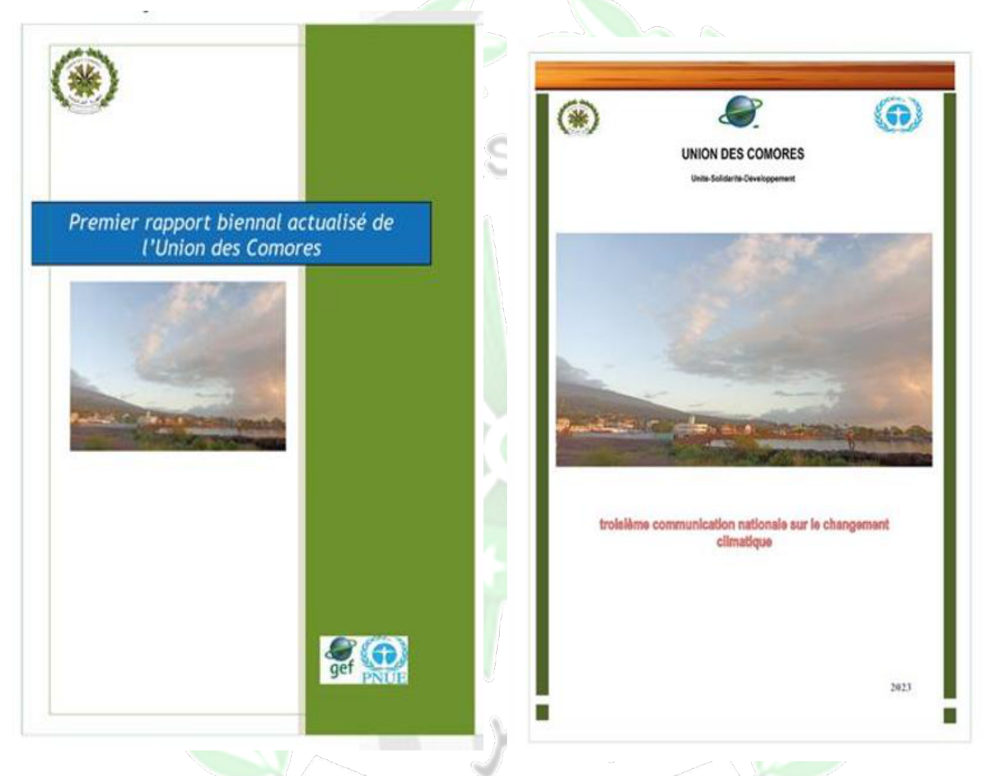
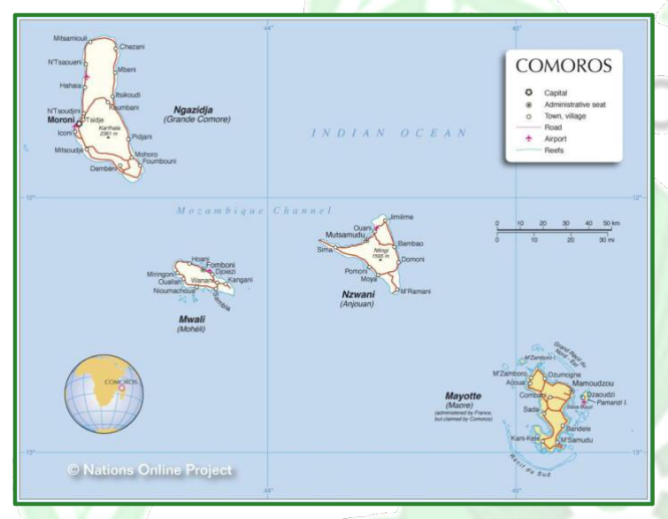
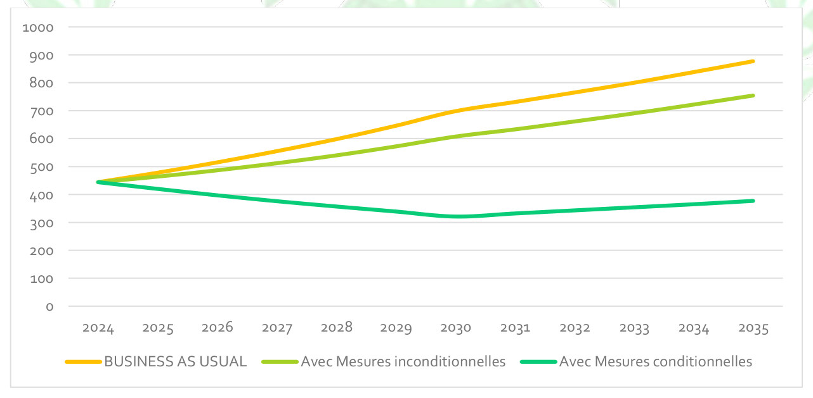
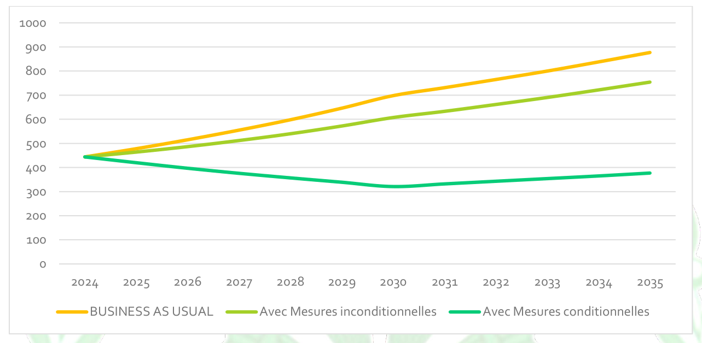
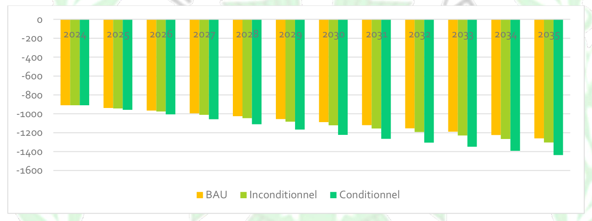
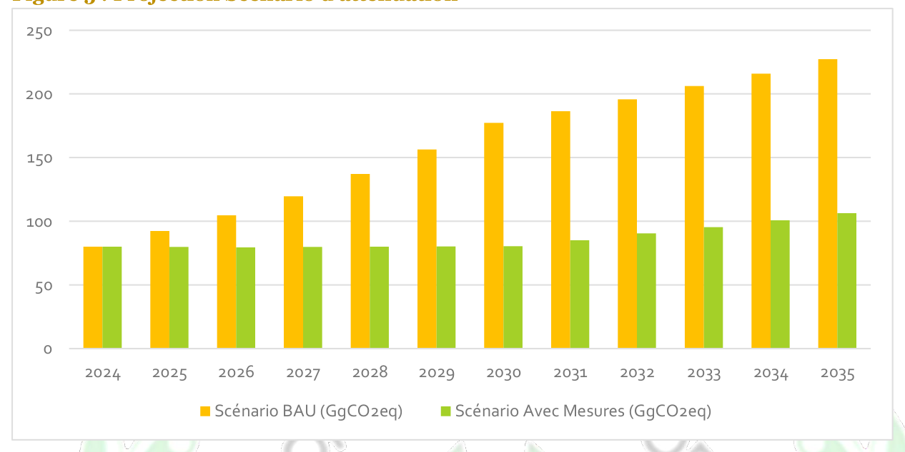
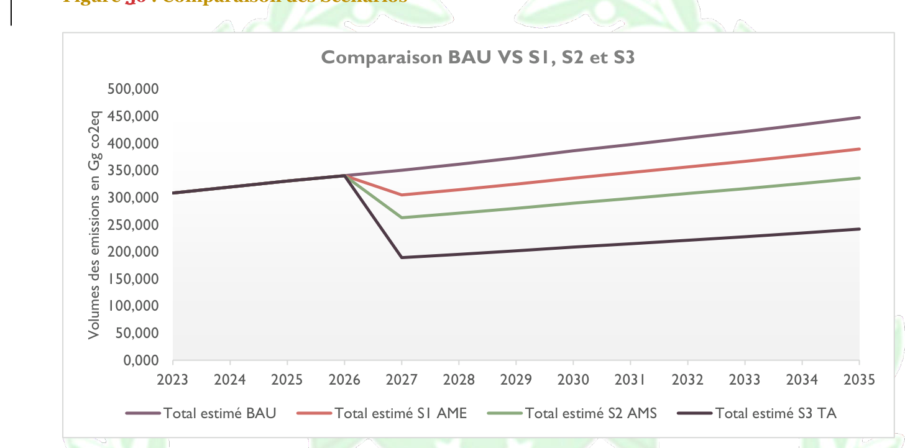
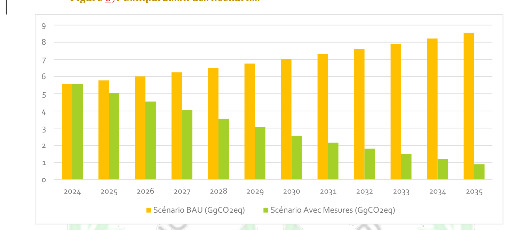
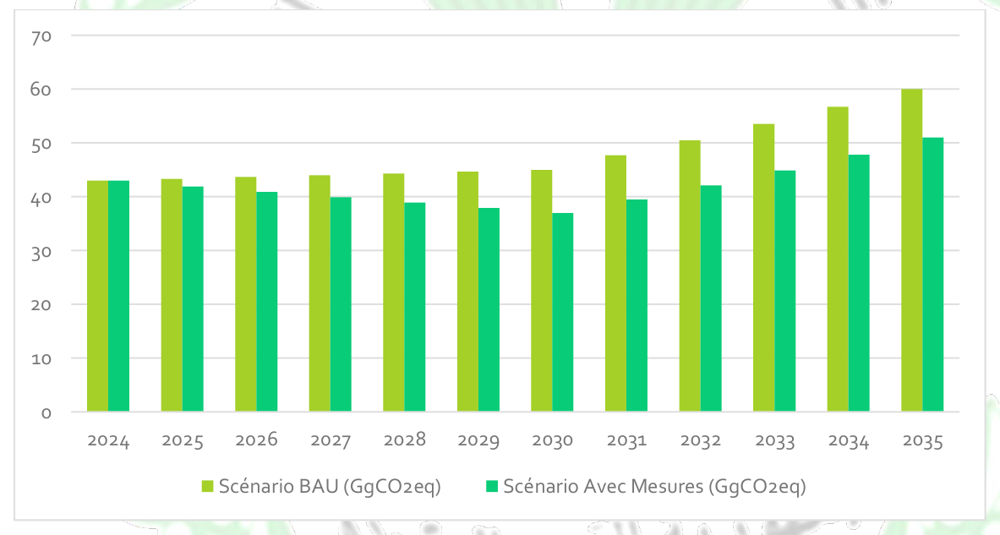

Union des Comores
Mars 2026
|
AFAT |
Agriculture, forêt et affectation des terres Agence des aires protégées |
|
BAU |
Business As Usual (scénario de référence) |
|
BTR |
Rapport Biennal de Transparence |
|
CCNUCC |
Convention Cadre des Nations Unies sur le Changement Climatique |
|
CON |
Contributions déterminées au niveau national Commissariat Général au Genre |
|
COP |
Conférence des Parties |
|
CO2-eq |
Equivalent CO2 |
|
DNSAE |
Direction Nationale des Stratégies Agricole Et d'Elevage Direction de l'Equipement et de l'Amenagement du Territoire. |
|
FAO |
Organisation des Nations Unies pour l'alimentation et l'agriculture |
|
FEM |
Fonds pour l'Environnement Mondial |
|
GES |
Gaz à Effet de Serre |
|
Gg CO2 eq |
Gigagramme d'équivalent CO2 |
|
GIEC |
Groupe d'Experts Intergouvernemental sur l'Evolution du Climat |
|
INRAPE |
Institut National de Recherche pour l'Agriculture, la Pêche et l'Environnement |
|
ITMOs |
Internationally Transferred Mitigation Outcomes |
|
KWh |
Kilowattheures |
|
MNV |
Mesure, Notification et Vérification |
|
ODD |
Objectifs de Développement Durable |
|
PANA |
Plan d'Action Nationale d'Adaptation aux changements climatiques |
|
PIED |
Petit Etat Insulaire en Développement |
|
PIUP |
Procédés industriels et utilisation des produits |
|
PNUD |
Programme des Nations Unies pour le Développement |
|
UTCF |
Utilisation des terres, changement d'affectation des terres et foresterie |
|
UCAEP |
Union des chambres d'agriculture, d'élevage et de pêche. |
|
PAT |
Plan d'Action Technologique vii TROISIEME CONTRIBUTION DETERMINEE AU NIVEAU NATIONAL (CDN 3.0) |
|
CH4 |
Méthane |
|
CO |
Monoxyde de Carbone |
|
CO2 |
Dioxyde de Carbone |
|
NOx |
Oxyde d'azote |
|
SF6 |
Hexafluorure de soufre |
|
SO2 |
Dioxyde de soufre |
|
CFC |
Chlorofluorocarbures |
|
HCFC |
Hydro chlorofluorocarbure |
|
COVNM |
Composé Organique Volatile Non- Méthane |
|
N20 |
Oxyde Nitreux |
|
TROISIEME CONTRIBUTION DETERMINEE AU NIVEAU NATIONAL (CDN 3.0) |
Entité nationale de pilotage
Ministère de l'Environnement chargé du Tourisme Partenaires au Développement
Appui de l'initiative Promesse climatique (Climate Promise) du Programme des Nations Unies pour le Développement (PNUD) ; Organisation Internationale pour le Travail (OIT)
Fonds des Nations Unies pour l'Enfance (UNICEF) - Programme des Nations Unies pour l'Environnement (PNUE) Structures d'appui d'élaboration
Green Future International (GFI) : Elaboration du rapport sur la CDN3.0 ; Parties Prenantes nationales : Secteur public : Tous les Ministères techniques
Direction nationale des stratégies agricole
Direction de l'aménagement
Commissariat général au plan
Commissariat genre
Direction de la sécurité civile
Direction nationale de la météorologie
Agence de l'aire protégée
Direction des énergies renouvelables
Direction de la pèche
Chambre d'agriculture et d'élevage
Agence nationale des déchets
Institut national de recherche agricole (INRAPE)
Direction de l'artisanat Secteur privé :
MODEC mouvement des entreprises comoriennes Organisations de la société civile :
Association Hawa pour le développement durable
Association pour la protection de l'environnement Banda BITSI
Le changement climatique représente l'un des défis les plus pressants auxquels l'humanité est confrontée, et l'Union des Comores n'y échappe pas. Ce phénomène, marqué par le réchauffement planétaire, entraîne déjà des impacts préoccupants qui menacent nos populations, nos écosystèmes et nos infrastructures. En tant qu'État insulaire en développement, notre pays est exposé de manière disproportionnée à ces risques climatiques, notamment l'élévation du niveau de la mer, l'érosion côtière, les perturbations agricoles et la variabilité accrue des précipitations. Conformément à l'Accord de Paris, auquel l'Union des Comores est partie depuis 2016, notre pays réaffirme son engagement à contribuer à l'effort mondial de réduction des émissions de gaz à effet de serre et à renforcer sa résilience climatique. La Contribution Déterminée au niveau National (CDN 3.0) traduit cette ambition renouvelée, en intégrant l'ensemble des priorités nationales en matière d'atténuation et d'adaptation pour la période allant jusqu'en 2035, avec une vision à long terme cohérente avec le Plan Comores Émergent. La CDN 3.0 met l'accent sur la réduction des émissions de GES à travers des actions ciblées dans les secteurs clés tels que l'énergie, les transports, les déchets, l'agriculture et la foresterie, tout en intégrant une transition progressive vers les énergies propres et l'amélioration de l'efficacité énergétique. Sur le volet adaptation, elle renforce les actions pour accroître la résilience des communautés face aux chocs climatiques, notamment dans les domaines de l'agriculture, de la gestion de l'eau, de la santé, des infrastructures, des écosystèmes et de la réduction des risques de catastrophes.
Monsieur Abubakar Ben Mahamoud
Ministre de l'Environnement chargé du Tourisme La dimension sociale occupe également une place importante dans cette CDN 3.0. Elle intègre l'équité, l'inclusion des femmes et des jeunes, ainsi que la protection des groupes vulnérables, afin de garantir que la transition climatique profite à l'ensemble de la population comorienne. La promotion de l'emploi vert, du développement durable et de l'innovation constitue un levier essentiel pour soutenir cette dynamique. Ce document s'aligne sur nos engagements nationaux et internationaux, dont l'Agenda 2030 et les Objectifs de Développement Durable. Il constitue un cadre stratégique essentiel pour orienter les actions climatiques du pays, mobiliser les partenaires techniques et financiers, et renforcer la coopération régionale et internationale. Nous adressons nos sincères remerciements à tous les partenaires institutionnels, techniques et financiers qui ont contribué à l'élaboration de cette CDN 3.0, ainsi qu'aux experts nationaux et aux acteurs des communautés locales qui ont participé activement aux consultations. Leur engagement a été déterminant pour la réalisation de ce document. L'Union des Comores demeure résolument engagée à agir pour le climat, pour le bien-être de sa population et pour un avenir durable et résilient.
Contexte et vision Nationale L'Union des Comores, Petit État Insulaire en Développement (PEID) situé dans l'océan Indien, subit de plein fouet les impacts du changement climatique, menaçant ses écosystèmes et son développement socio-économique. Alignée sur l'Accord de Paris et le Plan Comores Émergent 2030, cette Troisième Contribution Déterminée au niveau National (CDN 3.0) marque un renforcement significatif de l'ambition climatique du pays, visant à concilier résilience, transition juste et croissance bas-carbone.
Ambition d'Atténuation : Vers un Puits de Carbone Renforcé Bien que ses émissions historiques soient négligeables, les Comores s'engagent à une décarbonation profonde de leur économie. L'objectif global est de réduire les émissions de gaz à effet de serre (GES) de 57 % d'ici 2035 par rapport au scénario de référence (BAU).
Engagement Inconditionnel : Réduction de 14 % financée par les ressources nationales.
Engagement Conditionnel : Réduction supplémentaire de 43 %, conditionnée à un soutien international. Cette stratégie repose sur une transition énergétique majeure (géothermie, solaire), la mobilité durable et, surtout, le renforcement du secteur forestier et de l'utilisation des terres (UTCF). Grâce à la conservation et à la reforestation, les Comores ambitionnent non seulement d'atteindre la neutralité carbone, mais de demeurer un puits de carbone net pour la planète, avec une séquestration nette visée de -1 437 Gg CO2eq en 2035.
Priorités d’adaptation L'adaptation demeure la priorité absolue pour protéger la population et les infrastructures. La stratégie nationale se concentre sur cinq piliers interdépendants : 1. Eau et Gestion Hydrique : Sécurisation de l'accès à l'eau potable et gestion intégrée des bassins versants. 2. Agriculture et Sécurité Alimentaire : Promotion d'une agriculture climato-intelligente et résiliente. 3. Zones Côtières et Écosystèmes Marins : Protection du littoral, restauration des mangroves et pêche durable face à l'élévation du niveau de la mer. 4. Infrastructures et Habitat : Renforcement de la résilience du bâti et planification urbaine adaptée. 5. Santé et Bien-être : Lutte contre les maladies climato-sensibles et renforcement du système sanitaire.
Moyens De Mise En Œuvre Et Financement La mise en œuvre de cette CDN 3.0 requiert une mobilisation massive de ressources. Le coût total des investissements nécessaires est estimé à environ plusieurs centaines de millions autour de 600 millions de dollars d'ici 2035. La réussite de ce plan dépendra du transfert de technologies, du renforcement des capacités et d'un appui financier international robuste, tout en intégrant une approche inclusive sensible au genre et aux groupes vulnérables.
Context and National Vision The Union of Comoros, a Small Island Developing State (SIDS) in the Indian Ocean, faces critical vulnerabilities to climate change impacts that threaten its ecosystems and socio-economic development. Aligned with the Paris Agreement and the Plan Comores Emergent 2030, this Third Nationally Determined Contribution (NDC 3.0) represents a significant enhancement of the country's climate ambition, aiming to align resilience, a just transition, and low-carbon growth.
Mitigation Ambition : strengthening the Carbon Sink Despite negligible historical emissions, Comoros commits to a deep decarbonization of its economy. The overall target is to reduce Greenhouse Gas (GHG) emissions by 57% by 2035 compared to the Business As Usual (BAU) scenario.
Unconditional Commitment: A 14% reduction financed through national resources.
Conditional Commitment: An additional 43% reduction, contingent upon international support. This strategy relies on a major energy transition (geothermal, solar), sustainable mobility, and crucially, the Land Use, Land-Use Change, and Forestry (LULUCF) sector. Through conservation and reforestation, Comoros aims not only to achieve carbon neutrality but to remain a net carbon sink for the planet, targeting a net sequestration of -1,437 Gg CO2eq by 2035.
Adaptation Priorities Adaptation remains the absolute priority to protect the population and infrastructure. The national strategy focuses on f ive interdependent pillars: 1. Water and Water Management : Securing access to drinking water and integrated watershed management. 2. Agriculture and Food Security : Promoting climate-smart and resilient agriculture. 3. Coastal Zones and Marine Ecosystems: Protecting coastlines, restoring mangroves, and sustainable f isheries in the face of sea-level rise. 4. Infrastructure and Habitat : Strengthening building resilience and adaptive urban planning. 5. Health and Well-being: Combating climate-sensitive diseases and strengthening the health system.
Means of Implementation of Finance Implementing this NDC 3.0 requires substantial resource mobilization. The total investment needed is estimated at approximately several hundred million around 600 million USD by 2035. The success of this plan depends on technology transfer, capacity building, and robust international financial support, while integrating an inclusive approach sensitive to gender and vulnerable groups.
L'Union des Comores, État insulaire en développement situé dans l'océan Indien, est particulièrement vulnérable aux effets du changement climatique. Composé de quatre îles principales Grande Comores, Anjouan, Mohéli et Mayotte qui est restée sous administration française, le pays est exposé à des risques croissants tels que l'élévation du niveau de la mer, l'érosion côtière, les inondations, les hausses de température, les sécheresses, les cyclones tropicaux et la perte de biodiversité. Ces phénomènes menacent directement la sécurité alimentaire, l'accès à l'eau potable, la santé publique, les infrastructures et les moyens de subsistance des populations, en particulier celles vivant dans les zones rurales et côtières.
Consciente de ces défis, l'Union des Comores a développé sa Troisième Contribution Déterminée au niveau National (CDN 3.0), qui représente une étape majeure par rapport aux versions précédentes. Cette révision renforce les engagements nationaux en matière d'atténuation et d'adaptation, en les alignant plus étroitement avec l'Accord de Paris, l'agenda ODD 2030 ainsi que de l'Agenda 2063 de l'Union africaine. Elle traduit la volonté du pays de concilier transition énergétique, résilience climatique et croissance économique, malgré des capacités limitées et des contraintes socio-économiques persistantes.
En matière d'atténuation, la CDN 3.0 prévoit une réduction inconditionnelle de 14 % des émissions de gaz à effet de serre d'ici 20351 et une réduction conditionnelle de 43 %2 grâce au soutien international. Ces ambitions s'appuient sur le développement des énergies renouvelables, l'efficacité énergétique, la promotion des transports propres et la gestion durable des ressources naturelles, contribuant à la construction d'un modèle énergétique sobre en carbone.
L'adaptation constitue un axe central de la stratégie nationale. Les priorités identifiées concernent l'agriculture résiliente et la sécurité alimentaire, la gestion intégrée des ressources en eau et l'accès durable à l'eau potable, la protection des zones côtières et marines, la restauration des mangroves et la valorisation durable des ressources halieutiques, le renforcement de la santé publique face aux risques climatiques, ainsi que la préservation de la biodiversité et la restauration des écosystèmes forestiers. Ces mesures visent à réduire la vulnérabilité des populations et à assurer la durabilité des écosystèmes, tout en soutenant les moyens de subsistance et le développement économique local. La CDN 3.0 promeut également l’assurance inclusive et le financement de risques climatiques
comme outil essentiel pour renforcer la résilience des populations et soutenir la reprise après les catastrophes. La mise en œuvre de la CDN 3.0 nécessite des investissements estimés à environ 6,6 milliards USD3 d'ici 2030, mobilisables grâce à la coopération internationale, le transfert de technologies et le renforcement des capacités. La réussite de cette démarche repose sur une approche inclusive et participative, impliquant institutions publiques, société civile, secteur privé, collectivités locales et partenaires techniques et financiers, afin de garantir une réponse climatique équitable et adaptée aux réalités nationales. Au-delà de 2030, la CDN 3.0 incarne la vision stratégique de l'Union des Comores : construire un pays résilient face au changement climatique, protéger ses populations et ses écosystèmes, promouvoir une transition énergétique durable et inclusive, et contribuer activement aux efforts mondiaux de lutte contre le changement climatique en conciliant adaptation, atténuation et développement durable. La question du marché du carbone aux Comores prend une place croissante dans la stratégie climatique nationale, mais elle s’appuie aujourd’hui davantage sur le potentiel de puits naturels (notamment les terres et les mangroves) que sur un marché domestique structuré. La 3ᵉ CDN et les inventaires nationaux montrent que, dans les scénarios retenus, l’Union des Comores peut présenter un bilan net fortement négatif (puits net) à l’horizon 2030 sous l’effet d’actions dans le secteur AFAT et la restauration des mangroves, ce qui ouvre des opportunités pour des crédits carbone basés sur les absorptions (blue carbon, reforestation, pratiques agricoles durables). Le BUR1 et les inventaires soulignent toutefois des lacunes en matière de MRV (mesure, suivi et vérification), de référence de base et d’architecture institutionnelle prérequis nécessaires pour générer des crédits crédibles et participer de façon transparente aux marchés internationaux (Article 6). À court terme, les priorités sont donc : (i) renforcer les inventaires et les capacités MRV à cet effet, une feuille de route a été élaboré en 2020 pour la mise en place d’un système MRV nationale, (ii) définir un cadre national de gouvernance et de partage des bénéfices pour les crédits (sauvegardes, transparence, inclusion des communautés locales), et (iii) cibler des mécanismes compatibles avec la vision à long terme (crédits pour restauration côtière / mangroves, conservation carbone, et projets d’énergie renouvelable) afin d’attirer appui financier et transfert technologique. Bien exploitée et encadrée, la valorisation du service climatique des écosystèmes pourrait devenir une source de financement complémentaire pour l’adaptation et la résilience, à
condition d’assurer des garanties sociales et environnementales strictes et d’inscrire toute démarche dans la trajectoire d’atténuation et d’adaptation définie par la 3ᵉ CDN.
L’Union des Comores a ratifié la Convention-cadre des Nations Unies sur les changements climatiques (CCNUCC) le 31 Octobre 1994 en tant que partie non visée à l'annexe 1, le Protocole de Kyoto le 10 avril 2008, ainsi que l'Accord de Paris le 23 Novembre 2016. Ce faisant, les Comores ont affirmé leur engagement en faveur du programme mondial en vue d'atteindre l'objectif de l'article 2, paragraphes 1(a) et 1(b) de l'AP.
| Article 2, paragraphes 1 a) et 1 b) de l'Accord de Paris
Maintenir l'augmentation de la température moyenne mondiale bien en dessous de 2 °C au-dessus des niveaux préindustriels et poursuivre les efforts visant à limiter l'augmentation de la température à 1,5 °C au-dessus des niveaux préindustriels, en reconnaissant que cela réduirait considérablement les risques et les impacts des changements climatiques.
Accroître la capacité de s'adapter aux effets néfastes du changement climatique et favoriser la résilience climatique et un développement à faibles émissions de gaz à effet de serre, d'une manière qui ne menace pas la production alimentaire.
Les Comores ont soumis leur contribution prévue déterminée au niveau national (CPDN) en 2015.
L' Accord de Paris (L'article 4, paragraphe 2) exige de chaque Partie qu'elle établisse, communique et tienne à jour les contributions déterminées au niveau national (CDN) successives qu'elle a l'intention d'atteindre.
Ainsi, Conformément aux décisions 1/CP.19 et 1/CP.20 et à son Plan Comores Emergent 2030, les Comores ont révisé leur CPDN pour produire leur CDN 2.0 en 2021, et communique à travers ce document, leur Troisième Contribution Déterminée au niveau National (CDN 3.O) afin de traduire leur engagement et leur contribution dans la lutte contre les changements climatiques.
Les éléments repris dans la Contribution Déterminée au niveau National des Comores sont la synthèse de ses ambitions et de ses politiques publiques du pays qui, au moment d'opérer un tournant dans son développement, fait le choix de s'engager résolument dans un développement durable, basé sur un faible taux d'émissions de gaz à effet de serre (GES). Le pays désire ainsi contribuer aux efforts internationaux de lutte contre le réchauffement climatique en poursuivant l'objectif d'être un puits de carbone d'ici 2030.


Le pays a également préparé et soumis sa Troisième Communication Nationale sur les changements climatiques en 2023, un rapports biennaux actualisés (BUR) en 2023 et prépare son premier rapport biennal sur la transparence (BTR1) pour informer la Convention de ses émissions, des progrès accomplis dans la mise en œuvre de l'atténuation et de l'adaptation, et du soutien reçu et nécessaire.
Situé à l'entrée Nord du canal de Mozambique entre 11°20' et 13°14' de latitude Sud et 43°11' et 45°19' de longitude Est, à environ 300Km entre la côte Est de l'Afrique et Madagascar, l'Union des Comores, Petit Etat Insulaire en développement est un archipel constitué de quatre îles d'origines volcaniques (Ngazidja, Mwali, Ndzouani et Maoré) d'une superficie de 2236Km2. Une longueur totale de côtes de 340 km. Le plus haut sommet du pays (Karthala) se situe à 2.361 mètres d'altitude.
Source : Division géographique de la Direction des Archives du Ministère des Affaires Etrangères, de la Francophonie et du Monde Arabe,
La population résidante dénombrée lors du dernier recensement de 2017 est de 758 316 habitants4, dont 50 % résident à Ngazidja, 43,2 % à Ndzuwani et 6,8 % à Mwali. La population est estimée à 909529, en 2025 selon le résumé des projections démographiques des Comores du RGPH 2017. Avec environ 466 habitants au km², c'est aussi l'un des pays les plus densément peuplés de la planète. Seule une part relativement faible de la population (30 %) vit dans des régions urbaines. La population résidante totale, est donc majoritairement rurale (69,0 %) et jeune (53,8 % des
Carte géographique des Comores
2012
personnes sont âgées de moins de 20 ans).
Situé au sein d'un des 25 haut-lieux de la biodiversité mondiale, le pays présente une diversité des paysages naturels et une richesse en biodiversité écosystémique, faunistique et floristique avec des écosystèmes côtiers classés parmi les 43 régions marines prioritaires de la planète.
L’économie comorienne est peu diversifiée et est axée essentiellement sur le secteur primaire. En effet, ce dernier constitué de l'agriculture et de la pêche, représente toujours une part importante et croissante du PIB des Comores, ce qui met en lumière le potentiel d'une transformation structurelle future. Le secteur primaire a contribué à 36,4% du PIB en 2022, contre environ 30% en 2010. Cette progression résulte principalement d'une augmentation de la contribution du secteur de la pêche, qui est passée de 7,3% du PIB en 2010 à 13,1% en 2022. En parallèle, le secteur agricole a connu un rebond, avec une croissance de 3% sur la période 2021-2022, contre -0,4% entre 2016 et 20195. Ainsi, le PIB a augmenté de 1,9 %, en 2021 contre 0,2 % en 2020.
Le secteur primaire fournit 57 % des emplois totaux dont 62,7 % sont occupés par des femmes et 90 % des recettes d'exploitation.
Aussi l'économie repose largement sur la consommation, tirée par les transferts de fonds de la diaspora, et manque de diversité, le secteur privé étant de petite taille et essentiellement informel contribuant très peu à l'ajout de valeur. Les dons étrangers n'ont fait qu’aggraver l'absence d'incitations à l'investissement dans le capital humain et le stock d'investissement. Les taux de chômage sont relativement élevés, surtout chez les jeunes. La pauvreté constitue un véritable défi : selon les estimations, 39% de la population vivait sous le seuil de pauvreté en 2022. Cette situation est aggravée par des taux d'inflation élevés, culminant à 12,4% en 2022 avant de redescendre à 9,2% en 2023 puis à 2,2 pour cent en 2024.
Avec un revenu national brut par habitant de 1360 $, l'Union des Comores vient d'être classée parmi les pays à revenu intermédiaire dans la tranche inférieure. L'ambition est de passer dans la tranche supérieure à plus de 4000 $ par habitant à l'horizon 2030, en s'inspirant des pratiques et des modèles réussis d'autres pays émergents pour mettre l'Union des Comores sur la voie de l'expansion économique, rompre avec les cycles de croissance faible et volatile et créer une dynamique de croissance qui devrait atteindre une moyenne de plus de 7,5 % en 20306.
Le climat des Comores est déterminé par l'influence tropicale maritime de l'océan Indien et les alizés du sud-est. Sa situation géographique, au nord-ouest de Madagascar, lui confère un climat largement tropical, avec de faibles variations saisonnières de température. Cependant, l'altitude de
certaines parties des îles, en particulier sur l'île principale de Grande Comore (Ngazidja), influence considérablement le microclimat régional.
Deux saisons rythment l'année : la saison des pluies, chaude et humide, de novembre à avril, et la saison sèche, plus fraîche, de mai à octobre. Pendant la saison des pluies, les températures atteignent souvent 31 °C et sont accompagnées de fortes pluies. Pendant la saison sèche, les températures baissent légèrement et se situent en moyenne entre 23 et 27 °C. Les vents alizés atténuent la chaleur et assurent un équilibre thermique. En particulier, les côtes occidentales des îles, exposées aux vents, sont plus sèches que les côtes orientales, exposées aux alizés humides. Chacune des îles de l’archipel présente des caractéristiques climatiques propres :
Sur la Grande Comore, le volcan Karthala détermine le climat. En altitude, à partir de 800 m environ, les précipitations sont plus fréquentes et les températures plus fraîches, avec des moyennes journalières de 18 à 22 °C. En revanche, les régions côtières sont nettement plus chaudes, avec des températures journalières comprises entre 25 et 30 °C et un taux d'humidité élevé.
Anjouan possède une topographie accidentée avec des crêtes à la végétation dense. L'humidité y est constamment élevée et il y tombe jusqu'à 2 000 mm de pluie par an. La saison des pluies s'étend de novembre à avril. Le climat est plus frais dans les montagnes d'Anjouan que dans les zones côtières plates.
Mohéli est la plus petite des trois îles principales et présente un profil climatique plus uniforme, avec une répartition des températures et des précipitations similaires à celle d'Anjouan, mais avec une tendance à la baisse des valeurs extrêmes en raison du relief plus bas.
L'Union des Comores est particulièrement vulnérable aux risques climatiques. Selon l'indice mondial d'adaptation de Notre Dame, les Comores sont le 29e pays le plus vulnérable au changement climatique et se situent au 163e rang en ce qui concerne la préparation à l'adaptation, sur 191 pays évalués.
L'archipel est exposé à de nombreuses catastrophes naturelles qui affectent gravement le capital naturel, la population et les infrastructures physiques. Entre 2018 et 2023, le pays a subi 11 dépressions tropicales ou cyclones, le cyclone Kenneth ayant provoqué les plus lourds dégâts. Ces dommages ont représenté 14% du PIS, entraînant une baisse de la croissance économique de 3,6% en 2018 à 1,9% en 2019. Plus de 345 000 personnes, soit 40%de la population, ont été affectées
par le cyclone, dont 185 000 gravement affectées et 12 0007 déplacées. Malgré ces défis, les Comores disposent d'importantes opportunités pour renforcer leur résilience face aux crises climatiques.
Les principaux axes d'intervention pour les Comores face au changement climatique sont l'adaptation et le développement résilient, le pays devant faire face à des coûts supplémentaires de 836 millions USD8 d'ici 2050 en raison des impacts climatiques. L'élaboration de plan d'adaptation permettrait d'améliorer la gestion de l'eau, de renforcer la protection côtière et de développer des pratiques agricoles climato intelligentes, le renforcement de la capacité d'adaptation des secteurs liés aux ressources naturelles. En outre, il sera indispensable de mettre en œuvre une diversification économique stratégique afin de limiter les impacts climatiques futurs pour un développement à faible émission de carbone.
Ainsi, les activités de développement seront menées de manière à générer des co-bénéfices
2.6 Priorité de Développement de l'Union des Comores LE PLAN COMORES EMERGENT 2030 déroule la NOUVELLE AMBITION DE DÉVELOPPEMENT du gouvernement de faire entrer l'Union des Comores dans le concert des pays émergents à l'horizon 2030. Pour ce faire, le pays souhaite s'engage dans un processus de réformes profondes à tous les niveaux pour enclencher les mutations structurelles favorables à l'émergence. Cette vision repose sur les piliers ci- dessous
Les Socles de l’Emergence Des Comores Socle 1 : Le Tourisme Et L'artisanat, Des Atouts Majeurs Pour Les Comores Dans L'océan Indien
Socle 2 : Promouvoir La Transformation Structurelle De L'économie Bleue Des Comores Pour Relancer L'économie
Socle 3 : Les Comores, Un Hub De Services Financiers Et Logistiques Dans L'océan Indien
Socle 4 : Une Agriculture Modernisée
Socle 5 : Des Niches Industrielles Pour Diversifier L'économie
Les Catalyseurs De L’Emergence Des Comores
Catalyseur 1 : Un Cadre Politique Et Institutionnel Réformé Et Plus Stable
Catalyseur 2 : Des Infrastructures À Niveau Pour Une Économie Performante
Catalyseur 3 : Un Capital Humain Qui Prépare L'avenir
Catalyseur 4 : Des Réformes Structurelles Pour Un Environnement Compétitif Conductif
Catalyseur 5 : Les Comores, Un Acteur De La Révolution Numérique
L'inventaire des gaz à effet de serre pour le secteur AFAT aux Comores sur la période 2010-2024 met en évidence une dynamique particulièrement favorable, avec un puits net de carbone multiplié par plus de deux en quinze ans, atteignant environ -910 Gg CO2éq en 2024. Cette performance exceptionnelle est le fruit d'une gestion foncière encore extensive, d'une reconversion positive des terres, et du maintien des puits naturels que sont les forêts, prairies et zones humides.
Les émissions issues de l'élevage, de la gestion du fumier et de l'utilisation d'urée demeurent limitées, en l'absence d'intensification notable du secteur agricole. Toutefois, cette situation favorable pourrait évoluer avec la pression démographique, l'expansion des établissements et les mutations agricoles. Il est donc crucial d'institutionnaliser le suivi, de renforcer la transparence méthodologique, et de préserver les écosystèmes clés, afin de garantir à long terme le rôle stratégique du secteur AFAT dans l'atténuation des changements climatiques aux Comores.
Les émissions totales du secteur énergie sont passées d'environ 133 Gg CO2éq en 2010 à 320 Gg CO2éq en 2024, soit une augmentation de plus de 140 % en quinze ans. Cette progression reflète la dépendance croissante de l'économie comorienne aux énergies fossiles, notamment dans les secteurs de la production d'électricité, du transport terrestre, de la pêche et du résidentiel. Un pic majeur est enregistré en 2022, atteignant environ 322 Gg CO2éq, suivi d'une baisse en 2023 à 308 Gg CO2éq, avant une légère reprise en 2024. Cette dynamique est en grande partie influencée par les effets de la pandémie de COVID-19, marquée par une réduction significative des activités économiques en 2020, puis par une reprise rapide entre 2021 et 2022.
|
Années |
Émissions totales (Gg CO₂éq) |
|
2010 |
132,71 |
|
2011 |
149,67 |
|
2012 |
168,41 |
|
2013 |
174,28 |
|
2014 |
199,65 |
|
2015 |
217,95 |
|
2016 |
232,77 |
|
2017 |
251,4 |
|
2018 |
266,74 |
|
2019 |
272,32 |
|
2020 |
277,02 |
|
2021 |
298,33 |
|
2022 |
322,49 |
|
2023 |
308,45 |
|
2024 |
319,5 |
Les émissions totales du secteur déchets aux Comores sont estimées à environ 30,5 Gg CO 2eq en 2010 et atteignent près de 42,1 Gg CO2eq en 2024, soit une augmentation d'environ 38 % sur la période. Cette tendance modérée mais régulière s'inscrit dans le contexte plus large des dynamiques démographiques, économiques et institutionnelles du pays.
Plusieurs facteurs expliquent cette évolution : - Croissance démographique nationale - Maintien des pratiques traditionnelles de gestion - Absence de systèmes alternatifs de traitement ou de valorisation - Carence en infrastructures et en planification
|
Années |
Émissions totales (Gg CO₂éq) |
|
2010 |
30,4649 |
|
2011 |
31,0239 |
|
2012 |
31,6528 |
|
2013 |
32,3300 |
|
2014 |
33,0396 |
|
2015 |
33,7437 |
|
2016 |
34,4424 |
|
2017 |
35,1358 |
|
2018 |
35,8292 |
|
2019 |
36,5278 |
|
2020 |
37,2482 |
|
2021 |
37,9951 |
|
2022 |
38,3166 |
|
2023 |
39,4894 |
|
2024 |
42,1177 |
Les émissions du secteur PIUP ont connu une augmentation brutale au cours de la période de 2010-2024, passant de 6,62993 Gg CO2eq en 2019 à 17,97792 Gg CO,eq en 2022. Cette hausse s'explique principalement par l'accumulation des importations de lubrifiants et de paraffine enregistrées à la douane durant la période de COVID-19, coïncidant avec la reprise des activités socio -économiques, rapport à une baisse des activités commerciales durant la pandémie
|
Années |
Émissions totales GES |
|
2010 |
4,11797 |
|
2011 |
4,76261 |
|
2012 |
4, 50934 |
|
2013 |
4, 63752 |
|
2014 |
6,22553 |
|
2015 |
10, 75842 |
|
2016 |
8, 03473 |
|
2017 |
7, 05921 |
|
2018 |
6, 69942 |
|
2019 |
6,62993 |
|
2020 |
6, 91296 |
|
2021 |
6, 52291 |
|
2022 |
17,97792 |
|
2023 |
9, 76631 |
|
2024 |
5,56262 |
L'analyse comparée des projections d'émissions de gaz à effet de serre (GES) sur la période 2024-2035 met en lumière l'ambition transformatrice de la Contribution Déterminée au Niveau National (CDN) des Comores. Le tableau des tendances illustre une rupture nette entre le scénario de référence ("Business as Usuel" - BAU), marqué par une croissance continue des émissions, et le scénario d'atténuation ("With Measures"), qui engage le pays sur une voie de développement bas-carbone résiliente.

|
Emissions en Gg CO2eq) |
2024 |
2025 |
2026 |
2027 |
2028 |
2029 |
2030 |
2031 |
2032 |
2033 |
2034 |
2035 |
|
BUSINESS AS USUAL |
444 |
478 |
515 |
555 |
598 |
646 |
698 |
731 |
765 |
800 |
838 |
877 |
|
Avec Mesures inconditionnelles |
444 |
464 |
487 |
512 |
540 |
572 |
607 |
633 |
661 |
690 |
722 |
754 |
|
Avec Mesures conditionnelles |
444 |
420 |
397 |
376 |
357 |
339 |
321 |
332 |
343 |
354 |
365 |
377 |
La stratégie des Comores se déploie en deux étapes clés, consolidant l'engagement du pays à inverser sa courbe d'émissions malgré les impératifs de développement
Horizon 2030 : À cette étape intermédiaire, les Comores visent une réduction globale des émissions de GES de 54% par rapport au scénario de référence. Cet objectif se décompose en une contribution inconditionnelle de 13%, financée par les ressources nationales, et une contribution conditionnelle de 41%, dépendante du soutien international.
Horizon 2035 : L'effort s'intensifie pour atteindre une réduction de 57% des émissions (soit un évitement d'environ 499,68 GgCO2eq par rapport au BAU). À cet horizon, la part inconditionnelle progresse à 14%, tandis que la part conditionnelle atteint 43%
|
GHG émissions : Gg CO2eq |
2024 |
2025 |
2026 |
2027 |
2028 |
2029 |
2030 |
2031 |
2032 |
2033 |
2034 |
2035 |
|
|
BUSINESS AS USUAL |
1. Energy |
320 |
342 |
365 |
390 |
416 |
445 |
475 |
496 |
517 |
539 |
563 |
587 |
|
2. IPPU |
6 |
6 |
6 |
6 |
7 |
7 |
7 |
7 |
8 |
8 |
8 |
9 |
|
|
3. Agriculture |
80 |
92 |
105 |
120 |
137 |
156 |
177 |
186 |
196 |
206 |
216 |
227 |
|
|
4. LULUCF (Net Sink) |
-910 |
-938 |
-966 |
-995 |
-1025 |
-1056 |
-1087 |
-1120 |
-1154 |
-1189 |
-1224 |
-1260 |
|
|
5. Waste |
43 |
43 |
44 |
44 |
44 |
45 |
45 |
48 |
50 |
53 |
57 |
60 |
|
|
Total (including LULUCF) |
-466 |
-460 |
-452 |
-441 |
-427 |
-410 |
-389 |
-389 |
-390 |
-389 |
-387 |
-383 |
|
|
Total (excluding LULUCF) |
444 |
478 |
515 |
555 |
598 |
646 |
698 |
731 |
765 |
800 |
838 |
877 |
|
|
WITH MEASURES |
1. Energy |
320 |
298 |
277 |
258 |
240 |
223 |
207 |
210 |
214 |
217 |
221 |
224 |
|
2. IPPU |
1 |
1 |
1 |
1 |
1 |
1 |
0 |
0 |
0 |
0 |
0 |
0 |
|
|
3. Agriculture |
80 |
80 |
80 |
80 |
80 |
80 |
80 |
85 |
90 |
95 |
100 |
106 |
|
|
4. LULUCF (Net Sink) |
-910 |
-957 |
-1006 |
-1057 |
-1110 |
-1166 |
-1223 |
-1264 |
-1305 |
-1348 |
-1392 |
-1437 |
|
|
5. Waste |
43 |
42 |
41 |
40 |
39 |
38 |
37 |
40 |
42 |
45 |
48 |
51 |
|
|
Total (including LULUCF) |
-466 |
-537 |
-609 |
-680 |
-753 |
-827 |
-902 |
-933 |
-963 |
-994 |
-1026 |
-1060 |
|
|
Total (excluding LULUCF) |
444 |
420 |
397 |
376 |
357 |
339 |
321 |
332 |
343 |
354 |
365 |
377 |
|
|
Réduction (% excl LULUCF) |
0% |
12% |
23% |
32% |
40% |
48% |
54% |
55% |
55% |
56% |
56% |
57% |
Cette trajectoire permet de contenir les émissions brutes (hors foresterie) à environ 377 GgCO2eq en 2035, contre une projection tendancielle qui aurait atteint 877 Gg CO2eq en l'absence de mesures.
18
La réussite de ces objectifs repose sur des transformations structurelles profondes dans des secteurs stratégiques identifiés pour leur fort potentiel de réduction :
La production d'énergie : C'est le levier principal de la CDN. Alors que le scénario BAU prévoit une explosion des émissions dues à la demande énergétique (atteignant 587 GgCO 2eq en 2035), le scénario d'atténuation parvient à stabiliser ces émissions à 224 GgCO 2eq. Cette réduction massive est rendue possible par le remplacement progressif des énergies fossiles par des sources renouvelables (géothermie, solaire, hydroélectricité). Les transports : Inclus dans le secteur de l'énergie, le transport représente un gisement d'économies carbone majeur. La transition vers la mobilité électrique et l'amélioration de l'efficacité des véhicules permettent de découpler la mobilité de la consommation d'hydrocarbures importés. L'agriculture et les déchets : Ces deux secteurs sont cruciaux non seulement pour le CO2, mais surtout pour la maîtrise des émissions de méthane (gestion des sols, élevage et traitement des déchets), contribuant directement à la stratégie sur les polluants de courte durée de vie.
Un point saillant de cette mise à jour de la CDN est l'action ciblée sur les polluants climatiques à courte durée de vie (SLCP), en particulier le méthane (CH4). L'analyse des données montre une réduction significative des émissions de méthane, passant d'un potentiel de 233 GgCO2eq (BAU) à 116 GgCO2eq (avec mesures). Cela représente une réduction d'environ 50 % (49,7%) des SLCP. Cette performance confirme l'alignement des Comores avec les initiatives globales visant à réduire rapidement le réchauffement à court terme.
Enfin, le secteur UTCF (Utilisation des Terres, Changement d'Affectation des Terres et Foresterie) demeure la pierre angulaire de la neutralité carbone comorienne. Grâce aux mesures de conservation et de reforestation, la capacité de séquestration du pays augmente considérablement, passant d'une absorption nette de -910 GgCO2eq en 2024 à -1437 CgCO2eq en 2035. Cette augmentation de la capacité du puits de carbone permet aux Comores de maintenir un "Bilan Carbone Total" négatif (séquestration nette de -1 060 GgCO2eq en 2035), confirmant le statut du pays comme puits de carbone net pour la planète.
L'élaboration de la troisième Contribution Déterminée au niveau National (CDN3.0) des Comores a suivi une approche participative et inclusive alignée sur les meilleures pratiques internationales recommandées par le GIEC afin de garantir une couverture complète des larges groupes de parties prenantes et garantir que leurs besoins, rôles et priorités soient pleinement intégrés dans la CDN 3.0. Conduit sous la coordination de la Direction Générale de l'Environnement et des Forêts avec l'appui technique de Green Future International (GFI), du Programme des Nations Unies pour le Développement (PNUD), UNICEF, OIT. Les principaux ministères en charge de (l'Environnement, l'Énergie, l'Agriculture, Transports, Industrie, Santé, Finances, etc.), le Commissariat général au plan, la société civile et collectivité territoriale, départements et organismes gouvernementaux et Internationaux ont participé activement et collaboré à ce processus de révision et de mise à jour, y compris ceux qui ont pour mandat de promouvoir l'égalité de genre et l'inclusion sociale Le processus de révision et de mise à jour comprenait plusieurs étapes pour assurer un exercice de consultation complet et approfondi qui produirait la meilleure version possible de la CDN pour guider le pays dans sa stratégie de développement à faibles émissions afin de respecter l'engagement de zéro émission nette. Les différentes étapes, menées à bien, ont alimenté l'exercice de révision et d'actualisation et a engagé environs 250 personnes toutes institutions confondues. Ainsi, plusieurs réunions de consultation des parties prenantes et de coordinations des activités ont eu lieu entre Septembre et Octobre 2025 afin de développer cette CDN. Le processus a combiné plusieurs mécanismes présentés dans la figure ci-dessous :
Entretiens bilatéraux afin de recueillir Ateliers nationaux de
Consultations sectorielles
lancement et de validation des données spécifiques
La CDN3.0 s'inscrit dans la continuité de la CDN2.0 actualisée en 2021. La Consultation de ce document et les enseignements tirés de sa mise en œuvre ont constitué un point de départ essentiel pour définir des cibles actualisées et des mesures réalistes tout en proposant un cadre de mise en œuvre renforcé.
Bien que les objectifs principaux de la CDN 3.0 soient de répondre aux articles 4, 7, 9,10 et 11 de l'AP, les mesures et actions identifiées sont également en alignement avec les priorités nationales et les processus clé du Gouvernement des Comores. La cohérence avec les documents d'orientation nationaux a été assuré à savoir : avec les communications nationales et les rapports d'inventaire issus du Rapport Biennal de transparence (BTR), ainsi qu'avec les principaux plans et stratégies nationaux de développement (plan Comores Emergent, etc.), stratégies sectorielles. Cela afin de garantir leur comparabilité aussi bien au niveau national qu'international. Sont également mis en avant les aspect genre et inclusion social, sensibles aux jeunes et aux enfants, le respect des besoins, des droits et les priorités des communautés locales, ainsi que d'autres groupes vulnérables telles les personnes vivant avec un handicap.
|
Nom de la politique, mesures et actions |
Description |
Objectifs |
Années |
|
Le Plan Comores Emergent (PCE). |
Le Plan Comores Emergent décline les ambitions de développement du pays de manière à orienter l’action de tous, l’Etat, le secteur privé, les corps intermédiaires, la société civile, les partenaires au développement, au Service de l’œuvre commune. |
Ce plan stratégique détaille les idées phares, les projets d’envergure qui seront les moteurs de la transformation structurelle de l’économie comorienne. Il intègre également la réalisation des Objectifs de Développement Durable à l’horizon 2030 et de l’Agenda 2063 de l’Union Africaine. |
Horizon 2030 |
|
Le Programme d'Action National d'Adaptation (PANA) |
Le PANA des Comores est un outil stratégique qui vise réduire la vulnérabilité des Comores et de sa population aux effets du changement climatique. Il est articulé autour de quatre axe : Une vue générale du contexte géographique, environnemental et socio-économique des Comores : Une analyse de la variabilité du climat et des changements climatiques L’objectif du PANA et la stratégie de mise en œuvre Un recensement des options d’adaptation face aux changements climatiques |
Le PANA vise à identifier les besoins immédiats et urgents d'adaptation en indiquant les activités prioritaires pour réduire les effets néfastes des changements climatiques sur les moyens de subsistance des populations et les zones les plus vulnérables |
2006 |
|
Les Plans d’Actions Technologique |
Les PAT sont des documents élaborés afin d’orienter les décisions permettant d’adopter et de diffuser des technologies prioritaires susceptibles de contribuer à la réalisation des objectifs d’atténuation et d’adaptation de l’Union des Comores face aux changements climatiques |
L’objectif est de procéder à une évaluation des besoins technologiques pour les Secteurs de l’Adaptation et de l’atténuation (l’agriculture et la zone Côtière, Forêt et de la production de l’électricité) à travers : la hiérarchisation les technologies prioritaires par secteurs et l’analyse des barrières et des mesures potentielles pour la mise en œuvre de chacune des technologies Priorisées. |
Horizon 2030 |
La composante d'atténuation de la CDN 3.0 couvre tous les secteurs du GIEC : l'énergie (y compris les transports), PIUP, l'Agriculture, Foresterie et autre Affectation des Terres et les déchets.
La CDN couvre les gaz que sont : Dioxyde de carbone (CO2) ; Méthane (CH4) ; Oxyde nitreux (N2O) ; Gaz fluorés (HFC).
Les méthodes et techniques du GIEC ont été utilisées pour estimer les émissions, faire des projections et évaluer le potentiel de réduction des émissions des mesures et des actions, les lignes directrices du GIEC de 2006, y compris son supplément de 2013 sur les zones humides et l'affinement de 2019.

Le secteur forestier (Utilisation des Terres, Changement d'Affectation des Terres et Foresterie - UTCF) de l'Union des Comores joue un rôle crucial dans le stockage du carbone et la régulation climatique. Les récents inventaires de gaz à effet de serre (2024) confirment que ce secteur constitue le principal puits de carbone du pays, compensant largement les émissions des autres secteurs. L'objectif de cette section est de présenter les trajectoires d'évolution de ce puits de carbone pour la période 2024-2035. Les données s'appuient sur l'inventaire national 2025 qui établit un niveau de séquestration nette de référence de -910 Gg CO2eq en 2024.
Les scénarios visent à évaluer comment les politiques de gestion forestière peuvent augmenter la capacité de séquestration du pays. Les projections intègrent les données d'inventaire les plus récentes (FAT 5) et les ambitions de la 3e Communication Nationale.
Trois scénarios sont présentés :
Scénario 1 - Tendanciel (Business As Usual, BAU) : Poursuite des dynamiques actuelles. Bien que la forêt subisse des pressions, le bilan net reste négatif (puits) et augmente naturellement en raison de la croissance de la biomasse existante et des méthodologies de comptabilisation, atteignant -1 260 Gg CO2eq en 2035.
Scénario 2 - Mesures Inconditionnelles : Programme national de reboisement et lutte contre les feux sur financement propre. Il vise à renforcer modérément le puits de carbone au-delà du BAU.
Scénario 3 - Mesures Conditionnelles : Scénario très ambitieux intégrant un soutien international massif pour l'agroforesterie généralisée, la restauration des bassins versants et la protection stricte. Ce scénario vise à maximiser le puits de carbone pour atteindre -1437 Gg CO2eq en 2035.
Scénario 1- Tendanciel ou Business As Usual (BAU)
Dans le scénario de référence, le secteur UTCF maintient sa fonction de puits de carbone avec une croissance tendancielle. La capacité d'absorption nette passe de -910 Gg CO2eq en 2024 à -1260 Gg CO2eq en 2035.
|
Année |
2024 |
2025 |
2026 |
2027 |
2028 |
2029 |
2030 |
2031 |
2032 |
2033 |
2034 |
2035 |
|
Puits (Gg CO2eq) |
-910 |
-938 |
-966 |
-995 |
-1 025 |
-1 056 |
-1 087 |
-1 120 |
-1 154 |
-1 189 |
-1 224 |
-1 260 |
Scénario 2- Mesures Inconditionnelles
Avec l'application des mesures inconditionnelles (efforts propres de l'État et des communautés), la capacité de séquestration est améliorée par rapport au BAU. Les actions de lutte contre les feux et de reboisement communautaire permettent d'accroître le puits de carbone.
|
Année |
2024 |
2025 |
2026 |
2027 |
2028 |
2029 |
2030 |
2031 |
2032 |
2033 |
2034 |
2035 |
|
Puits (Gg CO2eq) |
-910 |
-943 |
-976 |
-1 010 |
-1 046 |
-1 083 |
-1 121 |
-1 156 |
-1 192 |
-1 229 |
-1 266 |
-1 304 |
Scénario 3 - Mesures Conditionnelles
C'est le scénario de transformation ("With Measures" dans la CDN). Grâce à l'agroforesterie et à la gestion durable des terres soutenues par la finance climatique, le puits de carbone est considérablement renforcé. La séquestration nette atteint -1437 Gg CO2eq en 2035.
|
Année |
2024 |
2025 |
2026 |
2027 |
2028 |
2029 |
2030 |
2031 |
2032 |
2033 |
2034 |
2035 |
|
Puits (Gg CO2eq) |
-910 |
-957 |
-1 006 |
-1 057 |
-1 110 |
-1 166 |
-1 223 |
-1 264 |
-1 305 |
-1 348 |
-1 392 |
-1 437 |
L'analyse comparée montre que l'intervention humaine (mesures d'atténuation) permet de décupler le service écologique rendu par la forêt comorienne.

Gain du Scénario 3 vs BAU : En 2035, le scénario conditionnel permet de séquestrer 177 Gg CO2eq supplémentaires par rapport au scénario tendanciel (-1 437 contre -1260).
Impact global : Ce renforcement du puits de carbone est essentiel pour l'Union des Comores. Il permet non seulement de neutraliser les émissions des secteurs Énergie et Déchets, mais de générer un crédit carbone net pour la planète, consolidant le statut de "Puits de Carbone Net" du pays à l'horizon 2035.
|
Scénario / Année |
2024 |
2025 |
2026 |
2027 |
2028 |
2029 |
2030 |
2031 |
2032 |
2033 |
2034 |
2035 |
|
BAU |
-910 |
-938 |
-966 |
-995 |
-1 025 |
-1 056 |
-1 087 |
-1 120 |
-1 154 |
-1 189 |
-1 224 |
-1 260 |
|
Inconditionnel |
-910 |
-943 |
-976 |
-1 010 |
-1 046 |
-1 083 |
-1 121 |
-1 156 |
-1 192 |
-1 229 |
-1 266 |
-1 304 |
|
Conditionnel |
-910 |
-957 |
-1 006 |
-1 057 |
-1 110 |
-1 166 |
-1 223 |
-1 264 |
-1 305 |
-1 348 |
-1 392 |
-1 437 |
L'objectif est d'évaluer la faisabilité économique et financière des différents scénarios d'atténuation identifiés au chapitre précédent. L’analyse porte sur :
Les coûts d'implémentation des mesures-
Le rapport coût-efficacité en termes de réduction des émissions.
Les couts des mesures d'atténuation du secteur FAT sont estimés en se basant sur les informations fournies dans la CDN 2.0. La valeur de 1 160USD/ha (1 000euros/ha) les actions de boisement, permaculture, reboisement, et l'agroforesterie. Pour les aires protégées, le cout minimal de 24USD/ha/an (20 euros/ha/an). Ces couts sont reportés dans la CDN 2.0
|
Mesure |
Coût (USD) |
Période |
Calcul de l’impact |
|
Afforestation des prairies (plantation d’Eucalyptus) |
1,392,000 208,800 Total : 1,600,800 |
2026 - 2035 2036 - 2050 |
Plantation d’Eucalyptus d’une superficie totale de 1 200 ha de forêt à l’horizon 2035 : 120 ha/an jusqu’à 2035. De 2036 à 2050, plantation de 1% annuellement pour atteindre 1 380 ha en 2050 : 12 ha/an. Tenant compte du taux d’absorption de 5t.d.m/ha/an (Tableau 4.10, Chap. 4 ; Vol 4 ; GIEC, 2006). |
|
Reboisement (reboisement intensif des zones dégradées avec espèces locales) |
2,552,000 382,800 Total : 2,934,800 |
2026 - 2035 2036 - 2050 |
Reboisement d’une superficie totale de 2 200 ha à l’horizon 2035 soit 220 ha/an. De 2036 à 2050, reboisement de 1% annuellement (22 ha/an) pour atteindre 2 530 ha en 2050. Tenant compte du taux d’absorption de 5t.d.m/ha/an (Tableau 4.12, Chap. 4 ; Vol 4 ; GIEC, 2006) pour les forêts naturelles. |
|
Agroforesterie cultures restant cultures, sur lesquelles on ajoute plus d’arbres |
2,320,000 348,000 Total : 2,668,000 |
2026 - 2035 2036 - 2050 |
Valorisation et l’extension des systèmes agroforestiers existants d’au moins 200 ha/an de 2026 à 2035. Augmentation de la superficie annuellement de 1% (20 ha/an supplémentaire) de 2036 à 2050 pour atteindre 2 300 ha. Tenant compte du taux d’absorption de 10t.d.m/ha/an (Tableau 5.1, Chap. 4 ; Vol 4 ; GIEC, 2006). |
|
Plantations communales |
2,575,200 38,280 Total : 2,613,480 |
2026 - 2035 2036 - 2050 |
Mise en place de plantations communales d’une superficie totale de 2 220 ha à l’horizon 2035, soit 220 ha/an. De 2036 à 2050, augmentation de 1% du taux annuel (soit 2,22 ha/an de plus) pour atteindre 2 253 ha à l’horizon 2050. Tenant compte du taux d’absorption de 15t.d.m/ha/an Tableau 4.12, Chap 4 ; Vol 4 ; GIEC, 2006. |
|
Aires protégées |
12,120,000 18, 180,000 Total : 30,300,000 |
2026 - 2035 2036 - 2050 |
Superficies des aires protégées terrestres observées en 2025 est de 34 128 ha. Extension de la superficie de 16 372 ha en 2026 pour atteindre 50 500 ha à l’horizon 2035. Superficie restera constante jusqu’à l’horizon 2050. Tenant compte du taux d’absorption des aires protégées terrestres du Gabon de 1,64t.d.m/ha/an9 selon l’assomption que le taux de croissance est similaire que les forets des aires protégées des Comores. |
-Scénario tendanciel (BAU)
|
Action |
Coût 2026-2035 (USD) |
Coût 2036-2050 (USD) |
Total (USD) |
|
Aires protégées terrestres |
8 190 720 |
12 286 080 |
20 476 800 |
|
Total |
8 190 720 |
12 286 080 |
20 476 800 |
Scénario avec mesure inconditionnelles
|
Action |
Coût 2026-2035 (USD |
Coût 2036-2050 (USD) |
Total (USD) |
|
Aires protégées terrestres |
12 120 000 |
18 180 000 |
30 300 000 |
|
Reboisement |
2 552 000 |
382 800 |
2 934 800 |
|
Afforestation |
1 392 000 |
208 800 |
1 600 000 |
|
Plantations communales |
2 575 200 |
38 280 |
2 613 480 |
|
Total |
18 639 200 |
18 809 880 |
37 449 080 |
Scénario avec mesures conditionnelles
|
Action |
Coût 2026-2035 (USD) |
Coût 2036-2050 (USD) |
Total (USD) |
|
Aires protégées terrestres |
12 120 000 |
18 180 000 |
30 300 000 |
|
Reboisement |
2 552 000 |
382 800 |
2 934 800 |
|
Afforestation |
1 392 000 |
208 800 |
1 600 000 |
|
Plantations communales |
2 575 200 |
38 280 |
2 613 480 |
|
Agroforesterie |
2 320 000 |
348 000 |
2 668 000 |
|
Total |
20 959 200 |
19 157 880 |
40 117 080 |
|
Tableau 15: Cout- |
Émissions évitées cumulées 2026–2035 (t CO₂eq) |
Coût total cumulé (USD) |
Coût par t CO₂eq évitée (USD) |
|
Efficacité Scénario |
|||
|
BAU |
244 725 |
8 190 720 |
33.47 |
|
Mesures Inconditionnelles |
1 667 840 |
18 639 200 |
11.18 |
|
Mesures Conditionnelles |
1 953 464 |
20 959 200 |
10.73 |
Les résultats sont sensibles aux variations du prix du crédit carbone. Une hausse du prix du carbone (USD/tCO2eq) augmente la rentabilité nette des scénarios modéré et ambitieux. La baisse des coûts d'implémentation via des partenariats locaux peut également améliorer le retour sur investissement.
Le scénario BAU montre une perte significative de carbone forestier si aucune mesure n'est prise. Les scénarios d'atténuation démontrent le potentiel de réduction des émissions par la combinaison de gestion durable, reforestation et protection des zones critiques. Ainsi, le scénario avec des mesures conditionnelles constitue la stratégie la plus efficace pour atteindre les objectifs nationaux de réduction des GES. Cela nécessite une mobilisation des ressources nécessaires pour sa mise œuvre. Toutefois, des limites sont observées avec les incertitudes sur le taux de séquestration et les facteurs d'émission de carbone, la régénération naturelle et les impacts climatiques futurs.
Pour atteindre ces objectifs, il est recommandé de :
Établir un plan national de gestion durable des forêts incluant tous les acteurs.
Renforcer les capacités institutionnelles et techniques pour la mise en œuvre des programmes de restauration.
Intégrer le suivi des stocks de carbone dans les politiques forestières nationales.
Promouvoir l'agroforesterie et la gestion communautaire des ressources.
Développer un cadre incitatif pour les initiatives locales de reboisement.
Mobiliser les financements climat pour soutenir les projets pilotes.
Mettre en œuvre un suivi spatial annuel de la couverture forestière.
Renforcer la surveillance forestière et la collecte de données pour améliorer la précision des modèles.
Instaurer des mesures concrètes pour le stockage et la disponibilité des données forestiers.
Coupler les mesures d'atténuation avec des programmes socio-économiques (emplois verts, communautés locales).
Intégrer les résultats dans la potentielle stratégie nationale REDD+ et les NDC pour aligner politiques et objectifs internationaux.
Encourager la restauration et reforestation participatives avec suivi de la séquestration carbone par Île
Ainsi, Le scénario avec mesures conditionnelles, bien que plus coûteux, est économiquement le plus avantageux en termes de réduction des émissions et de services écosystémiques. L'adoption du scénario avec mesures inconditionnelles peut constituer une étape transitoire en attendant des financements supplémentaires. La mobilisation de crédits carbone, subventions et partenariats internationaux est essentielle pour garantir la viabilité financière.
Le secteur de l'Agriculture (hors foresterie) représente un enjeu majeur pour l'Union des Comores, à la fois pour la sécurité alimentaire et pour l'empreinte carbone nationale. Selon les données du Rapport Sectoriel AFAT 5 (2025), les émissions de ce secteur sont dominées par l'élevage, qui constitue une part significative des émissions de méthane (CH4) et de protoxyde d'azote (N20).
L'analyse des sous-catégories révèle que les émissions sont portées par trois sources principales :
1) La fermentation entérique (Élevage) : C'est la source prépondérante. Le cheptel (bovins, caprins), souvent géré de manière extensive avec une alimentation pauvre en nutriments, génère d'importantes quantités de méthane lors de la digestion. 2) La gestion des sols agricoles : Les émissions directes et indirectes de N20 liées à l'épandage d'engrais synthétiques (urée) et organiques, ainsi qu'au lessivage des sols. 3) La gestion du fumier : Bien que plus modeste, cette source contribue aux émissions via le stockage et le traitement des déjections animales sans récupération de biogaz.
La tendance historique montre une corrélation directe entre la croissance démographique et l'augmentation du cheptel, entraînant une hausse mécanique des émissions en l'absence d'amélioration de la productivité par tête
L'année 2024 est retenue comme année de base pour les projections, avec un niveau d'émissions de référence de 80,1 Gg CO2eq. Ce chiffre reflète l'état actuel des pratiques agricoles avant la mise en œuvre intensifiée des mesures de la nouvelle CDN.
Le scénario de référence (BAU) suppose le maintien des pratiques agricoles actuelles. Dans cette configuration, la demande alimentaire croissante entraîne une expansion rapide des émissions :
Horizon 2030 : Les émissions feraient plus que doubler pour atteindre 177,3 Gg CO2eq.
Horizon 2035 : La tendance se poursuivrait pour atteindre 227,4 Gg CO2eq, tirée par l'augmentation nécessaire du cheptel
|
Année ScénarioBAU Gg CO2eq ScénarioAvec Mesures Gg CO2eq |
Réduction Gg CO2eq Réduction (%) |
|||
|
2024 |
80,1 |
80,0 |
0,1 |
0,1 % |
|
2025 |
92,3 |
79,8 |
12,5 |
13,5 % |
|
2026 |
104,8 |
79,6 |
25,2 |
24,0 % |
|
2027 |
119,7 |
79,9 |
39,8 |
33,2 % |
|
2028 |
137,2 |
80,1 |
57,1 |
41,6 % |
|
2029 |
156,4 |
80,3 |
76,1 |
48,7 % |
|
2030 |
177,3 |
80,4 |
96,9 |
54,7% |
|
2031 |
186,5 |
85,2 |
101,3 |
54,3 % |
|
2032 |
195,8 |
90,5 |
105,3 |
53,8% |
|
2033 |
206,2 |
95,3 |
110,9 |
53,8% |
|
2034 |
215,9 |
100,8 |
115,1 |
53,3 % |
|
2035 |
227,4 |
106,4 |
121,0 |
53,2 % |
Le scénario d'atténuation ("With Measures") vise une "intensification durable" de l'agriculture.
Scénario 1 : Bonnes pratiques agricoles (Inconditionnel) Ce volet repose sur l'adoption de techniques d'agroécologie accessibles : amélioration des pâturages et usage optimisé des engrais organiques.
Scénario 2 : Modernisation bas-carbone (Conditionnel) Ce scénario ambitieux nécessite des investissements technologiques : amélioration génétique du cheptel et biodigesteurs
Les objectifs chiffrés pour le secteur Agriculture marquent une rupture nette avec la tendance historique :
Horizon 2030 :
Stabiliser les émissions à 80,4 Gg CO2eq (contre 177,3 Gg CO2eg en BAU).
Soit une réduction massive de 54,7 % (96,9 Gg CO2eq évités).
Dynamique : Les émissions restent stables entre 2024 et 2030 (autour de 80 Gg) grâce aux gains d'efficacité immédiats qui compensent la croissance du cheptel.
Horizon 2035 :
Limiter la croissance à 106,4 Gg CO2eq (contre 227,4 Gg CO2eq en BAU).
Soit une réduction de 53,2 % (121,0 Gg CO2eq évités).
Dynamique : Une légère reprise est observée après 2030 pour accompagner la sécurité alimentaire, mais reste maîtrisée.

Le potentiel d'atténuation repose sur trois axes techniques majeurs :
1) Amélioration de l'Alimentation Animale (Fermentation Entérique) : L'introduction de fourrages de qualité réduit la production de méthane par unité de produit animal. 2) Gestion Durable des Sols et des Intrants : La promotion de l'agriculture biologique et de l'agroforesterie réduit l'usage d'engrais azotés synthétiques et les émissions de N20. 3) Valorisation des Déjections (Biogaz) : Le développement de biodigesteurs capte le méthane issu du fumier pour la cuisson, substituant le bois-énergie.
L'investissement dans une agriculture bas-carbone est un levier direct de lutte contre la pauvreté rurale.
|
Mesure / Action |
Coûts estimatifs (2025-2035) |
Co-bénéfices sociaux |
Co-bénéfices économiques |
Co-bénéfices environnementaux |
|
Amélioration génétique et alimentaire du cheptel |
~10–15 M USD |
Sécurité alimentaire accrue (plus de lait/viande), nutrition infantile |
Augmentation des revenus des éleveurs via la productivité |
Réduction de la pression de pâturage, baisse du méthane |
|
Agriculture durable et gestion des sols |
~8–10 M USD |
Renforcement des savoirs traditionnels, autonomisation |
Réduction des coûts d'intrants, résilience climatique |
Protection de la biodiversité des sols et des nappes phréatiques |
|
Installation de biodigesteurs |
~5–7 M USD |
Santé des femmes (moins de fumées nocives), réduction corvée bois |
Production d'énergie gratuite, production d'engrais (digestat) |
Réduction de la déforestation, capture du méthane |
Le secteur de l'Énergie est un secteur prioritaire pour l'Union des Comores avec un taux supérieur à 60 % des émissions globales du pays selon les données du dernier Rapport d'Inventaire des Émissions de Gaz à Effet de Serre du Secteur Énergie des Comores 2025.
L'analyse des tendances par sous-secteur des inventaires des GES du secteur de l'Energie démontre une hausse continue des émissions entre 2010 et 2024 avec taux moyen annuel d'environ 7 % pour un secteur qui est le premier émetteur des GES et faisant partie des catégorie clés.
En effet, quelques facteurs moteurs endogènes expliquent cette hausse à savoir :
La croissance démographique avec plus 140 000 habitants entre 2010 et 2024.
L'urbanisation avec augmentation de la demande en électricité et en carburants ;
La dépendance au diesel pour la production d'énergie électrique dont les principales sources sont toujours constituées par des groupes thermiques diesel ;
La faible pénétration des énergies renouvelables inférieure à 5 % en 2024. Toutefois, une relative stabilisation des émissions post-2020 peut être observée, notamment à partir des années 2021 à 2024 autour de 300 GgCO2eq due essentiellement à :
L'effets des premiers projets solaires pilotes et d'une meilleure gestion des pertes réseau ;
La montée (certes lente) en puissance des politiques climatiques (CDN, projets GCF, etc.).
L'année 2023 constitue en effet une année de référence pertinente pour le scénario d'atténuation des GES du secteur de l'énergie aux Comores, car elle marque un point d'inflexion stratégique, statistique et institutionnel.
Les facteurs de justification à ce propos sont donc multiples, notamment :
1. La consolidation des données sectorielles grâce à l'amélioration du suivi de son système énergétique qui passe par le renforcement de leurs capacités de collecte de données en 2022-2023, notamment via des projets soutenus par le PNUD et la Banque mondiale, 2. Un inventaire national actualisé avec la production de plusieurs rapports climat-énergie de 2023, permettant une meilleure estimation des émissions par source (diesel, biomasse, solaire) mais surtout, 3. La mise en place d'une base statistique fiable avec des données de consommation, de production et d'importation énergétique plus complètes qu'en 2010-2020.
Le scénario de référence (Business as Usual - BAU) de l'Union des Comores projette une augmentation continue des émissions de GES, atteignant environ 475 GgCO2eq en 2030 et 587 GgCO2eq en 2035, principalement tirée par le secteur de l'énergie.
2035 avec 2024 comme année de référence
|
An née |
Production d’électricité |
Transport terrestre |
Aviation civile |
Transport maritime |
Commercial et institutionnel |
Résident iel |
Pêc he |
TOT AL |
|
202 4 |
99,5 |
105,0 |
13,8 |
1,8 |
0,5 |
59,9 |
39, 5 |
320 |
|
202 5 |
109,2 |
110,6 |
14,9 |
1,9 |
0,5 |
62,8 |
42,1 |
342 |
|
202 6 |
117,2 |
118,1 |
16,1 |
2,0 |
0,6 |
66,1 |
44, 9 |
365 |
|
202 7 |
125,9 |
126,2 |
17,5 |
2,2 |
0,6 |
69,6 |
48, 0 |
390 |
|
202 8 |
135,5 |
134,4 |
18,9 |
2,4 |
0,7 |
73,1 |
51,1 |
416 |
|
202 9 |
146,4 |
143,4 |
20,5 |
2,5 |
0,7 |
76,9 |
54, 5 |
445 |
|
203 0 |
157,9 |
152,9 |
22,3 |
2,7 |
0,7 |
80,6 |
58, 0 |
475 |
|
203 1 |
166,9 |
159,3 |
23,6 |
2,9 |
0,8 |
82,1 |
60, 5 |
496 |
|
203 2 |
176,2 |
165,7 |
24,8 |
3,0 |
0,8 |
83,4 |
63,1 |
517 |
|
203 3 |
186,3 |
172,6 |
26,3 |
3,2 |
0,8 |
84,9 |
64, 9 |
539 |
|
203 4 |
197,3 |
180,1 |
28,0 |
3,3 |
0,9 |
86,6 |
66, 8 |
563 |
|
203 5 |
208,7 |
187,6 |
29,6 |
3,5 |
0,9 |
88,0 |
68, 6 |
587 |
Scénario 1 BAU : Avec les Mesures Existantes (AME).
Scénario 1 d'atténuation du secteur de l'énergie des Comores, est basé sur les Mesures Existantes (AME), c'est-à-dire les politiques, projets et actions déjà engagés ou en cours de mise en œuvre à l'horizon 2025 et permettra d'atteindre un potentiel d'atténuation de 13% par rapport au BAU.
Objectif Réduire les émissions de GES du secteur de l'énergie sans nouvelles politiques, en capitalisant uniquement sur les mesures déjà planifiées, financées ou partiellement mises en œuvre.
|
Paramètres |
Hypothèse AME (2025–2035) |
|
Croissance démographique |
+2 %/an (population >1 million en 203510) |
|
Croissance économique |
+3 %/an (PIB modéré, demande énergétique croissante) |
|
Part du diesel dans l’électricité |
Réduction progressive de 95 % (2025) à 70 % (2035) grâce aux projets solaires existants |
|
Déploiement des énergies renouvelables |
+45 MW installés d’ici 2035 projets centrale géothermie +20 MW installés d’ici 2035 projets centrale solaire PV |
|
Efficacité énergétique |
Programmes pilotes d’éclairage LED, audits énergétiques dans les bâtiments publics |
|
Taux d’électrification rurale |
Hausse de 62 % (2024) à 75 % (2035) via électrification décentralisée |
Scénario 2 - AMS sans soutien international : Transition énergétique endogène aux Comores
Partant des hypothèses ci-dessus, une proposition détaillée pour le Scénario 2 - Mesures Supplémentaires (AMS) aux Comores, visant à enclencher une véritable transition énergétique sans soutien international, avec potentiel de 24% d'atténuation des GES par rapport au scénario de maintien du statu quo (BAU).
Objectif
Réduire les émissions de GES du secteur énergétique de manière autonome, en mobilisant les ressources locales et les capacités nationales, malgré l'absence de financement ou d'appui technique international.
|
Filière |
Mesures clés (sans appui extérieur) |
|
Géothermie |
Études préliminaires locales, mobilisation de chercheurs comoriens |
|
Géothermie |
Déploiement de kits solaires domestiques via coopératives, réutilisation d'équipements importés, maintenance locale |
|
Mesures transversales |
Réduction des pertes réseau, sobriété énergétique, sensibilisation communautaire |
Scénario 3 : Scénario Très Ambitieux (CDN conditionnelle à un appui international)
Dans le Scénario 3 – Très ambitieux, les Comores pourraient atteindre une atténuation des émissions de GES de 22 % d’ici 2035 par rapport au scénario BAU, grâce à un soutien international renforcé et une mobilisation complète des filières géothermique, solaire PV.
Objectif
Transformer le système énergétique comorien en un modèle résilient, bas-carbone et inclusif, avec l’appui technique et financier des partenaires au développement notamment multilatéraux, bilatéraux coopération Sud- Sud (PNUD, Fonds Vert, GEF, Kenya, Islande Nouvelle-Zélande, BAD, UE, Banque mondiale, etc.).
|
Filière |
Mesures clés avec soutien international |
|
Géothermie |
3 Forages profond au Karthala, centrale ≥15 MW, interconnexion des réseaux |
|
Solaire PV |
Mini-grids solaires, kits domestiques, centrales solaires publiques (≥5 MW cumulés) |
|
Mesures transversales |
Réduction des pertes réseau, efficacité énergétique, électrification propre des services publics, promotion des foyers de cuisson améliorés pour les ménages |
|
Hydroélectrique |
Hydraulique capacité installée 0.8 et effective 0.3 à Moheli et Anjouan |
Scénario I : Scénario I BAU : Avec les Mesures Existantes (AME).
Mesures clés :
50% de l'électricité produite à partir de solaire/éolien/mini-hydro d'ici 2035 ;
Réduction progressive de l'usage des groupes électrogènes diesel ;
Programmes d'efficacité énergétique dans les bâtiments publics et commerciaux.
Effet attendu
Baisse de 40% des émissions du secteur électricité d'ici 2035.
Réduction totale : environ -60 GgCO2eq par rapport au BAU en 2035. -Émissions 2035 : environ 388 GgCO2eq (au lieu de 448 GgCO2eq en BAU) soit 13%.
Scénario 2 - AMS sans soutien international : Transition énergétique endogène aux Comores Horizon :2035
Mesures clés
Introduction de véhicules électriques et hybrides (10-15% du parc en 2035).
Amélioration du transport collectif (minibus, taxis collectifs modernisés);
Normes d'efficacité pour les appareils électroménagers résidentiels. -Effet attendu :
Réduction de 25% des émissions du transport terrestre ;
Réduction de 10% des émissions résidentielles (moins de biomasse, plus de GPU solaire) ; Réduction totale : environ -110 GgCO2eq en 2035. -Potentiel de réduction des émissions 2035 : -398 Gg CO2eq (au lieu de 448 Gg CO2eq en BAU) soit 24%.
|
Indicateurs |
Scénarios BAU (2035) |
Scénaro AMS sans soutien (2035) |
|
Par des END dans le mix électricité |
<10% |
45% |
|
Dépendance au diésel importé |
>85% |
70% |
|
Emissions GES du secteur énergie |
100% (référence) |
83% |
|
Accès à l’électricité en milieu rural |
<30% |
60% |
Conditions de réussite sans appui international :
Mobilisation communautaire : Coopératives locales pour installation et maintenance
Appui institutionnel : Engagement du gouvernement à travers des décrets et incitations fiscales
Innovation locale : Encouragement des solutions low-tech et frugales adaptées au contexte insulaire
Suivi citoyen : Collecte participative des données énergétiques et climatiques
Scénario 3 : Scénario Très Ambitieux (CDN conditionnelle à un appui international)
Mesures clés : o Combinaison des mesures des scénarios 1 et 2. o Ajout d’un programme d’efficacité dans la pêche (moteurs plus sobres, carburants alternatifs).
o Promotion du tourisme durable (réduction aviation par compensation carbone, efficacité hôtelière).
Effet attendu :
Réduction de 40% des émissions électricité.
Réduction de 25% des émissions transport terrestre ;
Réduction de 15% des émissions du résidentiel et pêche ;
Réduction de 10 à 30% des pertes des réseaux (techniques et commerciales) ;
Réduction totale : environ -206 GgCO2eq en 2035.
Potentiel de réduction des émissions 2035 de 242 GgCO2eq soit 46% par rapport au BAU.
|
Indicateur |
Scénario BAU (2035) |
Scénario 3 – Très ambitieux (2035) |
|
Part des ENR dans le mix électrique |
<10 % |
>80 % |
|
Dépendance au diesel importé |
>85 % |
<20 % |
|
Émissions GES du secteur énergie |
100 % (référence) |
45 % |
|
Accès à l’électricité en milieu rural |
<30 % |
>85 % |
Conditions de réussite
Dans ce cas de figure, la réussite d'une telle stratégie passe par une approche soutenue sur l'axe national et international. Ainsi, le financement climatique par la mobilisation des ressources auprès des fonds multilatéraux (Fonds Vert, GEF, BIOFIN, PSE, etc.) et la coopération bilatérale (Kenya, Islande, Nouvelle- Zélande, UE, etc.) est nécessaire. Le transfert de technologie via des partenariats sud-sud ou mixte avec le Kenya, l'Islande, et l'IRENA pour expertise géothermique et solaire doit être renforcée.
Dans ce cas de figure, la réussite d'une telle stratégie passe par une approche soutenue sur l'axe national et international. Ainsi, le financement climatique par la mobilisation des ressources auprès des fonds multilatéraux (Fonds Vert, GEF, BIOFIN, PSE, etc.) et la coopération bilatérale (Kenya, Islande, Nouvelle- Zélande, UE, etc.) est nécessaire. Le transfert de technologie via des partenariats sud-sud ou mixte avec le Kenya, l'Islande, et l'IRENA pour expertise géothermique et solaire doit être renforcée.
Des réformes institutionnelles pour une gouvernance renforcée avec la restructuration des missions de la direction des énergies et d'un cadre réglementaire incitatif y compris un mécanisme de suivi-évaluation reposant sur une plateforme numérique de suivi des GES et cartographie dynamique des projets ENR sont à considérer. Enfin, l'engagement communautaire par une inclusion des collectivités locales dans la planification et la gestion des infrastructures constitue un facteur déterminant. Le graphique ci-dessous, présente, les tendances d'atténuation possible et comparatives des différents scénarios avec un BAU haut, traduisant les résultats atteint au cas où ces hypothèses étaient soutenues.

Secteur de l'Énergie : Potentiel de réduction (énergies renouvelables, efficacité énergétique) Pour le secteur de l'Energie, trois scénarii d'atténuation des GES ont été développés en tenant compte des dynamiques socio-économiques, des évolution techniques et technologique et surtout des politiques et stratégies nationales à savoir :
Scénario 1 : Scénario 1 BAU : Avec les Mesures Existantes (AME) avec un potentiel global d'atténuation des GES de 13% en 2035 comparativement au BAU ;
Scénario 2 - Avec les Mesures supplémentaire (AMS ou CDN inconditionnelle) sans soutien international : avec un potentiel global d'atténuation des GES de 24% en 2035 comparativement au BAU ;
Scénario 3 : Scénario Très Ambitieux (CDN conditionnelle à un appui international) avec un potentiel d'atténuation des GES de 46% en 2035.
Ainsi, ce scénario 3 résulte d'une combinaison des principales mesures tirées aussi des deux premiers scénarii permettra d'atteindre un potentiel de 46% d'atténuation des GES passant de 448 GgCO2eq en BAU au à 206 Gg CO2eq, portée essentiellement par les sous-secteurs suivants :
50% de l'électricité produite à partir de la production renouvelable, géothermie/solaire/mini-hydro d'ici 2035 ;
Réduction progressive de l'usage des groupes électrogènes diesel ;
Ajout d'un programme d'efficacité dans la pêche (moteurs plus sobres, carburants alternatifs) ;
Développement de la production d'électricité pour 15 MW par géothermie
Promotion du tourisme durable (réduction aviation par compensation carbone, efficacité hôtelière).
Programmes d'efficacité énergétique dans les bâtiments publics et commerciaux ;
Introduction de véhicules électriques et hybrides (10 à 15% du parc en 2035) ;
Amélioration du transport collectif (minibus, taxis collectifs modernisés) ;
Normes d'efficacité pour les appareils électroménagers résidentiels ;
Introduction de foyers améliorés pour la cuisson dans les ménages ruraux ;
Amélioration du l'usage du gaz domestique pour les ménages ruraux
Le tableau ci-après, présente la synthèse structurée qui combine les coûts estimatifs et co-bénéfices (sociaux, économiques, environnementaux) pour le scénario très ambitieux des Comores (2025-2035). Ainsi, les coûts estimatifs de mise en œuvre des mesures préconisées avec l'hypothèse du scénario 3 s'élève à environ 220 millions de dollars américains.
|
Mesure / Secteur |
Coûts estimatifs (2025-2035) |
Co-bénéfices sociaux |
Co-bénéfices économiques |
Co-bénéfices environnementa ux |
|
50 % électricité renouvelable (géothermie, Solaire/ /mini-hydro) |
~70–90 M USD (infrastructure s, stockage, réseau) |
Accès élargi à une énergie fiable pour ménages, écoles, hôpitaux Indicateurs : -Taux d’accès à l’électricité (% de la population) : mesure la proportion de ménages ayant un accès fiable à l’électricité |
Réduction des importations de diesel d’environ 30 à 55%, emplois verts (installation/maintenan ce) Indicateurs : -Baisse du volume d’importation de diesel (en litres ou tonnes) |
Baisse des émissions CO₂, réduction de la pollution locale Indicateurs : -Tonnes de CO₂ équivalent évitées, mesure directe des réductions |
|
-Durée moyenne des coupures de courant : indicateur de la fiabilité du service -Part des dépenses énergétiques dans le budget des ménages : indicateur d’accessibilité financière -Utilisation d’énergies propres pour la cuisson : pour évaluer la transition vers des sources d’énergie moins polluantes -Proportion d’écoles disposant d’un accès à l’électricité -Proportion d’établissements de santé avec accès à une électricité fiable |
-Économies sur la facture énergétique nationale (en devises locales ou USD) -Amélioration de la balance commerciale énergétique -Part de l’énergie renouvelable dans le mix énergétique national (%) -Nombre d’emplois verts créés dans les secteurs des énergies renouvelables, de l’efficacité énergétique -Taux de croissance de l’emploi dans les filières vertes : indicateur de dynamisme économique durable -Part des emplois verts (%) : mesure l’intégration de l’économie verte dans le tissu productif. -Nombre de formations ou certifications délivrées dans les métiers verts |
d’émissions de gaz à effet de serre (GES). -Émissions par secteur (transport, industrie, résidentiel, etc.), permet d’identifier les sources principales et les progrès sectoriels -Émissions par habitant, indicateur de performance environnementale à l’échelle individuelle ou communautaire. -Part des énergies renouvelables dans le mix énergétique (%), reflète la transition vers des sources bas carbone. -Indice de performance climatique (Climate Performance Index), évalue les politiques et résultats d’un pays ou d’une ville en matière de climat. |
||
|
Réduction des groupes électrogènes diesel |
Substitution par mini-réseaux, démantèlemen t progressif (~15–20 M USD) |
Amélioration de la qualité de l’air, baisse des maladies respiratoires Indicateurs : -Concentration moyenne de polluants |
Diminution des dépenses en carburant, stabilité des coûts Indicateurs : |
Réduction des particules fines et Nox Indicateurs : |
|
atmosphériques (PM2.5, PM10, NO₂, SO₂, O₃), indicateurs clés de la qualité de l’air ambiant. |
CF co-bénéfices économiques |
CF co-bénéfices environnementaux ci-dessus |
||
|
Efficacité énergétique (bâtiments publics/commerciau x) |
Audits, rénovation, équipements performants (~10–15 M USD) |
Confort accru, meilleure productivité |
Baisse des factures d’électricité, économies budgétaires |
Moindre demande énergétique, réduction indirecte des émissions |
|
Normes pour appareils électroménagers |
Mise en place de standards, subventions initiales (~5 M USD) |
Accès à des équipements modernes et durables Indicateurs : -Part des équipements électroménagers écoénergétiques -Taux de diffusion des lampes basse consommation |
Réduction des coûts d’usage pour les ménages Indicateurs : -Taux d’équipement en appareils labellisés (ex. A+++), indicateur de pénétration des technologies économes dans les foyers -Part des dépenses énergétiques dans le budget des ménages (%), permet de suivre l’allègement de la pression financière liée à l’énergie. -Suivi de la Consommation annuelle moyenne par appareil (en kWh/an), donnée technique permettant de comparer les performances entre modèles -Économie d’énergie par type d’appareil (réfrigérateur, lave- linge, etc.), mesure spécifique par catégorie d’équipement. -Indice de performance énergétique (IPE), score |
Réduction de la consommation électrique Indicateurs : -Réduction de la facture d’électricité (en % ou en FCFA) , mesure directe des économies réalisées grâce à l’usage d’appareils plus efficaces |
|
synthétique attribué aux appareils selon leur efficacité |
||||
|
Transport (5 à 10% véhicules électriques/hybride s + transport collectif modernisé) |
Surcoût véhicules, infrastructures de recharge, renouvellemen t du parc collectif (~40– 60 M USD) |
Mobilité plus inclusive, réduction du bruit urbain Indicateurs : -Taux d’accès aux transports publics par zone géographique, mesure la couverture territoriale des services de mobilité -Coût moyen mensuel de transport par ménage (en % du revenu), permet d’évaluer la pression économique liée à la mobilité -Temps moyen de déplacement domicile- travail ou domicile- école, indicateur de qualité de service et d’équité territoriale |
Réduction de la facture pétrolière, création de filières locales (CF plus haut) Indicateurs : -Part des ménages à faibles revenus utilisant les transports publics, Indicateur d’inclusion sociale et d’accessibilité financière -Nombre de bénéficiaires de tarifs sociaux ou réduits, mesure l’efficacité des politiques tarifaires inclusives. -Accessibilité des personnes à mobilité réduite (PMR), proportion d’infrastructures et véhicules adaptés |
Réduction des émissions de CO₂ et polluants atmosphériques Indicateurs : CF co-bénéfices environnementaux ci-dessus |
|
Pêche (moteurs sobres, carburants alternatifs) |
Substitution moteurs, formation (~5–8 M USD) |
Amélioration des conditions de travail, sécurité en mer Indicateurs : Part de la flotte utilisant des carburants alternatifs (ex. biodiesel, méthanol, ammoniac), indicateur de transition énergétique vers des sources moins carbonées. -Nombre de moteurs de pêche modernisés ou remplacés, mesure de l’adoption des technologies sobres. |
Rentabilité accrue, baisse des coûts de carburant Indicateurs : -Amélioration de l’efficacité énergétique (litres de carburant par tonne de poisson pêché), permet de suivre la performance énergétique des moteurs plus sobres. -Réduction des coûts de carburant par sortie en mer, mesure d’efficacité économique pour les pêcheurs. |
Moindre pollution marine, réduction des rejets d’hydrocarbures Indicateurs : -Réduction des émissions de GES (en tonnes de CO₂eq/an), mesure directe de l’impact des nouvelles technologies sur les émissions du secteur. Les flottes de pêche mondiales émettent jusqu’à 159 millions de |
|
-Taux de renouvellement de la flotte avec des navires à faible émission -Temps de retour sur investissement (TRI) des moteurs sobres, Évalue la rentabilité des nouvelles technologies -Nombre de pêcheurs formés à l’usage de nouvelles technologies, mesure de renforcement des capacités locales -Création d’emplois dans la maintenance des moteurs sobres ou la production de carburants alternatifs |
tonnes de CO₂ par an -Réduction des polluants atmosphériques (NOₓ, SO₂, particules fines) |
|||
|
Géothermie (15 MW) |
Études, forage, centrale (~30–40 M USD) |
Fiabilité accrue de l’approvisionnement Indicateurs : -Taux de pénétration des énergies renouvelables (%) -Augmentation de la part de la géothermie dans le mix énergétique national ou régional -Création d’emplois directs et indirects dans la construction, l’exploitation, la maintenance et les services associés -Coût actualisé de l’électricité (LCOE – Levelized Cost of Electricity) |
Diversification du mix, emplois spécialisés Indicateurs : -Suivi de la grille tarifaire de l’énergie électrique -Facteur de charge de la centrale (%), les centrales géothermiques ont un facteur de charge élevé (70–90 %), ce qui signifie une production stable et continue -Production annuelle d’électricité (en GWh/an) -Taux de disponibilité opérationnelle (%) Mesure la fiabilité de la centrale sur l’année -Coût évité d’importation de combustibles fossiles |
Production bas-carbone stable Indicateurs :
|
|
(USD/an), réduction des dépenses liées à l’achat de diesel ou de charbon pour la production d’électricité. -Amélioration de la sécurité énergétique, réduction de la dépendance aux importations et aux fluctuations des prix des carburants -Nombre de foyers alimentés en électricité propre -Acceptabilité sociale et participation communautaire, mesurée par des enquêtes de satisfaction ou des consultations publiques |
||||
|
Tourisme durable (efficacité hôtelière, compensation carbone) |
Investissemen ts hôteliers, mécanismes de compensation (~10 M USD) |
Amélioration de l’image du pays, sensibilisation des visiteurs Indicateurs : -Nombre d’emplois créés dans le secteur du tourisme |
Attractivité accrue, recettes touristiques durables Indicateurs : -Nombre de tourismes visitant le pays -Taux d’occupation des chambres d’hôtel -Part du tourisme dans la PIB |
Réduction de l’empreinte carbone du secteur Indicateurs :
|
|
Foyers améliorés et gaz domestique |
Programmes de diffusion, subventions initiales (~8– 12 M USD) |
-Réduction des maladies respiratoires liées à la biomasse |
Moindre dépendance au bois-énergie, économies pour les ménages Indicateurs : |
Préservation des forêts, réduction de la déforestation Indicateurs : |
|
Indicateurs : -Temps économisé pour la collecte du bois (heures/ménage/semain e), gain de temps pouvant être réinvesti dans des activités productives ou éducatives. -Nombre d’emplois créés dans la fabrication, distribution et maintenance des foyers améliorés -Taux d’adoption des foyers améliorés par les femmes, mesure de l’appropriation communautaire et de l’impact sur les rôles domestiques. -Nombre de formations dispensées aux artisans locaux, renforcement des capacités et autonomisation économique -Satisfaction des usagers (enquêtes qualitatives) |
-Réduction des dépenses énergétiques des ménages (en % du revenu) -Foyers améliorés consomment moins de combustible, ce qui allège le budget familial. -Temps économisé pour la collecte du bois (heures/ménage/semain e) -Nombre d’emplois créés dans la fabrication, distribution et maintenance des foyers améliorés |
-Réduction des émissions de CO₂ éq (en tonnes/an) -Les foyers améliorés permettent de réduire les émissions de GES de 30 à 60 % par rapport aux foyers traditionnels -Diminution de la consommation de bois ou de charbon de bois (kg/ménage/an) -Part des ménages utilisant des sources d’énergie propres (gaz, foyers améliorés, biogaz) -Taux de déforestation évité (%) |
Le secteur des Procédés Industriels et Utilisation des Produits (PIUP) aux Comores est encore embryonnaire, l'industrie ne contribuant qu'à environ 3,7 % du PIB national. Il est caractérisé par des activités majoritairement artisanales ou de petite transformation (agroalimentaire, distillation d'ylang- ylang, boulangeries).
L'analyse des inventaires de GES démontre que les émissions de ce secteur proviennent exclusivement de l'utilisation de produits importés, le pays ne disposant pas d'industrie lourde. Les deux principales catégories émettrices identifiées dans le rapport d'inventaire d'avril 2025 sont :
1) L'utilisation de substituts fluorés (HFC-134a) : Principalement pour la réfrigération et la climatisation.
2) L'utilisation de produits non énergétiques : Notamment les lubrifiants et les cires de paraffine.
Bien que les émissions totales soient faibles par rapport à l'énergie, la tendance est à la hausse. Les émissions sont passées d'un niveau stable autour de 6-7 GgCO2eq entre 2017 et 2021 à un pic en 2022, lié à une reprise brutale des importations post-COVID-19. En 2024, les émissions de référence s'établissent à 5,56 GgCO2eq. Les facteurs moteurs de cette hausse structurelle sont :
La demande croissante en froid (climatisation résidentielle et tertiaire, chaîne du froid alimentaire) entraînant une hausse des imports de gaz HFC.
L'augmentation du parc de véhicules et d'équipements motorisés, stimulant la consommation de lubrifiants.
L'année 2023 a été consolidée comme année de référence technique, bénéficiant d'une collecte de données améliorée auprès de la Direction Générale des Douanes et de la Direction de la Pêche. Toutefois, pour la projection des objectifs, l'année 2024 sert de point de départ (année de base des projections) avec une valeur d'émission de 5,56 GgCO2eq.
Le scénario de référence (BAU) projette une augmentation continue des émissions si aucune mesure restrictive n'est prise sur l'importation des HFC à fort potentiel de réchauffement global.
Horizon 2030 : Les émissions atteindraient environ 7,03 GgCO2eq.
Horizon 2035 : Les émissions grimperaient à 8,55 GgCO2eq.
Réductions
|
Année |
Scénario BAU (Gg CO2eq) |
Scénario Avec Mesures (Gg CO2eq) |
Réduction (%) |
|
2024 |
5,56 |
5,56 |
0,00% |
|
2025 |
5,78 |
5,05 |
12,63% |
|
2026 |
6,01 |
4,55 |
24,29% |
|
2027 |
6,25 |
4,05 |
35,20% |
|
2028 |
6,50 |
3,55 |
45,38% |
|
2029 |
6,76 |
3,05 |
54,88% |
|
2030 |
7,03 |
2,55 |
63,73% |
|
2031 |
7,31 |
2,15 |
70,59% |
|
2032 |
7,60 |
1,80 |
76,32% |
|
2033 |
7,91 |
1,50 |
81,04% |
|
2034 |
8,22 |
1,20 |
85,40% |
|
2035 |
8,55 |
0,90 |
89,47% |
Trois trajectoires ont été modélisées pour définir l'ambition climatique du secteur PIUP :
Scénario 1 : Avec les Mesures Existantes (AME) Ce scénario intègre les politiques actuelles sans renforcement majeur. Il suppose une légère amélioration de l'efficacité des équipements mais une persistance des HFC classiques (R-134a).
Potentiel d'atténuation 2030/2035 : Faible (< 10%).
Scénario 2 : Avec Mesures Supplémentaires (AMS - National) Ce scénario repose sur une transition endogène : meilleur contrôle douanier, lutte contre les importations illégales de gaz interdits, et formation locale des techniciens aux bonnes pratiques (récupération des gaz).
Potentiel d'atténuation : Modéré (environ 20-30% en 2035).
Scénario 3 : Scénario Très Ambitieux (CDN conditionnelle à un appui international) C'est le scénario retenu pour la cible de 0,90 GgCO2eq en 2035. Il implique une transformation radicale du marché grâce au soutien du Fonds Multilatéral (Protocole de Montréal/Kigali) et du Fonds Vert
Objectif : Remplacement quasi-total des HFC par des réfrigérants naturels (hydrocarbures, CO2) et gestion circulaire des produits industriels.
Pour le Scénario Très Ambitieux, les objectifs chiffrés sont les suivants :
Horizon 2030 :
Réduire les émissions à 2,55 GgCO2eq (contre 7,03 Gg CO2eq en BAU).
Soit une réduction de 63,73 Wo.
Levier principal : Interdiction d'importation des équipements neufs contenant des HFC à fort PRG.
Horizon 2035 :
Réduire les émissions à 0,90 GgCO2eq (contre 8,55 Gg CO2eq en BAU).
Soit une réduction de 89,47%.
Levier principal : Généralisation des technologies "Green Cooling" et récupération systématique des gaz en fin de vie.

|
Indicateurs |
Scénario BAU (2030 / 2035) |
Scénario Très Ambitieux (2030 / 2035) |
|
Technologie de froid dominante |
HFC conventionnels (R-134a, R-404A) |
Réfrigérants naturels (R-290, R-600a) et HFO |
|
Gestion fin de vie |
Rejet atmosphérique (fuites) |
Récupération et recyclage/destruction |
|
Émissions GES (ktCO2eq) |
7,03 (2030) / 8,55 (2035) |
2,55 (2030) / 0,90 (2035) |
Le potentiel de réduction repose essentiellement sur deux axes stratégiques :
1. Substitution des Gaz Fluorés (HFC) :
Le sous-secteur de la réfrigération et climatisation représente la majorité des émissions. L'application stricte de l'Amendement de Kigali permet de remplacer les gaz à fort effet de serre (PRG > 1400) par des alternatives à très faible impact (PRG < 5).
Mesure phare : Mise en place de quotas d'importation dégressifs et incitations fiscales pour les équipements verts.
2. Gestion des Produits Industriels (Lubrifiants/Paraffines) : Bien que les émissions directes soient moindres, la gestion des huiles usagées est critique. Mesure phare : Création d'une filière de collecte et de valorisation énergétique ou de régénération des huiles noires, évitant l'incinération sauvage.
La mise en œuvre du scénario très ambitieux nécessite des investissements ciblés, principalement en renforcement de capacités et en transfert technologique.
|
Mesure / Sous- secteur |
Coûts estimatifs (2025-2035) |
Co-bénéfices sociaux |
Co-bénéfices économiques |
Co-bénéfices environnementaux |
|
Transition HFC vers réfrigérants naturels (Green Cooling) |
~3–5 M USD (Formation techniciens, reconversion équipements, centres de récupération) |
Sécurité accrue des installations, montée en compétence des techniciens locaux |
Baisse de la facture énergétique (les équipements verts sont souvent plus économes en électricité) |
Protection de la couche d'ozone et réduction massive du forçage radiatif |
|
Gestion circulaire des lubrifiants |
~1–2 M USD (Unités de collecte, traitement) |
Réduction des risques sanitaires liés aux huiles usagées |
Création d'une filière de valorisation (emplois verts), économie circulaire |
Protection des nappes phréatiques et des sols contre la pollution aux hydrocarbures |
|
Renforcement douanier et normatif |
~0,5 M USD (Équipements de détection gaz, formation douaniers) |
Protection des consommateurs contre les équipements obsolètes |
Marché assaini, conformité aux standards internationaux |
Prévention du dumping environnemental de produits interdits ailleurs |
Le secteur des déchets aux Comores, bien que représentant une part modeste des émissions totales par rapport au secteur de l'énergie ou de l'agriculture, affiche une dynamique de croissance préoccupante liée à la pression démographique et à l'urbanisation.
Selon le Rapport d'inventaire des Émissions de Gaz à Effet de Serre : Secteur Déchets (2025), les émissions du secteur ont augmenté d'environ 38 % entre 2010 et 2024, passant de 30,5 GgCO2eq à 42,1 GgCO2eq. Cette hausse est linéaire et ne montre aucun signe de fléchissement structurel.
L'analyse des sous-secteurs révèle que les émissions sont dominées par :
1) Le traitement et rejet des eaux usées : source générant principalement du méthane (CH4) via les fosses septiques et latrines rudimentaires.
2) Les décharges non contrôlées : Bien que théoriquement importantes, leurs émissions modélisées restent faibles pour l'instant car une faible fraction des déchets est réellement collectée et stockée en masse.
Les facteurs moteurs de ces émissions sont structurels : une production de déchets en hausse (estimée à 0,3 kg/hab/jour), une composition dominée à 50 % par la matière organique fermentescible, et une absence quasi-totale d'infrastructures de tri ou de valorisation (compostage).
L'année 2024 est retenue comme année de base pour les projections, avec un niveau d'émissions de référence de 43 Gg CO2eq (selon le tableau de synthèse de la CDN), cohérent avec les résultats d'inventaire (42,1 Gg CO2eq). C'est une année charnière marquant la fin d'une période de gestion informelle et le début d'une planification structurée (Plan National de Gestion des Déchets).
Le scénario de référence (BAU) suppose le maintien des pratiques actuelles : faible taux de collecte (<20%) et absence de valorisation des déchets organiques.
Dans cette configuration, la croissance démographique entraîne une augmentation mécanique des émissions.
Horizon 2030 : Les émissions atteindraient 45 Gg CO2eq.
Horizon 2035 : Les émissions grimperaient à 60 Gg CO2eq, marquant une accélération due à l'accumulation des stocks dans les décharges sauvages.
|
Année |
Scénario BAU (Gg CO2eq) |
Scénario Avec Mesures (Gg CO2eq) |
Réduction (Gg CO2eq) |
Réduction (%) |
|
2024 |
43,0 |
43,0 |
0,0 |
0,0 % |
|
2025 |
43,3 |
41,9 |
1,4 |
3,2 % |
|
2026 |
43,7 |
40,9 |
2,8 |
6,4 % |
|
2027 |
44,0 |
39,9 |
4,1 |
9,3 % |
|
2028 |
44,3 |
38,9 |
5,4 |
12,2 % |
|
2029 |
44,7 |
37,9 |
6,8 |
15,2 % |
|
2030 |
45,0 |
37,0 |
8,0 |
17,8 % |
|
2031 |
47,7 |
39,5 |
8,2 |
17,2 % |
|
2032 |
50,5 |
42,1 |
8,4 |
16,6 % |
|
2033 |
53,5 |
44,9 |
8,6 |
16,1 % |
|
2034 |
56,7 |
47,8 |
8,9 |
15,7 % |
|
2035 |
60,0 |
51,0 |
9,0 |
15,0 % |
Le scénario d'atténuation ("With Measures") vise à découpler la production de déchets des émissions de GES grâce à une transformation de la gestion des déchets solides et liquides.
Scénario 1 : Amélioration de la gestion (CDN Inconditionnelle/Nationale) Ce scénario repose sur l'application des réglementations existantes : amélioration du taux de collecte.
Scénario 2 : Transformation structurelle (CDN Conditionnelle à un appui international)
Ce scénario ambitieux vise la mise en place d'une économie circulaire. Il inclut la construction de Centres d'Enfouissement Technique (CET) avec gestion du biogaz, et surtout, le déploiement massif du compostage pour détourner la matière organique des décharges et des feux.

Les objectifs chiffrés pour le secteur, basés sur la mise en œuvre combinée de mesures réglementaires et techniques, sont les suivants :
Horizon 2030 :
Réduire les émissions à 37 Gg CO2eq (contre 45 Gg CO2eq en BAU).
Soit une réduction de 17,8 % (environ 8 Gg CO2eq évités). Horizon 2035 :
Contenir les émissions à 51 Gg CO2eq (contre 60 Gg CO2eq en BAU).
Soit une réduction de 15,0 % (environ 9 Gg CO2eq évités). Note : Bien que les émissions augmentent en valeur absolue par rapport à 2030 (due à la forte croissance du volume de déchets), l'écart avec le BAU se maintient grâce au compostage et au recyclage.
Le potentiel d'atténuation repose sur trois axes stratégiques identifiés dans l'inventaire : 1) Extension du taux de collecte : La mesure prioritaire est l'extension du taux de collecte (actuellement autour de 20% vers 50% en 2030 et >70% en 2035. Cela permet de transférer les déchets vers des filières contrôlées. 2) Valorisation de la Matière Organique (Compostage) : Puisque 50 % des déchets comoriens sont organiques, le compostage (domestique et communautaire) est le levier le plus efficace. Il évite la formation de méthane dans les décharges et réduit le volume à transporter. 3) Gestion des Eaux Usées :
Le remplacement progressif des latrines simples par des fosses septiques améliorées ou des microstations d'épuration dans les nouveaux projets immobiliers et touristiques permettra de limiter les émissions de CH4 issues du traitement anaérobie inefficace.
La transformation du secteur déchets présente l'un des meilleurs ratios coût/bénéfice sociétal, car elle impacte directement la santé publique et la salubrité.
|
Mesure / Action |
Coûts estimatifs (2025-2035) |
Co-bénéfices sociaux |
Co-bénéfices économiques |
Co-bénéfices environnementaux |
|
Système de collecte et suppression du brûlage |
~15–20 M USD (Camions, bacs, sensibilisation, personnel) |
Amélioration majeure de la qualité de l'air (moins de fumées toxiques), réduction des maladies respiratoires |
Création d'emplois locaux (éboueurs, chauffeurs), attractivité touristique (paysages propres) |
Réduction des émissions de polluants organiques persistants (POP) et de particules fines |
|
Unités de compostage et recyclage |
~5–8 M USD (Plateformes de compostage, centres de tri) |
Sensibilisation à l'environnement, implication communautaire |
Production d'amendement organique pour l'agriculture (réduction import engrais), revenus issus des matières recyclables |
Retour au sol du carbone organique, réduction de la pollution marine (plastiques) |
|
Infrastructures d'élimination finale (CET) |
~10–15 M USD (Construction site contrôlé, gestion lixiviats) |
Réduction des vecteurs de maladies (rats, moustiques) autour des dépotoirs sauvages |
Protection des ressources en eau (moins de pollution des nappes), réduction des coûts de santé publique |
Confinement des polluants, gestion contrôlée du biogaz résiduel |
Les informations nécessaires à la clarté, la transparence et la compréhension (ICTU) des Contributions
Déterminées au Niveau National (CDN) des Comores, conformément à la décision 1/CP.21 de l'Accord de Paris, couvrent généralement des éléments tels que les objectifs nationaux, les politiques et mesures mises en place pour l'atténuation et l'adaptation au changement climatique, ainsi que les besoins en termes de financement, de technologie et de renforcement des capacités.
de la CDN révisée de l’Union des Comores (Annexe I Décision 4/CMA.1)
|
Libellé de l'ICTU |
Informations fournies par l'Union des Comores |
|
1. Informations quantifiables sur le point de référence |
|
|
(a) Année(s) de référence, année(s) de base, période(s) de référence : |
Année de base de l’inventaire : 2024 (données consolidées issues de l’Inventaire National des GES 2025). Année de début de mise en œuvre : 2025. Période de référence pour la cible : La trajectoire des émissions est calculée sur la période 2025–2035. Scénario de référence (BAU) : Business As Usual dynamique, projetant les émissions historiques et les tendances socio- économiques (PIB, démographie) sans nouvelles mesures climatiques à partir de 2024. |
|
(b) Informations quantifiables sur les indicateurs de référence : |
Les indicateurs sont exprimés en Gigagrammes d’équivalent CO₂ (Gg CO₂eq). Projections du Scénario de Référence (BAU) - Émissions Brutes (Hors UTCF) :
|
|
(c) Pour les stratégies, plans et actions visés à l’art. 4.6 de l’Accord de Paris : |
L’Union des Comores adopte une cible absolue de réduction des émissions par rapport au scénario BAU pour les secteurs émetteurs, combinée à une cible de conservation et |
|
d'accroissement du stock de carbone forestier. La stratégie repose sur le Plan Comores Émergent (PCE 2030) et la Stratégie Nationale Changement Climatique. |
|
|
(d) Cible par rapport à l’indicateur de référence : |
Horizon 2030 : Réduction totale de 54 % par rapport au BAU (Hors UTCF).
|
|
(e) Sources de données utilisées pour quantifier le point de référence : |
|
|
(f) Circonstances pour actualiser les valeurs des indicateurs de référence : |
L’Union des Comores se réserve le droit d'actualiser les valeurs du BAU lors du prochain Rapport Biennal de Transparence (BTR) ou de la prochaine CDN, en cas d'amélioration méthodologique (passage au Tier 2 du GIEC) ou de mise à jour des données d'activité (recensement général, inventaire forestier). |
|
2. Calendriers/périodes de mise en œuvre |
|
|
(a) Période et calendrier de mise en œuvre : |
La mise en œuvre de la CDN s'étend du 1er janvier 2025 au 31 décembre 2035, avec un jalon intermédiaire en 2030. |
|
(b) Préciser s’il s’agit d’une cible mono-annuelle ou pluriannuelle : |
Il s'agit d'une cible pluriannuelle. Les objectifs sont définis pour les années cibles 2030 et 2035, avec une trajectoire d'atténuation continue sur la période 2025–2035. |
|
3. Portée et couverture |
|
|
(a) Description générale de la cible : |
Cible couvrant l'ensemble de l'économie (Economy-wide). Elle vise la transition vers une économie bas-carbone via la décarbonation du mix électrique, la gestion durable des déchets, la substitution des gaz fluorés (PIUP) et le renforcement du puits de carbone forestier. |
|
(b) Secteurs, gaz, catégories et réservoirs couverts : |
Secteurs couverts (GIEC) : 1. Énergie : Industries énergétiques (électricité), Transports (terrestre, maritime), Résidentiel/Tertiaire, Pêche. 2. Procédés Industriels (PIUP) : Substituts aux substances appauvrissant la couche d'ozone (HFC), Lubrifiants/Paraffines. 3. Agriculture : Fermentation entérique, gestion des sols, élevage. 4. UTCF : Terres forestières, Terres cultivées. 5. Déchets : Élimination des déchets solides, Incinération et brûlage à l'air libre, Traitement des eaux usées. Gaz à effet de serre couverts :
|
|
(c) Prise en compte des §31(c) et (d) de la décision 1/CP.21 : |
L’Union des Comores applique une approche comptable cohérente pour les terres anthropiques. Les émissions et absorptions liées aux forêts sont comptabilisées. Les co-bénéfices d'adaptation sont valorisés mais non comptabilisés en crédits carbone sauf dans le cadre de mécanismes spécifiques (Art. 6). |
|
(d) Co-bénéfices d’atténuation issus des actions d’adaptation : |
La CDN reconnaît les forts co-bénéfices d'atténuation générés par les actions d'adaptation, notamment :
|
|
4. Processus de planification |
|
|
(a) Informations sur les processus de planification qu’a entrepris la Partie pour élaborer sa CDN et ses plans de mise en œuvre, notamment : |
(i) Dispositifs institutionnels nationaux, participation du public, engagement des communautés locales et des peuples autochtones, approche sensible au genre : Dispositif institutionnel : Le processus de révision a été piloté par le Ministère de l’Environnement via la Direction Générale de l’Environnement et des Forêts (DGEF), agissant comme point focal CCNUCC. Un Comité Technique National pluridisciplinaire a été mis en place, regroupant les points focaux sectoriels (Énergie, Agriculture, Déchets, PIUP, Forêts) et les représentants des trois îles autonomes (Grande Comore, Anjouan, Mohéli) pour assurer la cohérence territoriale. Processus participatif et inclusif : L'élaboration de la CDN a suivi une approche "ascendante" (bottom-up) impliquant une large gamme d'acteurs lors d'ateliers de consultation technique et de validation nationale :
|
|
|
|
(b) Informations spécifiques... accord conjoint : |
Sans objet (Non applicable). |
|
(c) Manière dont la préparation... a été éclairée par les résultats du bilan mondial : |
La CDN3 intègre les conclusions du premier Bilan Mondial (Global Stocktake), notamment sur l'urgence de réduire les émissions de méthane (déchets/agriculture) et la nécessité de préserver les écosystèmes forestiers. Elle rehausse l'ambition à l'horizon 2035 pour s'aligner sur la trajectoire 1.5°C. |
|
(d) Conséquences économiques et sociales des mesures de riposte : |
Les Comores étant un pays à très faibles émissions, les mesures de riposte (transition énergétique) sont conçues comme des leviers de développement : réduction de la facture énergétique, création d'emplois verts (déchets, solaire) et amélioration de la santé publique (réduction de la pollution de l'air). |
|
5. Hypothèses et approches méthodologiques |
|
|
(a) Comptabilisation des émissions et absorptions : |
|
|
(b) Comptabilisation de la mise en œuvre des politiques : |
Suivi basé sur les indicateurs de réalisation physique (MW installés, tonnes de déchets traités, hectares reboisés) convertis en émissions évitées par rapport au scénario BAU. |
|
(c) Prise en compte des méthodes et orientations existantes : |
L'Union des Comores utilisera les tableaux de déclaration communs (CRT) et le format tabulaire commun (CTF) requis par le Cadre de Transparence Renforcé (ETF) de l'Accord de Paris. |
|
(d) Méthodologies et métriques du GIEC utilisées : |
|
|
(e) Autres hypothèses et approches méthodologiques : |
Le scénario BAU intègre les hypothèses macroéconomiques du Plan Comores Émergent (croissance PIB soutenue) et une croissance démographique de 2,4 %/an. Il ne prend pas en compte les effets potentiels de futures découvertes d'hydrocarbures (pétrole/gaz) qui feraient l'objet d'une révision de la CDN. |
|
(f) Recours à la coopération volontaire (Article 6) : |
L’Union des Comores a l'intention de recourir aux mécanismes de coopération volontaire au titre de l’Article 6 (notamment 6.2 et 6.4) pour mobiliser des financements additionnels nécessaires à l'atteinte de la part conditionnelle de sa cible (43 % de réduction en 2035), tout en garantissant l'absence de double comptage. |
|
6. Équité et ambition |
|
|
(a) Caractère équitable et ambitieux : |
La contribution est jugée ambitieuse car elle prévoit un pic d'émissions et une décroissance rapide (découplage) dans un contexte de développement économique. Elle couvre tous les secteurs économiques. Elle est équitable compte tenu de la responsabilité historique négligeable des Comores (<0,001% des émissions mondiales) et de son statut de PMA et de PEID (SIDS). |
|
(b) Considérations d’équité : |
L'objectif de réduction de 57 % d'ici 2035 dépasse largement la part équitable des Comores. Le maintien du statut de Puits de Carbone Net (Absorptions > Émissions) démontre un engagement climatique supérieur à la moyenne mondiale. |
|
(c) Effet à l’article 4, paragraphe 3 (Progression) : |
Cette CDN3 représente une progression significative par rapport à la CDN précédente :
|
|
|
|
(d) Effet à l’article 4, paragraphe 4 (Effort différencié) : |
En tant que pays en développement, les Comores continuent d'améliorer leurs efforts d'atténuation et se dirigent vers des objectifs de réduction ou de limitation des émissions à l'échelle de l'économie, conditionnés à un soutien financier, technique et technologique prévisible. |
|
7. Contribution à l’objectif de la Convention |
|
|
(a) Contribution à l’article 2 (Convention) : |
En préservant ses forêts et en décarbonant son énergie, les Comores contribuent à la stabilisation des concentrations de GES, évitant toute interférence anthropique dangereuse avec le système climatique. En augmentant significativement son puits de carbone forestier et en engageant une transition énergétique profonde, l'Union des Comores participe activement à la stabilisation des concentrations de GES dans l'atmosphère, bien au-delà de sa responsabilité historique. |
|
(b) Contribution aux objectifs de l’Accord de Paris (1.5°C) : |
La CDN révisée est pleinement alignée sur l'objectif de 1,5°C. Elle présente une trajectoire de décarbonation profonde de 57 % des émissions globales de l'économie à l'horizon 2035 (par rapport au BAU), tout en renforçant la capacité de séquestration nette du pays (-1 437 Gg CO₂eq). En maintenant son statut de puits de carbone net (absorptions supérieures aux émissions), les Comores se positionnent comme un modèle de développement sobre en carbone et résilient. |
|
(c) Besoins en soutien : |
Le coût total de mise en œuvre de la CDN (2025-2035) est estimé à environ 430 Millions USD. La réalisation de la part conditionnelle dépend de la mobilisation du Fonds Vert pour le Climat, du FEM et des partenaires bilatéraux/multilatéraux. |
|
Communication sur l’adaptation (Décision 9/CMA.1) |
|
|
(a) Circonstances nationales, dispositifs institutionnels et cadres juridiques ; |
L’archipel des Comores présente une vulnérabilité élevée face aux effets du changement climatique. Pour y faire face, un cadre environnemental structuré a été instauré, fondé sur la Politique Nationale de l’Environnement (1993) et la Loi- cadre sur l’environnement (1994). Ces instruments ont permis la mise en œuvre de stratégies intégrées telles que le PANA, la SNPA/DB, la GIZC et le Plan Comores Émergent 2030, axées sur la gestion durable des ressources et l’adaptation climatique. Le dispositif institutionnel, composé notamment de la Direction Générale de l’Environnement et des Forêts (DGEF), de l’INRAPE, agence parcs nationaux des Comores (marins et terrestres), de la Direction Générale de la Sécurité Civile (DGSC) et la Plateforme nationale Reduction des Risques et des Catastrophes (RRC), de l’Agence Nationale de Gestion des Déchets (ANGD),de l’Agence Nationale de la Aviation Civile et de la Météorologie (ANACM) assure la coordination et la gestion des risques environnementaux et de catastrophe. La Constitution de 2018 et la révision de la Loi-cadre sur l’environnement (2024) ainsi que la loi sur la gestion des risques et catastrophes (2024), la Loi-cadre sur la prévention et la gestion durable des déchets (2024) renforcent la gouvernance écologique et intègrent pleinement les enjeux climatiques. |
|
(b) Impacts, risques et vulnérabilités, selon qu’il convient ; |
Les effets du changement climatique se manifestent par une altération progressive des écosystèmes naturels et une intensification des aléas climatiques notamment une augmentation des phénomènes météorologiques extrêmes. Les observations récentes indiquent une élévation du niveau de la mer, provoquant l’érosion côtière, la salinisation des nappes phréatiques et des terres cultivables, et la réduction des zones habitables dans les régions littorales. Parallèlement, la variabilité pluviométrique accrue engendre des sécheresses récurrentes et des inondations soudaines, accentuant la dégradation des sols et la perte de productivité agricole. L’augmentation des températures moyennes influence négativement les rendements agricoles, les ressources hydriques et la santé publique, notamment par la recrudescence des maladies vectorielles telles que le paludisme et la dengue, les maladies hydriques et respiratoires qui touchent la population en général et les |
|
enfants en particulier. Les risques majeurs identifiés concernent la sécurité alimentaire, la disponibilité en eau douce, la santé des populations, la stabilité des zones côtières et la résilience des infrastructures, la perte de la biodiversité marine et terrestre. Les secteurs les plus vulnérables sont l’agriculture, la pêche, les ressources en eau, la santé publique et les infrastructures côtières tout particulièrement l’habitat. |
|
|
(c) Priorités, stratégies, politiques, plans, objectifs et actions nationaux en matière d’adaptation; |
L’adaptation au changement climatique constitue une priorité nationale intégrée dans plusieurs politiques et stratégies. Les principaux axes d’action concernent la gestion durable des ressources naturelles, la sécurité alimentaire et hydrique, la protection des zones côtières, la santé publique et la résilience communautaire face aux risques climatiques. Le cadre stratégique s’appuie sur la Loi sur l’Environnement (2024), le PANA (2006), le PAN sur la biodiversité (2002), la SNPA/DB (2000), la GIZC (2010), la Stratégie nationale de réduction des risques de catastrophes (SNRRC 2025-2030) le PCE (2020-2030) et les NDC (2015, 2021). Les objectifs principaux visent le renforcement de la résilience écologique et socio- économique, la préservation de la biodiversité et l’intégration de l’adaptation dans les politiques sectorielles et le développement d’assurance inclusive, de financement de risque et de gestion intégrée de risque de catastrophes. Les plans d’action incluent le reboisement, la gestion intégrée de l’eau, la protection des zones côtières, l’agriculture résiliente, la surveillance climatique et la sensibilisation communautaire. Les actions prioritaires portent sur la restauration des écosystèmes, l’aménagement des zones vulnérables, la diversification énergétique et l’amélioration de la gouvernance environnementale. |
|
(d) Besoins de mise en œuvre et de soutien des Parties en développement, et fourniture de soutien à celles-ci; |
La mise en œuvre des politiques d’adaptation requiert des ressources financières, technologiques et humaines accrues. Les besoins financiers concernent le financement des infrastructures de protection côtière, de la gestion de la ressource en eau, de la biodiversité, du reboisement et de l’agriculture résiliente, de l’habitat durable, de l’éducation environnementale et climatique, mobilité climatique, de l’économie bleue, de renforcement du dispositif de gestion des risques de catastrophes, de la sante en général et des enfants en particulier nécessitant un accès élargi aux fonds climatiques internationaux. Sur le plan technologique, le pays doit bénéficier de transferts de technologies vertes adaptées, telles que les systèmes d’irrigation économes, les énergies renouvelables et les outils de suivi climatique. Enfin, le renforcement des capacités institutionnelles et communautaires demeure essentiel pour améliorer la gouvernance environnementale, la planification locale et la résilience des populations face aux |
|
aléas climatiques. |
|
|
(e) Mise en œuvre des actions et plans d’adaptation, y compris: (i) Progrès et résultats obtenus ; (ii) Efforts d’adaptation des pays en développement à des fins de reconnaissance ; (iii) Coopération pour renforcer l’adaptation aux niveaux national, régional et international, selon qu’il convient ; (iv) Obstacles, défis et lacunes liés à la mise en œuvre de l’adaptation ; (v) Bonnes pratiques, enseignements tirés et partage d’informations ; (vi) Suivi et évaluation |
(i) Progrès réalisés et résultats L’adaptation au changement climatique est désormais intégrée dans les politiques nationales comoriennes. Des actions de reboisement, de restauration de bassins versants, de protection côtière, la gestion intégrée de la ressource en eau a renforcé la résilience locale. L’opérationnalisation des politiques nationales climatiques et le renforcement des capacités des institutions concernées ont amélioré la gestion environnementale et la préparation institutionnelle. (ii) Efforts spécifiques Les Comores ont consolidé leur cadre juridique (révision de la Loi-cadre 2024) et intégré l’adaptation dans le PCE 2020-2030 et les NDC. Des projets pilotes d’agriculture résiliente, de pêche durable et de gestion de la ressource en eau appuient cette dynamique. (iii) Coopération La mise en œuvre bénéficie du soutien du FVC, du FEM, Fond Adaptation, du PNUD, FAO, BAD, UE, AFD, JICA, et de la Banque mondiale, ainsi que de la Commission de l’océan Indien pour la coopération régionale et la surveillance climatique. (iv) Difficultés Les principaux obstacles concernent le manque de financements durables, le déficit de capacités techniques et institutionnelles, la faiblesse de la décentralisation et l’insuffisance de données climatiques fiables et un manque de système de suivi et évaluation (MRV). (v) Bonnes pratiques |
|
Les approches écosystémiques et la participation communautaire ont montré leur efficacité, notamment à travers la restauration des mangroves et forêts, la protection des récifs coralliens, l’instauration des aires protégés, le repos biologique des ressources halieutiques pour empêcher une exploitation abusive et l’utilisation des solutions basées sur la nature. (vi) Suivi et évaluation Un système national robuste de suivi fondé sur des indicateurs sectoriels (eau, agriculture, santé, biodiversité, pêche) est en place, mais nécessite un renforcement des capacités et une amélioration des outils de collecte et d’analyse des données. |
|
|
(f) Actions d’adaptation et/ou plans de diversification économique générant des co- bénéfices d’atténuation. |
Plusieurs actions d’adaptation et plans de diversification économique contribuent simultanément à la réduction des émissions de gaz à effet de serre, générant ainsi des co-bénéfices d’atténuation. Les initiatives de reboisement communautaire, de restauration des mangroves et de gestion durable des forêts renforcent la résilience des écosystèmes tout en augmentant la capacité nationale de séquestration du carbone. La promotion de l’agroforesterie et de l’agriculture climato-intelligente améliore la sécurité alimentaire tout en réduisant la déforestation et la dépendance aux intrants à forte empreinte carbone. Le développement des énergies renouvelables (solaire, hydroélectrique, biomasse durable, géothermie) et de l’efficacité énergétique dans les zones rurales réduit la vulnérabilité énergétique et limite les émissions liées aux combustibles fossiles. De même, les programmes de gestion intégrée des déchets favorisent la valorisation organique et la production de biogaz, contribuant à la fois à l’adaptation urbaine et à l’atténuation. Par ailleurs, l’intégration de la gestion des risques de catastrophes ainsi que le développement de mécanismes d’assurance inclusive et de financement des risques soutiennent la protection des populations et la continuité économique face aux aléas climatiques. De même, la diversification économique durable, axée sur l’écotourisme, la pêche responsable et la valorisation des produits locaux, permet de renforcer les revenus tout en protégeant les ressources naturelles et les écosystèmes côtiers, essentiels à la régulation du climat. Ces approches intégrées démontrent la capacité du pays à concilier développement résilient et réduction des émissions dans une perspective de durabilité à long terme. Enfin, le développement d’habitats résilients utilisant des matériaux locaux et des |
|
techniques bioclimatiques permet de réduire la vulnérabilité aux aléas climatiques tout en diminuant la consommation énergétique. L’intégration de solutions solaires et d’efficacité énergétique limite la dépendance aux combustibles fossiles et réduit les émissions. Ces approches contribuent à la fois à l’adaptation, à l’atténuation et à la création d’emplois locaux dans la construction durable. |
|
|
(g) Contribution des actions d’adaptation à d’autres cadres et/ou conventions internationales. |
Les actions d’adaptation contribuent simultanément à plusieurs cadres internationaux relatifs au climat, au développement durable et à la biodiversité. Elles soutiennent l’Agenda 2030 à travers les ODD 2, 6, 7, 11, 13, 14 et 15, en favorisant la sécurité alimentaire, la gestion durable de l’eau, la transition énergétique et la préservation des écosystèmes. Les dispositifs de gestion des risques climatiques s’alignent sur le Cadre de Sendai (2015–2030), grâce au renforcement des systèmes d’alerte précoce et à la planification communautaire. Par ailleurs, les politiques de reboisement, de gestion forestière et de protection des aires naturelles contribuent à la Convention Cadre des Nations Unis sur le Changement Climatique, la Convention sur la Diversité Biologique (CDB) et au Cadre de Kunming-Montréal, en renforçant la résilience des écosystèmes et la régulation climatique. |
|
(h) Adaptation sensible au genre et savoirs traditionnels, locaux. |
L’adaptation au changement climatique prend en compte une approche sensible au genre et fondée sur la valorisation des savoirs traditionnels et locaux. Les femmes rurales, actrices clés de la gestion des ressources naturelles, participent à la sécurité alimentaire et à la résilience communautaire, bien que leur accès au crédit, à la formation et à la prise de décision demeure limité. Les orientations sur la politique nationale d’égalité et d’équité du genre actualisées en 2017 11 favorisent leur autonomisation et leur intégration dans la gouvernance climatique locale. Parallèlement, les savoirs endogènes, tels que la rotation des cultures, la conservation des sols, le repos biologique, la collecte d’eau de pluie et la protection des mangroves, sont intégrés aux stratégies d’adaptation. Leur combinaison avec les approches scientifiques renforce la durabilité, l’équité et la pertinence socio- écologique des politiques d’adaptation. |
La politique environnementale actuelle du pays s'inscrit dans le cadre de la Politique Nationale de l'Environnement (PNE), du Plan d'Action Environnementale (PAE, 1994), de la Loi-cadre relative à l'environnement de 1994, de la loi sur l'Environnement de 2024 ainsi que de la Déclaration sur le développement durable. Ces instruments ont servi de fondement à l'élaboration de divers textes réglementaires et stratégiques.
En 1994, le Gouvernement des Comores a également adopté une Déclaration sur le développement durable, reconnaissant à la fois l'importance cruciale de la participation communautaire au processus de développement national et le rôle central du lien entre durabilité et gestion rationnelle des ressources naturelles.
Les orientations stratégiques du pays en matière de développement durable mettent en évidence la nécessité de promouvoir l'implication active des populations locales, des associations, des communautés de base, des organisations non gouvernementales et de la société civile, afin de garantir une participation inclusive et effective au processus de développement.
Le secteur de l'eau et de la gestion hydrique aux Comores joue un rôle essentiel dans le développement socio-économique du pays. Cependant, la disponibilité limitée des ressources, aggravée par la variabilité climatique, rend indispensable une gestion intégrée et durable de l'eau.
|
Rubrique |
Secteur de l’Eau et de la Gestion Hydrique |
|
Objectif général d’adaptation |
L’objectif prioritaire consiste à instaurer une sécurité hydrique structurelle, reposant sur la gestion intégrée et écosystémique des ressources en eau. L’approche préconisée vise à concilier la disponibilité quantitative et qualitative de la ressource avec la durabilité des écosystèmes et la satisfaction des besoins humains essentiels. Cette orientation s’inscrit dans une logique de résilience systémique, articulant science hydrologique, gouvernance institutionnelle et participation communautaire. |
|
Axes stratégiques d’adaptation |
Restauration écosystémique des bassins versants : Reboisement des zones de recharge, protection des berges et régénération naturelle assistée afin de restaurer la fonction de filtration et de rétention hydrique ; |
|
Gestion intégrée des ressources en eau (GIRE) : Élaboration de plans de bassin, mise en place de comités hydrologiques multi-acteurs et élaboration de normes de partage intersectoriel (domestique, agricole, touristique) ; |
|
|
Infrastructures climato-résilientes : Développement de micro-barrages, réservoirs collinaires, captages protégés et réseaux étanches, adaptés aux épisodes de pluies extrêmes et de sécheresse. |
|
|
Efficience de l’utilisation de l’eau : Adoption de techniques d’irrigation localisée, réduction des pertes en réseau (objectif : <25 % d’ici 2030) et réutilisation des eaux grises dans les zones urbaines. |
|
|
Gouvernance et recherche scientifique : Mise en place d’un Système d’Information Hydrologique National (SIHN) intégrant les données de suivi (débits, piézométrie, qualité) et les projections climatiques ; appui à la modélisation hydrogéologique pour la planification prospective. |
|
|
Indicateurs scientifiques de suivi |
Recharge des nappes phréatiques (mm/an) |
|
Débits d’étiage (Q95) |
|
|
Taux de pertes en réseau (%) |
|
|
Conductivité et salinité (µS/cm) |
|
|
Teneur en nitrates (mg/L) |
|
|
Accès à l’eau potable (% de population) |
|
|
Nombre de points d’eau fonctionnels par commune |
|
|
Résultats attendus (2030–2040) |
Restauration écologique d’environ 6 000 ha de bassins versants prioritaires. |
|
Réduction de 25 à 30 % des pertes en réseau d’eau potable. |
|
|
Augmentation de 15 à 20 % de la recharge annuelle moyenne des nappes |
|
|
Amélioration de la qualité de l’eau avec une réduction de 50 % des contaminations microbiologiques |
|
|
Renforcement de la capacité institutionnelle de gestion intégrée dans les trois îles. |
Le secteur forestier joue un rôle central dans l'adaptation aux changements climatiques aux Comores. La préservation et la restauration des forêts contribuent à la régulation du cycle de l'eau, à la lutte contre l'érosion des sols et à la protection de la biodiversité insulaire.
|
Rubrique |
Secteur forestier |
|
Objectif général d’adaptation |
Restaurer la fonctionnalité écologique et la résilience des écosystèmes forestiers pour soutenir la sécurité hydrique, la production agricole et la conservation de la biodiversité. L’objectif est d’intégrer la restauration des paysages forestiers dans une stratégie d’adaptation systémique, fondée sur la science et la participation |
|
communautaire, afin de réduire les risques climatiques et d’améliorer la productivité des terres. |
|
|
Axes stratégiques d’adaptation |
Restauration écologique des forêts dégradées : Mise en œuvre de campagnes de reforestation multi-strates, régénération naturelle assistée et reconstitution des corridors écologiques entre les massifs fragmentés ; |
|
Promotion de l’agroforesterie durable : Intégration d’espèces ligneuses et fruitières dans les systèmes agricoles afin d’améliorer la fertilité des sols et de diversifier les revenus ; |
|
|
Conservation de la biodiversité : Extension et co-gestion communautaire des aires protégées, suivi des espèces endémiques et mise en place de programmes de lutte contre les espèces invasives ; |
|
|
Stabilisation des sols et prévention de l’érosion : Aménagement de haies vives, terrasses biologiques, plantations d’espèces fixatrices d’azote et lutte anti-feux ; |
|
|
Valorisation économique et gouvernance forestière : Appui à la foresterie communautaire, mise en place de filières durables (miel, huiles essentielles, bambou) et création d’un cadre réglementaire de gestion participative des ressources forestières. |
|
|
Indicateurs scientifiques de suivi |
Taux de couverture forestière (%) |
|
Surface restaurée (ha/an) - Stock de carbone aérien (tCO₂eq/ha). |
|
|
Taux d’érosion des sols (t/ha/an) |
|
|
Indice de connectivité écologique |
|
|
Nombre d’espèces endémiques protégées |
|
|
Participation communautaire (ménages impliqués) |
|
|
Résultats attendus (2030–2040) |
Restauration de 8 000 hectares de forêts dégradées sur les trois îles. |
|
Séquestration annuelle estimée à 250 000 tCO₂eq |
|
|
Réduction de 30 à 40 % de l’érosion hydrique sur les pentes sensibles |
|
|
Augmentation de 20 % de la connectivité écologique entre massifs forestiers |
|
|
Amélioration de la fertilité des sols dans les systèmes agroforestiers (+15 % de matière organique) |
Le secteur des zones côtières, des écosystèmes marins et de la pêche représente un pilier stratégique du développement socioéconomique. En raison de sa forte exposition aux aléas climatiques et à la dégradation environnementale, il constitue un domaine prioritaire d'intervention pour la mise en œuvre de stratégies d'adaptation et de gestion durable des ressources marines.
et Pèche
|
Rubrique |
Secteur des zones côtières, des écosystèmes marins et de la pêche |
|
Objectif général d’adaptation |
Renforcer la résilience écologique et socio-économique des zones côtières comoriennes par une approche intégrée combinant la gestion écosystémique du littoral, les solutions basées sur la nature, la pêche durable et la restauration des habitats marins. L’objectif est de protéger les populations et les infrastructures tout en préservant la productivité biologique et la fonction régulatrice des écosystèmes côtiers. |
|
Axes stratégiques d’adaptation |
Gestion intégrée des zones côtières (GIZC) : Élaboration de plans d’aménagement littoral intégrant la cartographie des aléas (érosion, submersion, inondation) et la régulation des usages côtiers. |
|
Restauration écologique des écosystèmes marins : Replantation de mangroves (Rhizophora mucronata, Avicennia marina), réhabilitation des herbiers marins et transplantation corallienne assistée dans les récifs dégradés. |
|
|
Pêche durable et co-gestion communautaire : Renforcer les ’aires marines protégées (AMP), périodes de repos biologique, limitation des engins destructifs et diversification des activités (aquaculture écologique, transformation locale). |
|
|
Infrastructures de protection résilientes : Promotion de solutions hybrides « vert-gris » combinant ouvrages légers et végétalisation des dunes pour réduire l’érosion. |
|
|
Gouvernance et surveillance scientifique : Développement d’un observatoire côtier national et renforcement des capacités institutionnelles et communautaires en matière de gestion écosystémique. Renforcement de la sensibilisation des enfants sur la protection des zones côtières et des écosystèmes marins. |
|
|
Indicateurs scientifiques de suivi |
Taux d’érosion du littoral (m/an) ; |
|
Couverture corallienne vivante (%) ; |
|
|
Biomasse halieutique (kg/ha) ; |
|
|
Surface restaurée en mangroves et herbiers (ha) ; |
|
|
Fréquence annuelle des submersions marines (événements/an) ; |
|
|
Captures par unité d’effort (CPUE, kg/jour) ; |
|
|
Revenus moyens des ménages de pêcheurs (KMF/an). |
|
|
Résultats attendus (2025– 2035) |
Réduction de 40 % du taux d’érosion côtière dans les zones prioritaires ; |
|
Restauration de 1 000 ha de mangroves et 600 ha de récifs coralliens ; |
|
|
Augmentation de 25 % de la biomasse halieutique dans les AMP gérées ; |
|
|
Réduction des dommages aux infrastructures côtières de 30 % ; |
|
|
Renforcement de la résilience économique de 200 communautés côtières dépendantes de la pêche. |
Le secteur des infrastructures, de l'urbanisme et de l'habitat constitue un pilier stratégique de l'adaptation au changement climatique. L'intégration des considérations climatiques dans la planification territoriale et la conception des ouvrages vise à accroître la résilience des établissements humains face aux aléas hydro climatiques et aux pressions environnementales croissantes.
Habitat
|
Rubrique |
Secteur Infrastructures, Urbanisme et Habitat |
|
Objectif général d’adaptation |
Accroître la résilience structurelle et fonctionnelle du système urbain-habitat en intégrant le risque climatique dans la planification, la conception et l’exploitation des infrastructures, afin d’assurer la continuité des services essentiels et la sécurité des populations. |
|
Axes stratégiques d’adaptation |
Planification urbaine climato-compatible : cartographie aléas-enjeux, zonage d’exclusion (setbacks côtiers), densification maîtrisée hors zones rouges, réserves d’expansion des crues. |
|
Bâtiments et ouvrages publics : normes de vent/pluie, contreventement, ancrages, toitures fixées, élévation des planchers en zones inondables, diagnostics et renforcement sismique/cyclonique du bâti prioritaire (écoles, hôpitaux, résidence); |
|
|
Drainage urbain fondé sur la nature : noues, bassins d’orage, tranchées d’infiltration, chaussées perméables, toitures/réservoirs de rétention. |
|
|
Réseaux et services critiques : anneaux et bouclages, by-pass, stations hors d’eau, protections anti-corrosion saline, alimentation électrique de secours (PV + stockage) et sécurisation des captages. |
|
|
Outils opérationnels : plans de continuité d’activité (PCA), systèmes d’alerte précipitation extrêmes, entretien préventif (curage), gestion des déchets pour éviter l’obstruction des ouvrages. |
|
|
Indicateurs scientifiques de suivi |
Taux de conformité aux normes climato-résilientes du bâti (%) ; |
|
Fréquence/ampleur des inondations urbaines (événements/an ; hauteur max) ; |
|
|
Temps de rétablissement des services essentiels (h/j) ; |
|
|
Surface de drainage vert créée (ha) ; |
|
|
Pertes économiques évitées (USD/événement) ; |
|
|
Part du bâti prioritaire renforcé (%) ; |
|
|
Disponibilité énergétique de secours (h d’autonomie). |
|
|
Résultats attendus (2025– 2035) |
Réduction ≥ 40 % des dommages aux bâtiments publics et résidentiels dans les zones traitées ; |
|
Diminution ≥ 50 % de la fréquence des inondations dans les bassins versants urbains équipés de NbS; |
|
|
≥ 80 % des écoles/centres de santé critiques conformes (toitures/contreventements/élévation) ; |
|
|
≥ 30 % de pertes économiques évitées par année de crue médiane ; |
|
|
Autonomie énergétique de secours ≥ 24–48 h pour sites critiques. |
Le secteur de la santé et du bien-être présente une sensibilité accrue aux variations climatiques, en raison de l’incidence croissante des maladies vectorielles, hydriques et nutritionnelles. Les stratégies d’adaptation visent à renforcer la résilience du système sanitaire national et à réduire la vulnérabilité des populations, en particulier les enfants, face aux impacts sanitaires du changement climatique.
|
Rubrique |
Secteur Santé et Bien-être |
|
Objectif général d’adaptation |
Renforcer la résilience du système de santé face aux risques climato-sensibles, en assurant la prévention, la surveillance intégrée et la continuité opérationnelle des services essentiels, avec un focus WASH, nutrition et santé communautaire. |
|
Axes stratégiques d’adaptation |
Surveillance & alerte précoce: intégration données météo-climat avec notifications maladies (DHIS2), seuils d’alerte paludisme/dengue et pollution de l’air, cartographie de risque (hotspots). |
|
WASH résilient: sécurisation eau potable/assainissement dans formations sanitaires et écoles, chloration, gestion déchets biomédicaux résiliente. |
|
|
Infrastructures sanitaires: résistance cyclonique, ventilation naturelle, isolation thermique, autonomie énergétique (PV + stockage) et hydraulique (pluie/forage sécurisés). |
|
|
Prévention & promotion: lutte anti-vectorielle intégrée (LAVI), moustiquaires imprégnées, éducation sanitaire, nutrition sensible au climat (diversification, fortification). |
|
|
Continuité des opérations: plans d’urgence, stocks critiques, redondance chaîne du froid, télé-santé pour zones isolées. |
|
|
Indicateurs scientifiques de suivi |
Incidence paludisme et arboviroses (‰); |
|
taux de diarrhées aiguës (<5 ans) |
|
|
disponibilité WASH dans les établissements notamment les écoles (%) |
|
|
temps de fonctionnement autonome (h); continuité de service lors d’événements (%) |
|
|
couverture vaccinale DTC3/rougeole (%), rubéole (%), oreillons (%) |
|
|
délai de détection-réponse (jours). |
|
|
Résultats attendus (2025–2035) |
|
|
|
|
≥90 % établissements avec WASH conforme; |
|
|
≥95 % continuité opérationnelle des hôpitaux de référence en crise; |
|
|
Réduction du délai détection-réponse <72 h. |
La gouvernance, la recherche et le financement climatique représentent des composantes stratégiques du dispositif national d’adaptation aux changements climatiques. Leur renforcement vise à consolider la coordination institutionnelle, à promouvoir une production scientifique orientée vers la résilience et à assurer une mobilisation efficiente des ressources financières.
|
Rubrique |
Gouvernance, Recherche et Financement climatique |
|
Objectif général d’adaptation |
Établir une gouvernance intégrée, fondée sur la preuve, capable de prioriser, financer et évaluer les politiques d’adaptation selon des critères de coût-efficacité et d’équité territoriale, en renforçant les capacités scientifiques nationales. |
|
Axes stratégiques |
Cadre national d’adaptation : actualisation PNA avec cibles sectorielles, trajectoires à 2030/2040, matrices de risques et priorisation multicritères (coûts, bénéfices, vulnérabilité). |
|
Systèmes d’information & science : Système national d’information climatique (SNIC) intégrant météo, hydrologie, biodiversité, santé, cartographie ; observatoires îliens; protocoles de partage de données (FAIR). |
|
|
Instruments financiers : Fonds national pour le climat, lignes budgétaires d’adaptation, guichets FVC/FEM/FA/BAD, obligations vertes/bleues, assurance paramétrique et mécanismes de partage de risques. |
|
|
Capacitation & normes: référentiels techniques nationaux (GIRE, GIZC, NbS, infrastructures); |
|
|
Formation certifiante des cadres; |
|
|
Intégration des critères climat dans la commande publique et l’évaluation environnementale. |
|
|
Indicateurs de suivi (gouvernance/finance/science) |
Part du budget national dédiée à l’adaptation (%); montants mobilisés (USD/an); nombre de projets évalués ex-post (n/an); disponibilité séries climatiques (années/variables); temps moyen de publication des données (mois); % de marchés publics avec critères climat; indice de coordination intersectorielle. |
|
Résultats attendus (2025–2035) |
Doublement des financements d’adaptation mobilisés; ≥80 % des projets avec évaluation d’impact; couverture nationale du SNIC (stations, bases); 100 % des référentiels techniques adoptés; intégration systématique de critères climat dans >70 % des marchés publics et dans l’élaboration des lois de finance. |
L'objectif global est de transformer la vulnérabilité structurelle des Comores en une résilience climatique intégrée, en investissant simultanément dans les écosystèmes, les infrastructures, la santé, la gouvernance et la recherche. Le plan est aligné sur les Contributions Déterminées au niveau National (CDN), avec une approche systémique et territorialisée.
La répartition s'opérera de la manière suivante :
|
Secteur |
Montant (USD) |
Part |
|
Eau et gestion hydrique |
1,2 Md |
18 % |
|
Forêts et biodiversité |
1,0 Md |
15 % |
|
Zones côtières et pêche |
1,1 Md |
17 % |
|
Infrastructures et urbanisme |
2,0 Md |
30 % |
|
Santé et bien-être |
0,65 Md |
10 % |
|
Gouvernance et recherche |
0,65 Md |
10 % |
|
Total |
6,6 Md USD |
100 % |
Sécuriser la ressource hydrique à travers une gestion intégrée, écosystémique et technologiquement moderne.
|
Action |
Description |
Budget estimé (USD) |
|
Restauration de bassins versants (6 000 ha) |
Reboisement, ripisylves, infiltration |
250 M |
|
Micro-barrages et réservoirs collinaires |
50 ouvrages sur les 3 îles |
300 M |
|
Réseaux et stations d’eau potable étanches |
Réduction pertes à <25 % |
200 M |
|
Système d’Information Hydrologique National (SIHN) |
Capteurs, modèles WEAP/SWAT, base de données |
100 M |
|
Irrigation efficiente et réutilisation eaux grises |
10 000 ha en irrigation localisée |
200 M |
|
Appui institutionnel et formation |
Comités de bassin, recherche hydrogéologique |
150 M |
|
Total |
1,2 Mds |
Résultats escomptés :
Recharge accrue des nappes de +20 %.
90 % de la population avec accès durable à l'eau potable.
Réduction de 30 % des pertes réseau.
Structurer la restauration de la fonctionnalité écologique et renforcer de la sécurité hydrique ainsi qu'agricole.
hydrique et agricole.
|
Action |
Description |
Budget estimé (USD) |
|
Reforestation & régénération (8 000 ha) |
Zones de recharge, corridors écologiques |
350 M |
|
Programmes agroforestiers communautaires |
Diversification des revenus |
200 M |
|
Aires protégées et biodiversité |
Suivi espèces endémiques, lutte invasive |
150 M |
|
Infrastructures forestières (pépinières, pistes) |
60 sites |
100 M |
|
Paiements pour services écosystémiques (PSE) & foresterie participative |
50 000 ménages bénéficiaires |
100 M |
|
Gouvernance et suivi carbone (REDD+) |
MRV, cartographie, télédétection |
100 M |
|
Total |
1,0 Mds |
Résultats escomptés :
- 250 000 tCO₂eq séquestrées/an. - +20 % de connectivité écologique. - 15 % d’augmentation de la fertilité des sols agricoles.
Protéger 70 % des zones côtières habitées et restaurer les écosystèmes marins critiques.
|
Action |
Description |
Budget estimé (USD) |
|
Gestion intégrée du littoral (GIZC) |
Plans côtiers, zonage risques |
150 M |
|
Restauration mangroves (1 000 ha) & coraux (600 ha) |
Transplantation, replantation |
250 M |
|
Aires marines protégées et pêche durable |
Surveillance, co-gestion |
200 M |
|
Infrastructures hybrides « vert-gris » |
Dunes végétalisées, brise-lames écologiques |
200 M |
|
Observatoire côtier national & science marine |
Bathymétrie, télédétection, génétique coraux |
100 M |
|
Finance bleue et économie côtière |
Blue Bonds, aquaculture écologique |
200 M |
|
Total |
1,1 Mds |
Résultats escomptés : - Réduction de 40 % de l’érosion. - 25 % d’augmentation de la biomasse halieutique. - Résilience renforcée pour 200 communautés côtières.
Intégrer la résilience climatique dans la planification et le bâti urbain.
|
Action |
Description |
Budget estimé (USD) |
|
Référentiel technique national & normes PBD |
RTN, réglementation, contrôle |
100 M |
|
Réhabilitation bâtiments publics critiques |
500 écoles & 100 centres de santé |
400 M |
|
Systèmes de drainage fondés sur la nature |
Noues, bassins, chaussées perméables |
350 M |
|
Plans de continuité et alertes précipitations |
Capteurs, PCA communaux |
200 M |
|
Micro-réseaux PV-batteries pour sites critiques |
150 installations |
250 M |
|
Projets urbains pilotes « Sponge City » |
Moroni, Mutsamudu, Fomboni |
400 M |
|
Gouvernance urbaine & incitations fiscales |
Guichets “Permis & Résilience”, subventions matériaux |
300 M |
|
Total |
2,0 Mds |
Résultats escomptés :
- 50 % de réduction des inondations urbaines. - 80 % d’écoles/hôpitaux conformes. - 24–48 h d’autonomie énergétique pour sites critiques.
Objectif : Renforcer la résilience du système sanitaire face aux risques climatiques.
|
Action |
Description |
Budget estimé (USD) |
|
Modernisation WASH et infrastructures résilientes |
Eau, assainissement, énergie dans 250 structures |
200 M |
|
Surveillance intégrée et alerte précoce |
DHIS2-climat, cartographie risques |
100 M |
|
Lutte anti-vectorielle intégrée & nutrition |
Campagnes, éducation, matériel |
100 M |
|
Chaîne du froid et logistique verte |
PV + stockage |
150 M |
|
Télé-santé & continuité opérationnelle |
Plateformes & formation |
100 M |
|
Total |
650 M |
Résultats escomptés :
30 % de pics vectoriels.
95 % de continuité hospitalière.
90 % d'accès WASH conforme
Instaurer une gouvernance coordonnée, fondée sur la science et la finance durable.
|
Action |
Description |
Budget estimé (USD) |
|
Système national d’information climatique (SNIC) |
Données météo, santé, biodiversité |
150 M |
|
Fonds national pour le climat & instruments financiers |
Capitalisation initiale |
200 M |
|
Formation et référentiels techniques sectoriels |
GIRE, GIZC, NbS, infrastructures |
100 M |
|
Recherche appliquée et laboratoires vivants |
Universités, jumeaux numériques |
100 M |
|
Gouvernance multi-niveaux et suivi-évaluation |
Conseil scientifique, unité PNA |
100 M |
|
Total |
650 M |
Résultats escomptés :
Doubler les financements d'adaptation.
SNIC couvrant 100 % du territoire.
Critères climatiques intégrés dans 70 % des marchés publics.
Le financement du plan d'adaptation repose sur une combinaison de sources publiques, internationales, privées et communautaires, articulées selon un principe de cofinancement progressif.
L'objectif est de garantir une mobilisation soutenable sur 15 ans tout en renforçant la souveraineté budgétaire du pays.
Part estimée Mécanismes d’accès et de gestion Source principale
|
Fonds Vert pour le Climat (FVC) |
25 % (≈ 1,65 Md USD) |
Soumission de projets multi-sectoriels (eau, forêts, infrastructures) via le CNEDD et les entités accréditées (PNUD, FAO, BAD). Financement mixte : dons + prêts concessionnels. |
|
Partenaires multilatéraux (BAD, FEM, UE, PNUD) |
30 % (≈ 2,0 Md USD) |
Appuis budgétaires sectoriels, subventions de projets pilotes, assistance technique, renforcement de capacités et cofinancement avec le Fonds Climat Comorien. |
|
Budget national et taxes écologiques |
20 % (≈ 1,3 Md USD) |
Introduction d’une taxe carbone domestique légère (secteurs énergie et transport), redevances sur prélèvements en eau et exploitation forestière, et fléchage des investissements publics vers les projets « climat ». |
|
Finance verte et bleue (obligations et fonds thématiques) |
15 % (≈ 1,0 Md USD) |
Émission d’obligations vertes et bleues souveraines sur les marchés régionaux (COI, BAD) et mise en place d’un guichet national de paiement pour services écosystémiques (PSE). |
|
Partenariats public- privé (PPP) et initiatives locales |
10 % (≈ 0,66 Md USD) |
Financement d’infrastructures hydriques et énergétiques décentralisées, micro-projets communautaires, et fonds de garantie pour entreprises vertes. |
Le cadre de performance financière vise à garantir la transparence, l'efficacité et la redevabilité du financement climatique aux Comores. Il repose sur trois dimensions :
Mobilisation et allocation des ressources (capacité à attirer et déployer les fonds) ;
Performance budgétaire et institutionnelle (efficience de la dépense publique et coordination) ;
Durabilité et impact socio-économique (résultats mesurables sur la résilience et du tableau ci-dessous
|
Indicateur |
Cible 2030 |
Cible 2040 |
|
Financements climatiques mobilisés |
2,5 Md USD |
6,6 Md USD |
|
Part du budget national dédiée à l’adaptation |
2 % |
5 % |
|
Projets évalués ex-post avec indicateurs MRV |
50 % |
≥ 80 % |
|
Obligations vertes/bleues émises |
1 émission pilote |
3 émissions cumulées |
|
Fonds de résilience opérationnel |
1 |
1 (pérenne et capitalisé) |
L'analyse des impacts différenciés des mesures d'atténuation proposées dans les secteurs clés de l'économie comorienne tels que l'énergie, les transports, l'agriculture et la gestion des déchets met en évidence des effets contrastés selon le genre, l'âge et la situation de handicap. Conformément aux orientations du Plan Comores Émergent (PCE), qui promeut un développement inclusif, durable et équitable, il est essentiel que la mise en œuvre de ces politiques tienne compte des besoins, des capacités et des priorités différenciées des femmes, des hommes, des jeunes et des personnes vivant avec un handicap.
Dans le secteur de l'énergie, la transition vers des sources renouvelables (solaire, éolien, biomasse) représente une opportunité de création d'emplois verts et d'autonomisation économique. Cependant, les femmes et les jeunes rencontrent souvent des obstacles à l'accès à la formation technique et aux financements pour entreprendre dans ce domaine. De même, les personnes handicapées sont rarement prises en compte dans les projets d'infrastructure énergétique, ce qui limite leur accès à des services adaptés. L'intégration de mesures spécifiques d'inclusion et de renforcement des capacités contribuerait à garantir un accès équitable à ces bénéfices.
Dans le secteur agricole, la modernisation des pratiques et la réduction des émissions de gaz à effet de serre doivent également intégrer les dynamiques sociales. Les femmes, majoritairement actives dans les cultures vivrières, et les jeunes, qui peinent à accéder à la terre et au crédit, risquent d'être marginalisés si les politiques d'atténuation ne prévoient pas d'appui ciblé. En cohérence avec le PCE, il importe de promouvoir des programmes de formation, d'entrepreneuriat vert et de financement inclusif pour soutenir leur pleine participation.
Les transports et la gestion des déchets, les projets de mobilité durable et d'économie circulaire peuvent générer des opportunités économiques et sociales importantes, à condition qu'ils soient conçus selon les principes d'accessibilité universelle. Cela implique la création d'emplois adaptés aux jeunes et aux personnes handicapées, ainsi que la mise en place d'infrastructures accessibles et sécurisées pour tous les usagers. Ainsi, l'intégration du genre, de la jeunesse et du handicap dans la stratégie d'atténuation des changements climatiques s'inscrit pleinement dans la vision du Plan Comores Émergent, qui vise à renforcer la résilience économique et sociale du pays
Intégrer systématiquement l'analyse genre, jeunesse et handicap dans la planification, la mise en œuvre et le suivi des mesures d'atténuation, afin de garantir une répartition équitable des bénéfices économiques, sociaux et environnementaux entre tous les groupes de la société.
Renforcer les capacités techniques et entrepreneuriales des femmes et des jeunes dans les secteurs à fort potentiel d'atténuation (énergies renouvelables, agriculture durable, économie circulaire), par la formation professionnelle, le mentorat et l'accès au financement.
Promouvoir un accès inclusif aux ressources productives et aux opportunités économiques, notamment la terre, le crédit, les subventions et les marchés verts, en veillant à réduire les barrières structurelles auxquelles font face les femmes, les jeunes et les personnes handicapées.
Garantir l'accessibilité universelle des infrastructures énergétiques, de transport et de gestion des déchets, en intégrant dès la conception des projets des normes adaptées aux besoins des personnes vivant avec un handicap et aux contraintes spécifiques des femmes (sécurité, mobilité, charge domestique).
Encourager la participation active des femmes, des jeunes et des personnes handicapées dans les instances de gouvernance climatique, les comités de pilotage et les consultations sectorielles, afin d'assurer une prise de décision inclusive et représentative.
Mettre en place des dispositifs de suivi-évaluation sensibles au genre avec des indicateurs désagrégés par sexe, âge et situation de handicap, pour mesurer les impacts différenciés des politiques d'atténuation et ajuster les interventions en conséquence.
Appuyer les initiatives locales d'atténuation à base communautaire portées par des femmes et des jeunes, notamment dans les domaines de la production d'énergie renouvelable, de l'agroécologie et du recyclage, afin de valoriser les savoirs locaux et de renforcer la résilience économique.
Renforcer la coordination intersectorielle entre les ministères du genre, de l'énergie, des transports, de l'agriculture et de l'environnement, pour assurer la cohérence des politiques publiques et éviter les approches isolées.
Prévoir des mécanismes de financement dédiés à l'égalité de genre et à l'inclusion sociale dans les projets climatiques, afin de garantir des ressources suffisantes pour la mise en œuvre d'actions ciblées en faveur des groupes vulnérables.
|
Recommandation |
Indicateurs de suivi proposés |
Secteur |
|
Intégrer l’analyse genre, jeunesse et handicap dans la planification, la mise en œuvre et le suivi des politiques d’atténuation. |
- % de projets climatiques intégrant une analyse genre et inclusion.
|
Tous secteurs |
|
Renforcer les capacités techniques et entrepreneuriales des femmes et des jeunes dans les secteurs verts (énergies renouvelables, agriculture durable, déchets). |
|
Énergie, Agriculture, Déchets |
|
Promouvoir un accès inclusif aux ressources productives (terre, crédit, financements climatiques). |
- % de femmes et de jeunes ayant accès aux financements climatiques.
|
Agriculture, Énergie, Finance verte |
|
Garantir l’accessibilité universelle des infrastructures énergétiques, de transport et de gestion des déchets. |
- % d’infrastructures intégrant les normes d’accessibilité universelle. - % de personnes handicapées bénéficiant de services |
Énergie, Transports, Déchets |
|
énergétiques ou de transport adaptés. |
||
|
Encourager la participation active des femmes, des jeunes et des personnes handicapées dans la gouvernance climatique. |
- % de femmes et de jeunes siégeant dans les comités de pilotage des projets climatiques.
|
Tous secteurs |
|
Mettre en place un dispositif de suivi-évaluation sensible au genre avec données désagrégées. |
|
Tous secteurs |
|
Appuyer les initiatives locales d’atténuation à base communautaire portées par des femmes et des jeunes. |
|
Agriculture, Déchets, Énergie |
|
Renforcer la coordination intersectorielle entre les ministères du genre, de l’énergie, des transports, de l’agriculture et de l’environnement. |
|
Gouvernance |
|
Prévoir des mécanismes de financement dédiés à l’égalité de genre et à l’inclusion sociale. |
|
Tous secteurs |
L'analyse des impacts différenciés des mesures d'adaptation proposées dans les secteurs prioritaires des Comores agriculture et élevage, pêche, gestion intégrée des ressources en eau, santé et zones côtières met en évidence des vulnérabilités et des capacités distinctes selon le genre, l'âge et la situation de handicap. Conformément aux orientations du Plan Comores Émergent (PCE), qui prône un développement inclusif, durable et équitable, la mise en œuvre des politiques d'adaptation doit prendre en compte les besoins et les priorités spécifiques des femmes, des hommes, des jeunes et des personnes vivant avec un handicap.
Dans le secteur de l'agriculture et de l'élevage, les effets du changement climatique (sécheresse, baisse de fertilité des sols, perte de productivité) touchent plus fortement les femmes rurales et les jeunes producteurs, souvent limités dans l'accès à la terre, au crédit et aux intrants. L’intégration du genre dans les politiques d'adaptation implique de promouvoir des pratiques agroécologiques sensibles au genre, la diversification des moyens de subsistance, le renforcement des capacités techniques et l'accès équitable aux ressources productives et aux financements climatiques.
Dans le secteur de la pêche et des zones côtières, la dégradation des écosystèmes marins, l'érosion et la salinisation affectent particulièrement les communautés côtières. Les femmes, majoritairement impliquées dans la transformation et la commercialisation du poisson, et les jeunes pêcheurs doivent être davantage impliqués dans la co-gestion des ressources marines, la restauration des mangroves et la mise en œuvre de solutions basées sur la nature. L'approche inclusive favorisera la création d'emplois bleus durables et équitables.
En matière d'accès à l'eau, les changements climatiques accentuent la rareté et la dégradation de la ressource, augmentant la charge domestique des femmes et des filles. L'adaptation doit prioriser la mise en place d'infrastructures hydrauliques résilientes, la gestion participative des ressources en eau et la sensibilisation communautaire à l'hygiène et à la gestion durable, tout en garantissant l'accessibilité pour les personnes handicapées.
Dans le secteur de la santé, les aléas climatiques accroissent les risques de maladies vectorielles, hydriques et nutritionnelles. L'intégration du genre et de l'inclusion sociale dans les politiques sanitaires vise à renforcer la prévention, l'accès équitable aux soins, la santé reproductive et la gestion communautaire des crises sanitaires liées au climat, en tenant compte des besoins spécifiques des femmes, des enfants et des personnes vulnérables.
Ainsi, l'intégration du genre, de la jeunesse et du handicap dans la stratégie d'adaptation climatique s'inscrit pleinement dans la vision du Plan Comores Émergent, en consolidant la résilience sociale, économique et environnementale du pays. Cette approche inclusive garantit que la réponse aux impacts du changement climatique profite à toutes et à tous, contribuant à une prospérité partagée et à une adaptation équitable au sein de la société comorienne.
Face aux impacts différenciés du changement climatique de l'Union des Comores, il est essentiel que les mesures d'adaptation intègrent les questions de genre, d'âge et de handicap afin de garantir l'efficacité, l'équité et la durabilité des interventions.
Dans le secteur agricole, il est important de faciliter l'accès des femmes, des jeunes aux terres agricoles, aux intrants, aux financements et aux formations techniques, en particulier sur les pratiques agricoles résilientes et climato-intelligentes.
Le développement de coopératives inclusives et le soutien à l'entrepreneuriat vert, notamment porté par les femmes et les jeunes, doivent également être priorisés
Concernant l'accès à l'eau, les infrastructures hydrauliques doivent être sécurisées, de proximité, et conçues de manière inclusive, afin de réduire la charge domestique des femmes et garantir l'accès aux personnes vulnérables.
Dans les domaines de la santé et de l'hygiène, les mesures doivent inclure la sensibilisation aux risques sanitaires liés au climat, avec un ciblage spécifique des femmes enceintes, des enfants et des personnes handicapées.
En zones côtières, fortement menacées, les stratégies de relocalisation ou de protection doivent veiller à l'implication active des femmes, des jeunes et des personnes vulnérables dans les processus de décision. Par ailleurs, l'éducation à l'environnement et à la résilience doit être renforcée dès le jeune âge, accompagnée de programmes de formation professionnelle inclusifs, orientés vers les métiers verts. Enfin, une gouvernance climatique plus participative est nécessaire, incluant la représentation équitable des femmes, des jeunes et des personnes vivant avec un handicap dans les instances de pilotage des politiques d'adaptation. L'ensemble de ces recommandations vise à construire une résilience collective, tout en consolidant les fondements d'une société comorienne plus équitable, inclusive et alignée sur les objectifs du Plan Comores Émergent.
|
Axe stratégiqu e / Domaine |
Objectif spécifique |
Indicateurs de suivi genrés |
Sources de vérificati on |
Fréque nce de suivi |
Entités responsa bles |
Partenai res techniqu es |
|
Gouverna nce climatique inclusive |
Promouvoi r la participatio n équitable des femmes, jeunes et personnes handicapée s dans la gouvernanc e climatique |
|
Rapports institution nels, procès- verbaux, bases de données nationales |
Annuell e |
Ministère en charge de l’Environn ement, Ministère en charge du Genre, Collectivité s locales |
PNUE PNUD Banque Mondiale |
|
Agricultu re et sécurité alimentair e |
Assurer un accès équitable aux ressources et aux capacités productives |
|
Données agricoles, registres de coopérativ es, rapports de projet |
Semestr ielle |
Ministère en charge de l’Agricultur e, ONG locales, |
INRAPE, FAO, PNUD Union Européen ne (PIP 2021- 2027) |
|
Accès à l’eau et infrastruct ures inclusives |
Réduire la charge domestique liée à l’eau et améliorer |
|
Rapports des services hydrauliqu es, enquêtes ménages, |
Annuell e |
Direction générale de l’énergie, des mines et de l’eau, Ministère du Genre, |
PNUD Banque Mondiale AFD |
|
l’accès pour tous |
parcourue pour l’eau (par sexe)
|
données locales |
communes |
|||
|
Santé et bien-être |
Renforcer la résilience sanitaire face aux risques climatiques |
|
Rapports sanitaires, registres médicaux, enquêtes communau taires |
Annuell e |
Ministère en charge de la, ONG locales |
Santé, OMS |
|
Gestion côtière et relocalisat ion inclusive |
Garantir l’implicatio n équitable dans les mesures de protection et relocalisati on |
|
Rapports des projets côtiers, enquêtes communau taires |
Annuell e |
Ministère en charge de l’Environn ement, Collectivité s locales, |
PNUD, DGSC, BGC |
|
Éducation et formation verte et bleue |
Promouvoi r l’éducation environne mentale et climatique et les |
|
Rapports des centres de formation, registres d’entrepris es vertes |
Annuell e |
Ministère en charge de l’Éducation , Ministère en charge |
ONG, OIT, UNICEF |
|
compétenc es vertes et bleues inclusives |
participation des femmes/jeunes filles/handicapés aux formations environnementale s et climatiques
|
de l’emploi, |
||||
|
Savoirs traditionn els et résilience communa utaire |
Valoriser les connaissan ces locales dans la planificatio n climatique |
|
Rapports communau taires, études de cas, inventaires de savoirs |
Annuell e |
Ministère en charge de la Culture, Ministère en charge de l’Environn ement, Collectivité s locales |
CADRI PERTNER SHIP PNUD |
|
Suivi des ODD et financeme nt climatique sensible au genre |
Assurer la cohérence avec les ODD et le financemen t inclusif |
|
Rapports budgétaire s, cadre de suivi ODD, base de données de la CDN |
Annuell e |
Commissar iat au Plan, Ministère en charge du Genre, |
PNUD, ONU Femmes |
La Contribution Déterminée au niveau National (CDN) de l'Union des Comores identifie quatre secteurs prioritaires d'action climatique l'Agriculture, l'énergie, les déchets, et l'utilisation des terres, Changement d'Affectation des Terres et Foresterie (UTCATF). Pour garantir que les actions menées dans ces secteurs soient justes, inclusives et efficaces, il est essentiel d'y intégrer une approche sensible au genre
Pour garantir que les actions menées dans ces secteurs soient justes, inclusives et efficaces, il est essentiel d'y intégrer une approche sensible au genre. Le Plan d'Action Genre et inclusion vise à répondre à cet impératif, en promouvant l'égalité entre les femmes et les hommes et en assurant que les groupes traditionnellement marginalisés (femmes rurales, jeunes, personnes en situation de handicap, etc.) bénéficient des retombées des politiques climatiques.
Son objectif est de Contribuer à l'intégration transversale de l'approche genre dans les programmes et projets d'adaptation et d'atténuation au changement climatique dans les secteurs prioritaires de la CDN 3.0 agriculture, énergie, déchets, et UTCATF afin de promouvoir un développement durable, équitable et inclusif des femmes et des hommes aux Comores.
Conformément à l'Accord de Paris de 2015 et en cohérence avec les principes directeurs de l'OIT sur la transition juste, l'Union des Comores inscrit la transition juste comme une composante transversale et stratégique de sa nouvelle Contribution Déterminée au niveau National (CDN 3.0). Cette approche vise à garantir que la transformation écologique du pays s'accompagne d'une justice sociale, d'une création d'emplois décents et d'un développement humain durable, tout en assurant que les femmes, les jeunes et les personnes en situation de handicap participent pleinement aux bénéfices de la transition et aux décisions qui la façonnent.
L'approche nationale de la transition juste repose ainsi sur une articulation entre innovation climatique, inclusion sociale et réformes structurelles. Elle vise à concilier l'atténuation et l'adaptation au changement climatique avec la justice sociale, l'équité de genre et la réduction des inégalités.
L'Union des Comores reconnaît en effet que la transition vers une économie verte et résiliente doit être menée de manière juste et inclusive, en garantissant que les bénéfices de cette transformation profitent à tous, sans laisser personne de côté. C'est dans ce cadre que l'Etat envisage d'adopter un cadre réglementaire pour la transition juste afin de répondre à la nécessité d'un outil structurant qui guide l'intégration des considérations de justice sociale et d'équité dans la planification, la mise en œuvre et le suivi des mesures d'atténuation et d'adaptation au changement climatique. Pour ce faire, il serait intéressant de mettre en place des indicateurs sociaux clairs et mesurables (taux d'emplois verts créée, part des femmes dans les emplois, accès des travailleurs informels à la protection sociale, formation aux compétences vertes et développer un cadre de financement diversifié. Le pays envisage ainsi de mettre en œuvre une transition juste fondée sur :
La formation et le renforcement des capacités, à travers le développement de programmes de reconversion professionnelle, de formation aux compétences vertes dans les domaines prioritaires (énergies renouvelables, agriculture durable, gestion de l'eau et des déchets, tourisme écologique) et de soutien aux PME pour favoriser l'innovation, l'entrepreneuriat durable et le transfert de technologies propres. Le système de formation professionnelle sera adapté pour anticiper les transformations du marché du travail liées à la transition écologique.
La création d'emplois décents, par la promotion d'investissements verts, le développement de l'entrepreneuriat durable et la reconversion professionnelle des travailleurs issus des secteurs qui pourraient être négativement impactés, tout en saisissant les nouvelles opportunités de création d'emplois verts. Les services publics de l'emploi seront renforcés pour accompagner les transitions professionnelles et faciliter l'adéquation entre compétences et nouveaux besoins économiques.
L'équité et l'inclusion sociale, en garantissant que les bénéfices de la transition profitent à toutes les catégories de la population, notamment aux femmes, aux jeunes et aux personnes en situation de handicap, à travers des politiques actives d'autonomisation économique, de participation à la gouvernance climatique et d'accès équitable aux emplois verts et aux formations ;
La protection sociale universelle, incluant l’extension de la couverture aux travailleurs de l’économie informelle, la mise en place de mécanismes d’assurance et de compensation pour les populations vulnérables affectées par les politiques de transition, et la promotion d’une économie sociale solidaire et inclusive. Des indicateurs sociaux spécifiques (par ex. emplois verts créés, part des femmes et des jeunes dans les emplois verts, taux d’accès à la protection sociale, nombre de travailleurs reconvertis) permettront de suivre les progrès réalisés. Le respect des droits fondamentaux au travail et le renforcement de la santé et sécurité au travail pour anticiper les risques climatiques et garantir un environnement de travail sûr et sain ; Le dialogue social tripartite, à travers la création d'un cadre réglementaire pour la transition juste, associant les partenaires sociaux, la société civile, les collectivités locales et les représentants des groupes vulnérables, afin d'assurer une gouvernance participative, transparente et inclusive. Ce cadre permettra de structurer l'intégration des dimensions sociales et économiques dans la planification, la mise en œuvre et le suivi des politiques climatiques. Cette approche favorisera la cohérence entre les objectifs d'atténuation, d'adaptation et de développement humain durable.
En définitive, l'intégration de la transition juste dans la CDN permettra de transformer les défis environnementaux en opportunités de développement, de renforcer la résilience nationale et de promouvoir un modèle économique plus inclusif. Ce choix stratégique traduit la volonté de l'Union des Comores de faire de la lutte contre le changement climatique un vecteur de progrès social et de prospérité partagée.
|
AGRICULTURE |
Activités clés |
Résultat attendu |
Indicateurs |
Acteurs responsables |
|
Amélioration de l’accès des femmes aux ressources agricoles |
% de femmes formées % de coopératives mixtes créées |
Ministère de l’Agriculture, ONG locales, banques partenaires au développement |
|
|
Intégration systématique du genre dans les projets agricoles |
Nombre de projets intégrant une approche genre |
Direction de I environnement, CDN, |
|
|
ENERGIE |
|
Meilleur accès des femmes à l’énergie propre |
% de ménages dirigés par des femmes équipés |
Ministère de l’Énergie, distributeurs |
|
Participation des femmes dans la filière Energie |
Nombre de femmes formées et soutenues |
Agence ENR, ONG, secteur privé |
|
|
DECHETS |
|
Inclusion des femmes et jeunes dans la gestion des déchets |
Nombre de coopératives dirigées par des femmes |
Ministère de l’Environnement, collectivités |
|
UTILISATION DES TERRES ET FORESTERIE |
|
Participation accrue des femmes à la gestion forestière et foncière |
% de femmes impliquées dans la gouvernance des ressources naturelles |
Ministère de l’Environnement, communautés locales |
La mise en œuvre de la CDN 3.0 de l'Union des Comores repose sur une approche participative et inclusive, garantissant l'implication effective des communautés locales, des femmes, des jeunes et des personnes vivant avec un handicap. Des plateformes locales de concertation et des consultations publiques régulières seront instaurées pour assurer une co-construction des politiques climatiques et une appropriation par les populations. Le renforcement des capacités communautaires et la communication inclusive permettront une participation éclairée et équitable. L'intégration du genre dans les structures de gouvernance sera assurée par une représentation minimale de 40 % de femmes et de jeunes dans les comités locaux et nationaux. Les organisations locales seront appuyées comme relais d'action et de sensibilisation, tandis qu'un mécanisme de suivi participatif sensible au genre garantira la transparence et la redevabilité. Ces dispositifs traduisent la volonté du pays, conformément au Plan Comores Émergent, de bâtir une gouvernance climatique équitable, inclusive et fondée sur la justice sociale.
La mise en œuvre effective du Plan d'Action Genre dans le cadre de la CDN de l'Union des Comores nécessite une stratégie de financement cohérente, combinant des ressources nationales, des financements internationaux et des mécanismes innovants.
L'objectif est de garantir des ressources suffisantes pour intégrer le genre dans les projets climatiques, notamment dans les secteurs de l'agriculture, de l'énergie, des déchets et de l'utilisation des terres.
Cette stratégie s'appuie sur plusieurs sources de financement, dont le budget national (via une budgétisation sensible au genre), les fonds climat internationaux (comme le Fonds Vert pour le Climat, le Fonds d'Adaptation ou le FEM), les partenaires techniques et financiers (tels que le PNUD, la FAO ou ONU Femmes), ainsi que le secteur privé, notamment à travers la responsabilité sociétale des entreprises. Des mécanismes spécifiques sont proposés, tels que le financement basé sur les résultats, les appels à projets ciblés pour les femmes et les jeunes, ou encore le soutien aux coopératives locales.
Il est essentiel que les projets climat incluent dès leur conception une analyse de genre, et que les institutions nationales soient appuyées pour monter des propositions sensibles au genre. Enfin, un dispositif de suivi budgétaire devra être mis en place pour assurer la transparence, l'efficacité et la traçabilité des financements alloués aux actions en faveur de l'égalité de genre et de l'inclusion sociale.
Le sixième rapport d'évaluation du GIEC a mis en exergue le lien entre le changement climatique et la santé à travers le monde. Reconnue comme droit fondamentale dans la constitution de l’Union des Comores du 23 décembre 2003, le secteur de la santé est soumis à des contraintes d’ordre structurelles profondes qui inhibe ses capacités de résilience et d'adaptation. L’Etat comorien ayant peu de marge de manœuvre pour investir dans les soins de santé (La part des dépenses publiques de santé dans le budget de l’Etat est passée de 8,6% en 1998 à environ 8,09% en 2010 loin derrière les 15% recommandé par le Sommet des Chefs d’Etat à Abuja).
Le système de santé du pays se trouve particulièrement exposé à une pluralité de menaces directes et indirectes. Parmi celles-ci figurent :
La recrudescence des maladies hydriques, favorisée tant par la raréfaction de l’eau potable que par la contamination des ressources en eau ;
La propagation des maladies vectorielles dont les dynamiques épidémiologiques sont altérées par l’évolution des régimes de températures et de précipitations
L’aggravation des troubles respiratoires, liée à la dégradation de la qualité de l’air sous l’effet combiné des émissions polluantes et des particules en suspension ;
L’accroissement des cas de malnutrition, résultant de la baisse des rendements agricole et de la production halieutique
L’émergence de problématiques de santé mentale et de traumatismes psychologiques, souvent consécutifs aux catastrophes climatiques récurrentes que sont les cyclones, les inondations et les glissements de terrain. Ces vulnérabilités compromettent les déterminants socio-sanitaires (équité en matière de santé, accès aux soins), amplifient les risques de pandémie et entravent la réalisation des objectifs de développement durable.
Cette précarité fragilise d’avantage la capacité du pays à faire face à la charge morbide habituelle et le rend vulnérable à tout choc supplémentaire.
Cependant, les initiatives en cours, forts de leurs encrages dans des projets multisectoriels et de leurs mobilisations des partenariats, techniques et financiers actifs, démontre une capacité du secteur à attirer des financements internationaux orientés vers des objectifs de santé, de nutrition et de sécurité hydrique.
Ces initiatives reconnaissent la nature systémique des risques à travers des objectifs de renforcement de la gouvernance du secteur, de planification adaptée au climat, de sensibilisation communautaire et de coopération régionale (télé-expertise, transferts de patients avec la réunion pour pallier au manque de spécialistes).
L'Union des Comores concentre la plupart des facteurs de risque climatiques : vague de chaleur, inondation, élévation du niveau de la mer, cyclones, sècheresse….
Sa géographie insulaire, sa dépendance à la fois à une agriculture pluviale de subsistance et à des ressources financières, techniques et technologiques venant de l’extérieur pour son développement socio-économique, en font un « hotspot » de vulnérabilité climatique, où les droits des enfants sont en première ligne. Le taux de vulnérabilité du pays face au changement climatique avoisine les 82% plaçant le pays dans la catégorie des pays à haut risque climatique. Les impacts des évènements climatiques extrêmes (cyclones et inondations) se traduisent par, des déplacements massifs de la population, la destruction d'infrastructures vitales, et l’expansion des maladies à transmission vectorielle, comme le paludisme, dans de nouvelles zones.
La chaine d’impact du secteur de la santé (figure) se concentre sur l’évolution des maladies hydriques (typhoïde, cholera) et vectorielles (paludisme, dengue, fièvre) induites par les modifications des températures et de la pluviométrie. Les classes d’âges les plus vulnérables sont les personnes âgées de plus de 65 ans et celles âgées de moins de 12 ans.
|
Catégorie d'aléa |
Impact sur les déterminants de santé |
Conséquences sanitaires |
|
Cyclones, inondations & glissements de terrain |
Contamination des sources d'eau (envasement, pollution). Destruction des infrastructures d'approvisionnement en eau et d'assainissement. Destruction des cultures et des stocks alimentaires. |
Augmentation des maladies diarrhéiques (choléra, typhoïde). Risques de blessures, noyades et traumatismes. Malnutrition et insécurité alimentaire aiguë. |
|
Sécheresses & stress hydrique |
Baisse du débit ou tarissement des sources et puits. Intrusion saline dans les aquifères côtiers (Grande Comores). Réduction de la production agricole. |
Déshydratation et maladies liées à la chaleur. Malnutrition et augmentation de la morbidité. Conflits et déplacements liés à l'accès à l'eau. |
|
Érosion côtière & élévation du niveau de la mer |
Salinisation des terres agricoles et des ressources en eau douce. Déplacement des populations côtières. |
Aggravation de l'insécurité alimentaire. Risques sanitaires dans les sites de déplacement (surpeuplement, mauvaises conditions d'hygiène). |
Ces catastrophes détruisent l'environnement immédiat de l'enfant, et ont une incidence physique immédiate, portant directement atteinte aux droits les plus élémentaires des enfants.
En effet, les enfants et les jeunes, qui représentent 53,8% de la population (RGPH 2017), constituent la tranche d’âge la plus vulnérable. Le changement climatique agit comme un multiplicateur de risques, portant atteinte à leurs droits fondamentaux garantis par la Convention Internationale des Droits de l’Enfant (CIDE) notamment le droit à :
a) Droit à la santé (Art. 24 de la CIDE) :
La destruction des réservoirs d’eau potables en l’occurrence les citernes et la contamination des sources d’eau par les inondations pèse sur l'accès à l'eau potable et augmentent les risques d'épidémies de maladies hydriques comme le choléra.
Ces impacts vont au-delà des maladies hydriques. En effet 45% des enfants subissent déjà des températures supérieures à 35°C augmentant les risques de déshydratation aiguë, des maladies respiratoires et cardio-vasculaires, et exacerbant les risques de malnutrition aiguë, affectant ainsi le développement physique et cognitif de l’enfant. Les traumatismes vécues suites aux évènements climatiques extrêmes ont également de graves conséquences sur la santé mentale et le développement psychosocial.
Les infrastructures de santé, souvent situées en zones côtières à risque, voient leur résilience mise à l'épreuve, affectant l'accès continu aux soins.
b) Droit à l'éducation (Art. 28 de la CIDE) :
La dégradation des moyens de subsistance (perte des rendements agricoles) des familles les fragilise d’avantage et accroit le risque de déscolarisation des enfants. Ces derniers sont souvent contraints d’aider aux tâches domestiques ou de travailler pour compenser les pertes financières.
c) Droit à la protection (Art. 19, 32 de la CIDE) :
La précarité chronique ou l’effondrement de l’économie familiale suite aux effets des chocs climatiques répétés est propice à des violations du droit à la protection des enfants. En effet, la perte du domicile, la précarité extrême et les déplacements forcés créent un terrain propice à l'augmentation des risques de négligence, d’augmentation du travail des enfants ou d’autres formes d'exploitation et atténuent leur droit à grandir en sécurité.
d) Droit à un niveau de vie suffisant (Art. 27 de la CIDE) :
L'accès à l'eau, à la nourriture et à un logement sûr est constamment remis en question et compromet systématiquement le droit à un niveau de vie suffisant. La fréquence accrue des évènements climatiques extrêmes et des catastrophes naturelles amenuise les chances des familles à se relever durablement. Ceci crée un état de précarité chronique, d’insécurité alimentaire et d’insécurité hydrique chronique qui hypothèque l'avenir des enfants.
Avec 53,8 % de sa population âgée de moins de 20 ans, l’Union des Comores est l’un des pays les plus jeunes au monde. Cette jeunesse, majoritairement rurale et sujette à des conditions socio- économiques précaires, subit de plein fouet les conséquences du dérèglement climatique.
Elle est particulièrement vulnérable aux risques sanitaires (malnutrition, maladies hydriques et vectorielles), aux chocs sur l’éducation (destruction d’infrastructures scolaires, déplacements) et aux menaces sur ses moyens de subsistance futurs, dans un pays où le secteur primaire (l’agriculture) emploie une grande partie des actifs.
Cette exposition précoce et prolongée fait de la jeunesse comorienne une classe centrale, non seulement en tant population très vulnérable, mais aussi en tant que moteur essentiel pour construire une trajectoire nationale résiliente et sobre en carbone. Leur participation est un impératif stratégique pour une réponse climatique efficace, durable et socialement juste.
Pour passer d’une participation formelle à une participation transformative, l’engagement des enfants et des jeunes doit s’inscrire dans les secteurs clés de la réponse climatique identifiés pour le pays.
Éducation, sensibilisation et mobilisation par les pairs
Il s’agira de : - Prendre en considération dans le socle de l’éducation l’intégration systématique du changement climatique dans les curricula scolaires, de l’école primaire au lycée, en lien avec les réalités locales (vulnérabilité côtière, sécurité alimentaire, santé). - Mettre en place et soutenir des clubs environnementaux dans les écoles et universités, en assurant le financement et l’appui pour la mise en œuvre d’initiatives telles que la mise en place de jardins scolaires résilients et le développement de campagnes de reboisement et des actions de recyclages et de valorisation des déchets.
- Assurer la formation de jeunes ambassadeurs du climat capables de relayer l’information scientifique, de sensibiliser leurs pairs et leurs communautés dans les langues locales, et d’utiliser les réseaux sociaux pour diffuser des messages adaptés. Innovation et entrepreneuriat vert L’innovation et la promotion de l’entreprenariat vert est un moyen d’inciter les jeunes à plus d’implication dans les questions relatives à l’environnement et au climat. Concrètement il consiste à:
- Assurer la création de dispositifs d’appui à l’entrepreneuriat jeune dans l’économie verte à travers des incubateurs dédiés aux solutions d’adaptation (agriculture climatointelligente, gestion de l’eau, - Énergies renouvelables décentralisées) et d’atténuation (valorisation des déchets, efficacité énergétique). - Permettre une facilitation de l’accès au microcrédit vert pour les projets portés par des jeunes, notamment dans les filières agricoles durables, l’agroforesterie ou le tourisme éco- responsable.
Participation aux processus de prise de décision et de suivi La participation des jeunes au processus décisionnel en matière de santé et de climat se fait à travers :
- Le développement et l’opérationnalisation d’une architecture institutionnelle favorisant la consultation des jeunes dans l’élaboration et le suivi des politiques climatiques locales (plans communaux de développement) et nationales (stratégies sectorielles). - La création de conseils municipaux et nationaux de la jeunesse pour le climat, dotés d’un mandat clair et d’un budget de fonctionnement. - L’implication des jeunes dans les systèmes communautaires d’alerte précoce et de gestion des risques de catastrophes, en tant que relais et acteurs de la préparation.
Pour pouvoir capitaliser sur le potentiel d'innovation des jeunes et susciter un sursaut d’action collective de cette jeunesse, il est nécessaire de développer et soutenir la mise en œuvre de programmes concrets qui allient résilience écologique, sécurité socio-économique et transfert de compétences techniques et technologiques.
Ces initiatives doivent être conçues comme des démonstrateurs de solutions durables, générant des bénéfices environnementaux tangibles tout en offrant des perspectives professionnelles dans l'économie verte.
On privilégiera notamment des programmes de restauration écologique à forte intensité de main- d'œuvre, qui, en étant gérés par et pour les jeunes, associent la séquestration de carbone et la protection des côtes à la création d'emplois locaux.
Parallèlement, la promotion de l'agroécologie doit s'opérationnaliser via la multiplication de fermes- écoles et de parcelles de démonstration pilotées par de jeunes agriculteurs, servant ainsi de leviers pour diffuser des pratiques résilientes et réduire la dépendance aux intrants externes. Enfin, l'instauration de projets de sciences participatives permettra d'impliquer les jeunes dans la collecte systématique de données, contribuant ainsi à l'enrichissement des systèmes nationaux de suivi climatique et à l'ancrage territorial des politiques d'adaptation.
Eu égard à la vulnérabilité accrue des Comores aux chocs climatiques – laquelle se manifeste par une recrudescence des aléas hydrométéorologiques, une pression accrue sur les ressources naturelles et une dégradation des déterminants sociaux de la santé –, il apparaît impératif de repenser les politiques d’adaptation en y intégrant de manière structurelle et transversale les dimensions sanitaires et les droits spécifiques des enfants et des jeunes.
Cette catégorie démographique, qui constitue plus de la moitié de la population nationale et dont la santé, l’éducation et le développement sont particulièrement sensibles aux dérèglements environnementaux, ne saurait être considérée comme une simple bénéficiaire passive des mesures d’adaptation, mais bien comme un pilier central et un levier stratégique de toute résilience nationale durable.
Par conséquent, l’élaboration et la mise en œuvre des politiques climatiques doivent impérativement s’appuyer sur une gouvernance renforcée, des programmes ciblés et un suivi rigoureux des impacts différenciés sur cette génération, condition sine qua non d’un développement résilient et équitable.
Renforcement de la gouvernance intersectorielle et de la planification territoriale intégrée
Afin de dépasser les approches sectorielles traditionnelles, qui tendent à fragmenter la réponse aux enjeux climatiques, il est recommandé d’instituer un cadre de gouvernance intersectorielle de haut niveau, tel qu’un Comité National Santé-Climat-Enfance, placé sous l’égide du secrétariat générale du Gouvernement.
Ce comité, associant les ministères techniques concernés ainsi que des représentants de la société civile et des organisations de jeunesse, aurait pour mandat d’harmoniser les stratégies, d’allouer les ressources de manière cohérente et de veiller à ce que l’ensemble des politiques publiques – qu’elles relèvent de l’aménagement du territoire, de l’agriculture, de l’eau ou de l’énergie – fassent l’objet d’une évaluation systématique de leurs impacts potentiels sur la santé infantile et juvénile. Parallèlement, la planification territoriale décentralisée doit être réorientée pour intégrer des critères explicites de protection des enfants contre les risques climatiques, notamment par la cartographie fine des vulnérabilités et l’élaboration de Plans Communaux d’Adaptation incluant un volet obligatoire et financé dédié à la « santé-enfance ».
Déploiement de programmes ciblés et résilients dans les secteurs sociaux fondamentaux
La résilience des systèmes de santé et d’éducation constitue un fondement incontournable de l’adaptation. À cet égard, il convient de renforcer significativement les capacités du système de santé primaire à prévenir, détecter et prendre en charge les pathologies climato-sensibles chez les enfants, par la formation d’agents de santé communautaires spécialisés, la dotation en intrants essentiels et l’intégration de la surveillance épidémiologique environnementale.
De même, le secteur éducatif doit être transformé en un pilier de la préparation et de la résilience communautaire ; cela passe par la généralisation du programme d’éducation environnementale et climatique, garantissant un accès ininterrompu à l’eau potable et à l’assainissement, par l’intégration de l’éducation aux risques climatiques et sanitaires dans les curricula, et par la mise en place d’infrastructures scolaires sûres et climato-résilientes. Enfin, la protection sociale, souvent négligée dans les stratégies d’adaptation, doit être repensée comme un amortisseur essentiel des chocs climatiques pour les ménages vulnérables avec enfants, via le développement de filets de sécurité sensibles au climat et de mécanismes financiers innovants.
Institutionnalisation de la participation des jeunes et mobilisation des connaissances scientifiques Considérant que l’efficacité et la légitimité des politiques d’adaptation sont renforcées par l’implication de leurs premiers concernés, il est stratégique d’institutionnaliser des mécanismes formels de participation des enfants et des jeunes à toutes les étapes du cycle des politiques climatiques, de la conception au suivi-évaluation. Cette participation, qui doit dépasser le stade consultatif pour inclure une prise en compte effective de leurs contributions, peut s’incarner dans des conseils locaux et nationaux de la jeunesse pour le climat, dotés de moyens réels. Simultanément, la prise de décision doit s’appuyer sur une base de connaissances solide et spécifique, générée par un observatoire National Santé-Enfance Climat et par des programmes de recherche-action participative associant les jeunes. Cette production et cette capitalisation des savoirs sont indispensables pour fonder des politiques fondées sur des preuves et ajustées aux réalités locales.
Mobilisation de financements dédiés et construction de partenariats stratégiques La traduction concrète de ces orientations stratégiques est conditionnée à une mobilisation financière substantielle et pérenne, qui nécessite à la fois une allocation prioritaire dans le budget national et une capacité accrue à capter les financements climatiques internationaux, en veillant à ce que ceux-ci intègrent des indicateurs de résultats relatifs à la santé et au bienêtre des enfants. Parallèlement, la construction de partenariats stratégiques multiformes – avec les agences des Nations Unies (UNICEF, OMS), les institutions financières internationales, la société civile et le secteur privé – est essentielle pour combiner l’expertise technique, les ressources financières et l’ancrage local nécessaires à la réussite de cette entreprise complexe.
L'analyse des bonnes pratiques menées aux Comores met en évidence l'importance des savoirs traditionnels et des connaissances locales dans la planification et la mise en œuvre des actions climatiques. Ces pratiques, souvent issues de l'expérience communautaire, illustrent des approches d'adaptation à base communautaire (ABC) qui s'ancrent pleinement dans les réalités socio-culturelles locales. Elles démontrent que les communautés détiennent des connaissances précieuses sur la gestion durable des ressources naturelles, la protection de la biodiversité, et la résilience face aux aléas climatiques.
Ces initiatives locales s'inscrivent en cohérence avec les cadres stratégiques nationaux, notamment le Plan Comores Émergent (PCE), le Programme d'Action National d'Adaptation (PANA) et la Contribution Déterminée au niveau National (CDN), qui reconnaissent le rôle central des communautés dans la mise en œuvre des politiques environnementales et climatiques. Elles traduisent également la volonté nationale de renforcer la gouvernance locale et participative dans le domaine de l'action climatique.
À l'échelle internationale, ces bonnes pratiques contribuent à la réalisation du Programme de Développement Durable à l'horizon 2030 (PDD-H2030) et de plusieurs Objectifs de Développement Durable (ODD), notamment ceux relatifs à la lutte contre la pauvreté (ODD1), à l'agriculture durable (ODD2), à l'égalité des sexes (ODD5), à la croissance économique (ODD8), à la réduction des inégalités (ODD10), aux villes durables (ODD11), à la consommation responsable (ODD12), à l'action climatique (ODD13), à la protection des écosystèmes marins et terrestres (ODD14 et ODD15), ainsi qu'au partenariat pour la mise en œuvre des objectifs (ODD17).
Ainsi, la prise en compte des savoirs traditionnels et des connaissances locales dans la planification nationale constitue un levier essentiel pour renforcer la résilience communautaire, garantir la durabilité des interventions climatiques et assurer une appropriation effective des politiques publiques par les populations concernées.
1. Agence Française de Développement (AFD). (2022). Appui à la planification climatique dans les petits États insulaires en développement. Paris : AFD. 2. Banque Africaine de Développement (BAD). (2023). Rapport sur la vulnérabilité climatique et les priorités d’investissement aux Comores (2023–2030). Abidjan : BAD. 3. Commissariat National au Développement Durable (CNEDD). (2023). Rapport national sur les vulnérabilités et options d’adaptation par secteur aux Comores. Moroni : Gouvernement de l’Union des Comores. 4. Contribution déterminée au niveau national (CDN actualisée), Rapport de synthèse (2021- 2030). 5. Décret N°25-004PR du 22 jan 2025 Portant Promulgation loi 24-018AU Modifiant et complétant la loi Cadre n°94-018/AF du 22juin1994 relative à l’Environnement 6. Développement des statistiques du bilan énergétique et d'un modèle de système énergétique pour l'Union des Comores, (2018)
7. Ebi, K. L., & Semenza, J. C. (2008). Community-based adaptation to the health impacts of climate change. American Journal of Preventive Medicine, 35(5), 501-507. 8. ÉVALUATION DES BESOINS TECHNOLOGIQUES ATTÉNUATION Secteurs de la Forêt et de la production de l’électricité Avril (2022). 9. EVALUATION DES BESOINS TECHNOLOGIQUES ADAPTATION Secteurs de l’agriculture et la zone Côtière Novembre (2024). 10. FAO. (2016). The State of Food Security and Nutrition in the World. Rome : FAO. 11. Feuille de route pour un système MRV pour l’Union des Comores, Joël RUET Consultant international spécialiste en Atténuation - Mise en œuvre de la CDN (2020) de l’Union des Comores 12. Folke, C. (2006). Resilience: The emergence of a perspective for social–ecological systems analyses. Global Environmental Change, 16(3), 253-267. 13. Food and Agriculture Organization (FAO). (2022). Évaluation de la couverture forestière et de la dégradation des forêts aux Comores. Rome : FAO. 14. Groupe d’experts intergouvernemental sur l’évolution du climat (GIEC). (2014). Cinquième rapport d’évaluation (AR5). Genève : GIEC. 15. Groupe d’experts intergouvernemental sur l’évolution du climat (GIEC). (2021). Sixième rapport d’évaluation (AR6). Genève : GIEC. 16. Groupe d’experts intergouvernemental sur l’évolution du climat (GIEC). (2021). Sixième rapport d’évaluation (AR6) – Impacts, adaptation et vulnérabilité. Genève : GIEC.
17. Guy Boussougou Boussougou, Yao Télesphore Brou, Ibrahim Mohamed. Changements de la couverture forestière dans l’île d’Anjouan entre 1995 et 2014. Spatial Analysis and GEOmatics conference, SAGEO 2015, Nov 2015, Hammamet, Tunisie. 18. Institut de Recherche pour le Développement (IRD). (2020). Étude sur les fonctions hydrologiques et écosystémiques des forêts comoriennes. Marseille : IRD Éditions. 19. Kelman, I., & West, J. (2009). Climate change and small island developing states : A critical review. Ecological and Environmental Anthropology, 5(1), 1-16. 20. Mimura, N., Pulwarty, R. S., Duc, D. M., Elshinnawy, I., Redsteer, M. H., Huang, H. Q., ... & Nkem, J. N. (2017). Small islands. In Climate Change 2014 : Impacts, Adaptation, and Vulnerability (pp. 1613–1654). Cambridge University Press. 21. Ministère de l’Agriculture, de la Pêche et de l’Environnement (MAPE). (2022). Stratégie nationale d’adaptation et de gestion intégrée des zones côtières. Moroni : Gouvernement de l’Union des Comores. 22. Ministère de la Santé, de la Solidarité et de la Promotion du Genre (MSSPG). (2021). Plan sectoriel d’adaptation du système de santé aux risques climatiques. Moroni : MSSPG. 23. Mirhani Nourddine (2014). Dynamiques d'évolution des géosystèmes en milieu tropical humide insulaire : Approche par les bassins versants d'Anjouan aux Comores. Thèse de doctorat en Géographie. Université d'Angers ; Université de Toliara. Français. ⟨tel- 01044456⟩ 24. Mirhani Nourddine, Aude Nuscia Taïbi, Aziz Ballouche, Théodore Razakamanana (2014). De la problématique de l’eau au modèle numérique d’aménagement en milieu tropical humide insulaire : le bassin versant d’Ouzini-Ajaho à Anjouan – Comores. Presses Universitaires d'Angers. Eau, milieux et aménagement. Une recherche au service des territoires, pp.117-134, 9782915751536. ⟨hal-01105181⟩ https://hal.archives- ouvertes.fr/hal-01105181 25. Mirhani, Nourddine & TAÏBI, A. Nuscia & Ballouche, Aziz & Théodore, Razakamanana. (2014). Impacts de la déforestation sur la perturbation des régimes hydrologiques des fonds de vallées de deux bassins versants de l’île d’Anjouan aux Comores. Mythe ou réalité ? Poster scientifique, Colloque international sur les zones humides à Antsirabe (Madagascar). 26. Nurse, L. A., et al. (2014). Small islands. In Climate Change 2014 : Impacts, Adaptation, and Vulnerability. Contribution of Working Group II to the AR5 of the IPCC. Cambridge : Cambridge University Press.
27. Pacte National sur l’Energie de l'Union des Comores, 2023, Mission 300 Power Africa. 28. Plan Comores Emergent (2020-2030). 29. Profil Pays (2017), Commission Économique pour l’Afrique Bureau sous-régional pour l’Afrique de l’Est. 30. Programme des Nations Unies pour l’Environnement (PNUE). (2022). Solutions fondées sur la nature pour la résilience climatique dans l’océan Indien occidental. Nairobi : PNUE. 31. Programme des Nations Unies pour le Développement (PNUD). (2011). Rapport sur le développement humain 2011. New York : PNUD. 32. Programme des Nations Unies pour le Développement (PNUD). (2021). Analyse de la résilience hydrique et stratégies d’adaptation aux Comores. New York : PNUD. 33. Projet EbA-Comores (Écosystem-based Adaptation). (2021). Résultats de la restauration écosystémique et de la gestion communautaire dans les bassins versants et zones côtières. Moroni : PNUE/FEM. 34. Rapport d’Audit des Risques Climatiques sur les Infrastructures Énergétiques et Plan de Résilience (2024), Green Future International. 35. Rapport d’Inventaire des Émissions de Gaz à Effet de Serre du Secteur Énergie, (2025), DGEF des COMORES. 36. Rapport sur le Renforcement de la résilience au changement climatique par la restauration des bassins versants et des forêts et l’adaptation des moyens des subsistances (2019), (DGEF) des COMORES. 37. Recensement General de la Population et de l'habitat des COMORES (RGPH, 2003). 38. Secrétariat de la Convention-Cadre des Nations Unies sur les Changements Climatiques (CCNUCC). (2022). Rapport technique sur l’intégration des solutions océaniques dans les politiques d’adaptation (Ocean Pathway Report). Bonn : CCNUCC. 39. Troisième communication nationale sur les changements climatiques des COMORES, (2023). 40. Union des Comores. (2020). Contribution Déterminée au niveau National (CDN) révisée. Moroni : Gouvernement de l’Union des Comores. 41. Union des Comores. (2020). Troisième Communication Nationale sur les Changements Climatiques. Direction Générale de l’Environnement et des Forêts, Moroni. 42. World Health Organization (WHO). (2021). Framework for climate resilient health systems. Geneva : WHO.
compréhension de la CDN révisée de l’Union des Comores (Annexe I Décision 4/CMA.1)
|
Libellé de l'ICTU |
Informations fournies par l'Union des Comores |
|
1. Informations quantifiables sur le point de référence |
|
|
(a) Année(s) de référence, année(s) de base, période(s) de référence : |
Année de base de l’inventaire : 2024 (données consolidées issues de l’Inventaire National des GES 2025). Année de début de mise en œuvre : 2025. Période de référence pour la cible : La trajectoire des émissions est calculée sur la période 2025–2035. Scénario de référence (BAU) : Business As Usual dynamique, projetant les émissions historiques et les tendances socio- économiques (PIB, démographie) sans nouvelles mesures climatiques à partir de 2024. |
|
(b) Informations quantifiables sur les indicateurs de référence : |
Les indicateurs sont exprimés en Gigagrammes d’équivalent CO₂ (Gg CO₂eq). Projections du Scénario de Référence (BAU) - Émissions Brutes (Hors UTCF) :
|
|
(c) Pour les stratégies, plans et actions visés à l’art. 4.6 de l’Accord de Paris : |
L’Union des Comores adopte une cible absolue de réduction des émissions par rapport au scénario BAU pour les secteurs émetteurs, combinée à une cible de conservation et d'accroissement du stock de carbone forestier. |
|
La stratégie repose sur le Plan Comores Émergent (PCE 2030) et la Stratégie Nationale Changement Climatique. |
|
|
(d) Cible par rapport à l’indicateur de référence : |
Horizon 2030 : Réduction totale de 54 % par rapport au BAU (Hors UTCF).
|
|
(e) Sources de données utilisées pour quantifier le point de référence : |
|
|
(f) Circonstances pour actualiser les valeurs des indicateurs de référence : |
L’Union des Comores se réserve le droit d'actualiser les valeurs du BAU lors du prochain Rapport Biennal de Transparence (BTR) ou de la prochaine CDN, en cas d'amélioration méthodologique (passage au Tier 2 du GIEC) ou de mise à jour des données d'activité (recensement général, inventaire forestier). |
|
2. Calendriers/périodes de mise en œuvre |
|
|
(a) Période et calendrier de mise en œuvre : |
La mise en œuvre de la CDN s'étend du 1er janvier 2025 au 31 décembre 2035, avec un jalon intermédiaire en 2030. |
|
(b) Préciser s’il s’agit d’une cible mono-annuelle ou pluriannuelle : |
Il s'agit d'une cible pluriannuelle. Les objectifs sont définis pour les années cibles 2030 et 2035, avec une trajectoire d'atténuation continue sur la période 2025–2035. |
|
3. Portée et couverture |
|
|
(a) Description générale de la cible : |
Cible couvrant l'ensemble de l'économie (Economy-wide). Elle vise la transition vers une économie bas-carbone via la décarbonation du mix électrique, la gestion durable des déchets, la substitution des gaz fluorés (PIUP) et le renforcement du puits de carbone forestier. |
|
(b) Secteurs, gaz, catégories et réservoirs couverts : |
Secteurs couverts (GIEC) : 1. Énergie : Industries énergétiques (électricité), Transports (terrestre, maritime), Résidentiel/Tertiaire, Pêche. 2. Procédés Industriels (PIUP) : Substituts aux substances appauvrissant la couche d'ozone (HFC), Lubrifiants/Paraffines. 3. Agriculture : Fermentation entérique, gestion des sols, élevage. 4. UTCF : Terres forestières, Terres cultivées. 5. Déchets : Élimination des déchets solides, Incinération et brûlage à l'air libre, Traitement des eaux usées. Gaz à effet de serre couverts :
|
|
(c) Prise en compte des §31(c) et (d) de la décision 1/CP.21 : |
L’Union des Comores applique une approche comptable cohérente pour les terres anthropiques. Les émissions et absorptions liées aux forêts sont comptabilisées. Les co-bénéfices d'adaptation sont valorisés mais non comptabilisés en crédits carbone sauf dans le cadre de mécanismes spécifiques (Art. 6). |
|
(d) Co-bénéfices d’atténuation issus des actions d’adaptation : |
La CDN reconnaît les forts co-bénéfices d'atténuation générés par les actions d'adaptation, notamment :
|
|
4. Processus de planification |
|
|
(a) Informations sur les processus de planification qu’a entrepris la Partie pour élaborer sa CDN et ses plans de mise en œuvre, notamment : |
(i) Dispositifs institutionnels nationaux, participation du public, engagement des communautés locales et des peuples autochtones, approche sensible au genre : Dispositif institutionnel : Le processus de révision a été piloté par le Ministère de l’Environnement via la Direction Générale de l’Environnement et des Forêts (DGEF), agissant comme point focal CCNUCC. Un Comité Technique National pluridisciplinaire a été mis en place, regroupant les points focaux sectoriels (Énergie, Agriculture, Déchets, PIUP, Forêts) et les représentants des trois îles autonomes (Grande Comore, Anjouan, Mohéli) pour assurer la cohérence territoriale. Processus participatif et inclusif : L'élaboration de la CDN a suivi une approche "ascendante" (bottom-up) impliquant une large gamme d'acteurs lors d'ateliers de consultation technique et de validation nationale :
|
|
|
|
(b) Informations spécifiques... accord conjoint : |
Sans objet (Non applicable). |
|
(c) Manière dont la préparation... a été éclairée par les résultats du bilan mondial : |
La CDN3 intègre les conclusions du premier Bilan Mondial (Global Stocktake), notamment sur l'urgence de réduire les émissions de méthane (déchets/agriculture) et la nécessité de préserver les écosystèmes forestiers. Elle rehausse l'ambition à l'horizon 2035 pour s'aligner sur la trajectoire 1.5°C. |
|
(d) Conséquences économiques et sociales des mesures de riposte : |
Les Comores étant un pays à très faibles émissions, les mesures de riposte (transition énergétique) sont conçues comme des leviers de développement : réduction de la facture énergétique, création d'emplois verts (déchets, solaire) et amélioration de la santé publique (réduction de la pollution de l'air). |
|
5. Hypothèses et approches méthodologiques |
|
|
(a) Comptabilisation des émissions et absorptions : |
|
|
(b) Comptabilisation de la mise en œuvre des politiques : |
Suivi basé sur les indicateurs de réalisation physique (MW installés, tonnes de déchets traités, hectares reboisés) convertis en émissions évitées par rapport au scénario BAU. |
|
(c) Prise en compte des méthodes et orientations existantes : |
L'Union des Comores utilisera les tableaux de déclaration communs (CRT) et le format tabulaire commun (CTF) requis par le Cadre de Transparence Renforcé (ETF) de l'Accord de Paris. |
|
(d) Méthodologies et métriques du GIEC utilisées : |
|
|
(e) Autres hypothèses et approches méthodologiques : |
Le scénario BAU intègre les hypothèses macroéconomiques du Plan Comores Émergent (croissance PIB soutenue) et une croissance démographique de 2,4 %/an. Il ne prend pas en compte les effets potentiels de futures découvertes d'hydrocarbures (pétrole/gaz) qui feraient l'objet d'une révision de la CDN. |
|
(f) Recours à la coopération volontaire (Article 6) : |
L’Union des Comores a l'intention de recourir aux mécanismes de coopération volontaire au titre de l’Article 6 (notamment 6.2 et 6.4) pour mobiliser des financements additionnels nécessaires à l'atteinte de la part conditionnelle de sa cible (43 % de réduction en 2035), tout en garantissant l'absence de double comptage. |
|
6. Équité et ambition |
|
|
(a) Caractère équitable et ambitieux : |
La contribution est jugée ambitieuse car elle prévoit un pic d'émissions et une décroissance rapide (découplage) dans un contexte de développement économique. Elle couvre tous les secteurs économiques. Elle est équitable compte tenu de la responsabilité historique négligeable des Comores (<0,001% des émissions mondiales) et de son statut de PMA et de PEID (SIDS). |
|
(b) Considérations d’équité : |
L'objectif de réduction de 57 % d'ici 2035 dépasse largement la part équitable des Comores. Le maintien du statut de Puits de Carbone Net (Absorptions > Émissions) démontre un engagement climatique supérieur à la moyenne mondiale. |
|
(c) Effet à l’article 4, paragraphe 3 (Progression) : |
Cette CDN3 représente une progression significative par rapport à la CDN précédente :
|
|
|
|
(d) Effet à l’article 4, paragraphe 4 (Effort différencié) : |
En tant que pays en développement, les Comores continuent d'améliorer leurs efforts d'atténuation et se dirigent vers des objectifs de réduction ou de limitation des émissions à l'échelle de l'économie, conditionnés à un soutien financier, technique et technologique prévisible. |
|
7. Contribution à l’objectif de la Convention |
|
|
(a) Contribution à l’article 2 (Convention) : |
En préservant ses forêts et en décarbonant son énergie, les Comores contribuent à la stabilisation des concentrations de GES, évitant toute interférence anthropique dangereuse avec le système climatique. En augmentant significativement son puits de carbone forestier et en engageant une transition énergétique profonde, l'Union des Comores participe activement à la stabilisation des concentrations de GES dans l'atmosphère, bien au-delà de sa responsabilité historique. |
|
(b) Contribution aux objectifs de l’Accord de Paris (1.5°C) : |
La CDN révisée est pleinement alignée sur l'objectif de 1,5°C. Elle présente une trajectoire de décarbonation profonde de 57 % des émissions globales de l'économie à l'horizon 2035 (par rapport au BAU), tout en renforçant la capacité de séquestration nette du pays (-1 437 Gg CO₂eq). En maintenant son statut de puits de carbone net (absorptions supérieures aux émissions), les Comores se positionnent comme un modèle de développement sobre en carbone et résilient. |
|
(c) Besoins en soutien : |
Le coût total de mise en œuvre de la CDN (2025-2035) est estimé à environ 430 Millions USD. La réalisation de la part conditionnelle dépend de la mobilisation du Fonds Vert pour le Climat, du FEM et des partenaires bilatéraux/multilatéraux. |
|
Secteur |
Montant (USD) |
Part |
|
Eau et gestion hydrique |
1,2 Md |
18 % |
|
Forêts et biodiversité |
1,0 Md |
15 % |
|
Zones côtières et pêche |
1,1 Md |
17 % |
|
Infrastructures et urbanisme |
2,0 Md |
30 % |
|
Santé et bien-être |
0,65 Md |
10 % |
|
Gouvernance et recherche |
0,65 Md |
10 % |
|
Total |
6,6 Md USD |
100 % |
|
AGRICULTURE |
Activités clés |
Résultat attendu |
Indicateurs |
Acteurs responsables |
|
Amélioration de l’accès des femmes aux ressources agricoles |
% de femmes formées % de coopératives mixtes créées |
Ministère de l’Agriculture, ONG locales, banques partenaires au développement |
|
|
Intégration systématique du genre dans les projets agricoles |
Nombre de projets intégrant une approche genre |
Direction de I environnement, CDN, |
|
|
ENERGIE |
|
Meilleur accès des femmes à l’énergie propre |
% de ménages dirigés par des femmes équipés |
Ministère de l’Énergie, distributeurs |
|
Participation des femmes dans la filière Energie |
Nombre de femmes formées et soutenues |
Agence ENR, ONG, secteur privé |
|
|
DECHETS |
|
Inclusion des femmes et jeunes dans la gestion des déchets |
Nombre de coopératives dirigées par des femmes |
Ministère de l’Environnement, collectivités |
|
UTILISATION DES TERRES ET FORESTERIE |
|
Participation accrue des femmes à la gestion forestière et foncière |
% de femmes impliquées dans la gouvernance des ressources naturelles |
Ministère de l’Environnement, communautés locales |